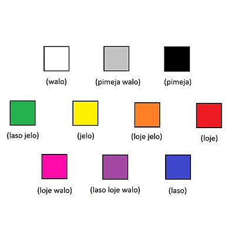
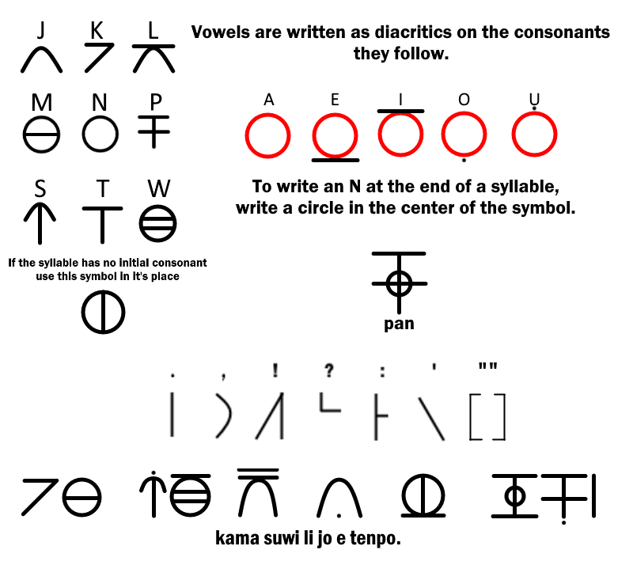

[Up]
[Up]
February 11, 2020
Das Ziel der von Sonja Lang (2001) geschaffenen Sprache toki pona ist der Minimalismus. toki pona besteht aus nur etwa 120 Wörtern, die in ihrer Form nicht verändert werden. Entsprechend ihrer Position im Satz können die Wörter ihre Wortart und damit auch in ihrer Bedeutung variieren. Um etwas genauer zu beschreiben, kombiniert man die Wörter.
Es ist nicht das Ziel von toki pona, komplexe Sachverhalte zu beschreiben. Dissertationen und wissenschaftliche Arbeiten werden nie in toki pona verfasst. Juristen, Bürokraten, Theologen und Politiker seien vor den Nebenwirkungen dieser Sprache gewarnt.
toki pona ist also nicht angetreten, um das Verständigungsproblem auf der Welt zu lösen. Man kann diese Sprache aber in einem Monat lernen und für einen Kaffeeklatsch reicht es allemal. toki pona ist auf intelligente Art einfach und Joga für das Gehirn. Wer sich für Sprachen interessiert, aber verschachtelte Nebensätze und Kommas hasst, wird sicherlich Spaß an toki pona haben.
Vielleicht kann nur eine natürliche Sprache mit toki pona verglichen werden. Es ist die Sprache der Pirahá ([17]). Zum Beispiel hat diese Sprache keine Rekursion.
toki pona hat sich seit 2001 weiterentwickelt. Diese Lektionen basieren daher auf den Lektionen von B. J. Knight (jan Pije) [11] (2003) und dem offiziellen toki pona-Buch [15] von Sonja Lang (2014). Aber Fehler und Ungenauigkeiten habe ich versucht nicht zu übernehmen. Be meinen Lektionen wird großer Wert auf die Darlegung grammatikalischer Regeln gelegt. So lassen sich Mißverständnisse durch fehlerhafte Grammatik vermeiden.
Also viel Spaß bei den Lektionen und beim Lernen von toki pona! Beim Vokabellernen hilft Memrise [16]. Ein Wörterbuch Deutsch-toki pona findet man hier: [19]. Weitere Links zu toki pona findet man auf der Website [19].
Mit dem Tool Toki Pona Parser ([20]) kann man Rechtschreibung und Grammatik von toki pona-Sätzen überprüfen.
toki pona li ' pona, tawa sina.
Die Konsonanten werden wie im Deutschen ausgesprochen.
| Buchstabe | Aussprache wie in | |
| k | Kohle | |
| l | Lampe | |
| m | Mama | |
| n | Nashorn | |
| p | Papa | |
| s | Segel | |
| t | Tuch | |
| w | Wasser | |
| j | Jahr | |
| Buchstabe | Aussprache wie in | |
| a | Affe | |
| e | Ehe | |
| i | Insel | |
| o | Ohr | |
| u | Uhr | |
| . | Separator: Beendet wird ein Aussagesatz mit einem Punkt. | |
| ! | Separator: Aufforderungssätze und Ausrufesätze enden mit einem Ausrufungszeichen. | |
| ? | Separator: Beendet wird eine Frage (interrogativer Satz) mit einem Fragezeichen. | |
| : | Separator: Ein Doppelpunkt trennt einen Hinweis-Satz von einem Satz. | |
| , | Separator: Ein Komma wird nach 'o' verwendet wenn, man Leute anspricht. | |
| Optional kann es vor einer Präposition eingefügt werden. | ||
toki pona kennt, wie viele Sprachen, unterschiedliche Satzarten.
Die meisten Sätze sind Aussagesätze (Deklarativsätze) und enden mit einem Punkt. Aussagesätze sind Sätze, die eine Behauptung oder eine Annahme aufstellen, also eine Aussage über einen Sachverhalt machen, der wahr oder falsch sein könnte.
Fragesätze (Interrogativ) formulieren eine Frage. Sie enden mit einem Fragezeichen.
Aufforderungssätze (Imperativ) sind Sätze, die einen Befehl formulieren. Sie enden mit einem Ausrufungszeichen.
Ausrufesätze (Interjektionen, Exclamatory) sind Sätze, die Bewunderung oder Verwunderung zum Ausdruck bringen. Dazu gehören auch Grußformeln. Sie enden mit einem Ausrufungszeichen oder einem Punkt.
Überschriften (Headlines) sind meist keine vollständigen Sätze und enden nicht mit einem Satzzeichen.
Achte bitte immer auf korrekte Satzzeichen. Falsche beziehungsweise fehlende Satzzeichen beeinträchtigen die Verständlichkeit.
![[*]](http://rowa.giso.de/latexicons//crossref.png) )
)
Schreibe bitte die Antworten auf einen Zettel und überprüfe sie anschließend.
| Was sind Separatoren? | ||
| Welche Phrase hat kein Satzzeichen am Ende? | ||
| Welcher Separator steht am Ende eines Aussagesatzes? | ||
| Wann werden offizielle toki pona Wörter groß geschrieben? | ||
| Was darf vor oder nach einem Separator meist nicht stehen? | ||
Willkommen in der Welt von toki pona! Die meisten Wörter in toki pona sind mehrdeutig, weil diese Sprache so wenig Vokabeln hat. Wie auch immer, diese Vieldeutigkeit ist nicht unbedingt schlecht: Gerade wegen der verschwommenen Bedeutungen ist ein toki pona-Sprecher dazu gezwungen, sich auf die konkreten Aspekte zu konzentrieren und sich nicht in unwichtigen Details zu verlieren.
Eine weitere Form von Mehrdeutigkeit ist das Fehlen von Singular oder Plural. So bedeutet jan sowohl eine Person oder Leute. toki pona ist nicht die einzige Sprache, die bei den Formen der Substantive nicht zwischen Singular oder Plural unterscheidet. Die japanische Sprache verfährt ebenso.
Weiterhin gibt es keine Zeitformen, d. h. alle Verben bleiben gleich. Es gibt auch andere Sprachen, die keine Zeitformen haben. Wir werden aber Möglichkeiten kennenlernen, um mit Zeiten zu arbeiten.
Wie in der Vokabel-Liste zu sehen ist, können die meisten Wörter als unterschiedliche Wortarten verwendet werden. Dabei bleiben sie unverändert. Die Wortart ergibt sich aus der Position im Satz. In dieser Lektion werden wir uns mit Substantiven, Pronomen, Verben, Adjektiven und einem speziellen Trennwort (Separator) beschäftigen.
Ein Substantiv ist ein Wort für eine Person, Ort oder Ding. Ein Adjektiv ist ein Wort, das ein Substantiv beschreibt. Ein Verb beschreibt eine Aktion.
Pronomen (Fürwörter) sind Stellvertreter für verschiedene Arten von Wörtern. Sie werden an der gleichen Stelle wie das zu vertretene Wort verwendet und haben die gleichen grammatischen Merkmale wie dieses. Pronomen sind keine Inhaltswörter, sondern bezeichnen Personen oder Dinge durch Verweis auf den Kontext. Personalpronomen (ich, du, ...) vertreten Substantive. Possessivpronomen (mein, dein, ...) vertreten Adjektive. In den nächsten Lektionen werden wir die weiteren Arten von Pronomen kennenlernen.
Mit dem Personalpronomen mi oder dem Personalpronomen sina am Anfang und einem nachfolgenden Verb ist bereits ein einfacher Satz in toki pona komplett. Beendet wird ein Aussagesatz mit einem Punkt. toki pona kennt keine verschachtelten Nebensätze und fast keine Kommas.
| mi moku. | Ich esse. | |
| sina pona. | Du reparierst. |
In diesen Sätzen sind die Personalpronomen mi und sina jeweils die Subjekt-Phrase. In toki pona steht eine Subjekt-Phrase immer am Anfang des Satzes. In diesen Beispielen bestehen die Subjekt-Phrasen jeweils nur aus einem Subjekt (mi bzw. sina).
Das Subjekt ist der Träger der Handlung, des Vorgangs oder des Zustands. Es ist die wichtigste Ergänzung des Verbs im Satz, ein vollständiger Satz enthält immer ein Subjekt. Nach dem Subjekt fragt man mit wer oder was.
In den meisten Sprachen wird ein Prädikat durch ein Verb gebildet, dies ist jedoch nicht in allen Sprachen zwingend. Wie wir gleich sehen werden, wird auch in toki pona das Prädikat nicht zwingend durch ein Verb gebildet. Der Unterschied zwischen den Begriffen Verb und Prädikat liegt also darin, dass Verb eine Wortart bezeichnet, und Prädikat eine grammatische Funktion. Ein Prädikat und mögliche Objekte bilden eine Prädikat-Phrase.
Auch in anderen Sprachen können reguläre Sätze gebildet werden, ohne dass ein Verb darin erscheint. Beispiele hierfür sind Russisch und Arabisch. Man nennt diese Sprachen No-Copula-Sprachen. Eine Copula ist ein Wort, das Subjekt und Prädikat verbindet ('kopuliert'). Wenn ein 'normales' Verb das Prädikat bildet, braucht man keine zusätzliche Copula. Sie tritt nur auf, wenn ein Substantiv, Pronomen oder Adjektiv das Prädikat bildet. Im Deutschen dient das Verb 'sein' als Copula. No-Copula-Sprache, wie Toki Pona, benötigen keine Copula.
Ein Substantiv funktioniert dann als Prädikatsnomen oder ein Adjektiv als Prädikatsadjektiv. Das Substantiv bzw. Adjektiv wird damit aber nicht zum Verb. Der leere Verb-Slot kann aber nicht alleine eine Prädikat-Phrase bilden. Es muss ein Substantiv oder Adjektiv folgen. Das heißt, direkt nach mi oder sina kann der Satz noch nicht beendet werden.
Bei den No-Copula-Sprachen erkennt man meist an der Wortform, ob es sich beim Prädikat um ein Verb, Substantiv oder Adjektiv handelt. In Toki Pona ist das nicht möglich. In diesen Lektionen wird mit einem Apostroph ein nachfolgendes Substantiv beziehungsweise Adjektiv gekennzeichnet. Das ist aber keine offizielle Regel.
| mi moku. | Ich esse. | |
| mi ' moku. | Ich bin eine Mahlzeit. | |
| sina pona. | Du reparierst. | |
| sina ' pona. | Du bist gut. |
Ohne das Wort 'sein' geht die genaue Bedeutung verloren. moku kann in diesem Satz ein Verb oder ein Substantiv bzw. pona kann ein Adjektiv oder Verb sein. In solchen Situationen muss der Zuhörer auf den Kontext achten. Wie oft hast du schon etwas wie 'Ich bin eine Mahlzeit.' gehört? Ich hoffe nicht sehr oft. Also kannst du dir ziemlich sicher sein, dass mi moku 'ich esse' bedeutet.
| telo li pona. | Wasser reinigt. | |
| suno li suno. | Die Sonne scheint. | |
| moku li ' pona. | Das Essen ist gut. | |
| ona li ' moku. | Es ist Essen. |
Ist der Verb-Slot leer, kann nach li ein Substantiv oder Adjektiv folgen. Wie schon geschrieben, kann ein leerer Verb-Slot nicht alleine eine Prädikat-Phrase bilden. Es muss ein Substantiv oder Adjektiv folgen. Das heißt, direkt nach li kann der Satz noch nicht beendet werden oder ein Objekt folgen.
)
Schreibe bitte die Antworten auf einen Zettel und überprüfe sie anschließend.
| Was ist ein Verb? | ||
| Was ist ein Substantiv? | ||
| Wozu dient li? | ||
| Was vertritt ein Personalpronomen? | ||
| Wie erkennt man Substantive, Pronomen, Verben und Adjektive in toki pona? | ||
| Was ist ein Subjekt? | ||
| Nach welchen Subjekt-Phrasen wird li nicht benutzt? | ||
| Wo steht das Subjekt im Satz? | ||
| Kann ein leerer Verb-Slot alleine ein Prädikat bilden? | ||
| Wann kann ein Verb-Slot leer sein? | ||
| Was ist ein Prädikat? | ||
| Ein vollständiger Satz in toki pona enthält immer... | ||
| Aus welchen Wortarten kann in toki pona ein Prädikat gebildet werden? | ||
| Was ist ein Adjektiv? | ||
| Wo befinden sich mögliche Adjektiv-Slots? | ||
| Warum kann nach li ein Satz nicht beendet werden? | ||
Welche Wortarten kann das jeweilige Wort in dem Satz nach dem Bindestrich darstellen? Beispiel:
| mi - mi moku. | Personalpronomen | |
| sina - sina pona. | ||
| moku - moku li ' pona. | ||
| ona - ona li ' moku. | ||
| li - moku li ' pona. | ||
Versuche diese Sätze zu übersetzen. Mit dem Tool Toki Pona Parser ([20]) kann man Rechtschreibung und Grammatik überprüfen.
| Menschen sind gut. | ||
| Ich esse. | ||
| Du bist groß. | ||
| Wasser ist einfach. | ||
| Der See ist groß. | ||
| suno li ' suli. | ||
| mi ' suli. | ||
| jan li moku. | ||
| mi moku e kili. | Ich esse Früchte. |
Auch haben wir gesehen, wie sina pona zwei mögliche Bedeutungen hat: 'Du bist gut.' oder 'Du reparierst'. Wenn kein Objekt angegeben wird, kann man wohl annehmen, dass es 'Du bist gut.' bedeutet. Wenn man sagt 'Du reparierst.', sagt man auch meist, was man repariert.
| ona li pona e ilo. | Sie repariert die Maschine. | |
| mi pona e ijo. | Ich repariere etwas. |
Vor dem Separator e kann nur ein (zusammengesetztes) Verb stehen. Genauer gesagt ist es ein Slot für ein transitives Verb. Transitive Verben sind Verben, nach denen ein direktes Objekt (Akkusativobjekt) stehen kann. Ein transitives Verb macht etwas mit dem direkten Objekt.
Mit dem Separator e wird das direkte Objekt eingeleitet. Ein Objekt ist eine optionale Satzergänzung. Ein direktes Objekt ist von der Handlung (also dem Prädikat) am stärksten beeinflusst. Das direkte Objekt (Akkusativobjekt) kann man mit 'Wen' oder 'Was' erfragen ('Was repariert sie?'). Das direkte Objekt ist Teil der Prädikat-Phrase.
Im direkten Objekt ist der erste Slot nach dem Separator e immer ein Substantiv- oder Pronomen-Slot. In den obigen Beispielen wurden die Substantiv-Slots mit kili und ijo gefüllt.
| jan li telo e ona. | Ein Mensch wäscht sich. |
In diesem Satz ist das erste mi ein Personalpronomen. Das mi nach dem e ist ein Reflexivpronomen.
| mi telo e mi. | Ich wasche mich. |
Hier ein Satz mit sina als Personal- und Reflexivpronomen
| sina telo e sina. | Du wäschst dich. |
Hier ein Satz mit ona als Personal- und Reflexivpronomen
| ona li telo e ona. | Sie wäscht sich. |
Im Deutschen bildet man zusammengesetzte Sätze oft mit 'und'. In toki pona gibt es zwei Arten, zusammengesetzte Sätze zu bilden. Eine Möglichkeit verwendet li, die andere Variante verwendet e.
Man kann den Separator li mehrmals im Satz verwendeen. Jeder Separator li beginnt eine neue Prädikat-Phrase. Damit kann man einem Subjekt mehrere Handlungen bzw. Eigenschaften zuweisen.
| ona li ' pona li unpa. | Er ist toll und hat Sex. |
Im folgenden Beispiel wird der Separator li nicht zwischen mi und moku verwendet, da ja nach dem Subjekt mi (und sina) kein li folgt. Das zweite Prädikat pakala muß aber mit einem li eingeleitet werden, da ansonsten der Satz chaotisch und verwirrend wäre. Zusammengesetzte Sätze mit dem Personalpronomen sina als Subjekt folgen auch diesem Muster.
| mi moku li pakala. | Ich esse und zerstöre. |
Es gibt keine verschachtelten Prädikat-Phrasen.
Man kann die Reihenfolge vertauschen.
ona li moku li pona. = ona li pona li moku.
Jede Prädikat-Phrase kann natürlich direkte Objekte enthalten.
| mi moku e moku li lukin e ma. | Ich esse das Essen und betrachte die Landschaft. |
Das offizielle Toki-Pona-Buch empfiehlt bei den Personalpronomen mi oder sina als Subjekt, nur eine Prädikat-Phrase zu verwenden.
| mi moku e kili e telo. | Ich verspeise/trinke die Frucht und das Wasser. | |
| mi wile lukin e ma e suno. | Ich will das Land und die Sonne sehen. |
Es gibt keine verschachtelten e-Phrasen.
Man kann die Reihenfolge vertauschen.
mi moku e moku e telo. = mi moku e telo e moku.
Wir können mehrere li und e kombinieren. Wir haben hier zwei Prädikat-Phrasen mit jeweils zwei direkten Objekten. Besser ist es aber, dazu mehrere kurze Sätze zu verwenden.
| mi moku e kili e telo li lukin e ma e jan. | Ich verspeise Früchte und Wasser und sehe Land und Menschen. |
)
| Wie erfragt man das direkte Objekt? | ||
| Welche Wortart hat ein Prädikat vor dem Separator e? | ||
| Zu welcher Phrase im Satz gehört ein direktes Objekt? | ||
| Welche Wortarten sind nach dem Separator e möglich? | ||
| Was ist ein Prädikatsnomen? | ||
| Wo befinden sich mögliche Slots für Reflexivpronomen? | ||
| Kann man mit mehreren e mehrere Eigenschaften eines Subjektes beschreiben? | ||
| Wie kann man mehrere Prädikat-Phrasen in einem Satz bilden? | ||
Welche Wortarten kann das jeweilige Wort in dem Satz nach dem Bindestrich darstellen? Beispiel:
| mi - mi moku. | Personalpronomen | |
| e - mi moku e kili. | ||
| pona - mi pona e ijo. | ||
| Das zweite sina - sina telo e sina. | ||
| ilo - ona li pona e ilo. | ||
Versuche, diese Sätze zu übersetzen. Mit dem Tool Toki Pona Parser ([20]) kann man Rechtschreibung und Grammatik überprüfen.
| Ich habe ein Werkzeug. | ||
| Sie isst Früchte. | ||
| Etwas schaut mich an. | ||
| Ananas sind Nahrung und gut. | ||
| Er wäscht sich. | ||
| mi ' jan li ' suli. | ||
Adverbien (Umstandswörter) bezeichnen die Umstände, in denen eine Handlung verläuft. Da Handlungen durch Verben beschrieben werden, beschreiben Adverbien also Verben. Zum Beispiel bei dem Satz 'Du singst gut.' wird das Verb 'singen' mit dem Adverb 'gut' genauer beschrieben.
In toki pona folgen Adverbien dem Verb, das sie beschreiben. Mögliche Adverb-Slots befinden sich also nur nach Verben. Adverbien können also nicht nach Substantiven, Adjektiven, Präpositionen oder Separatoren stehen.
Da Verben zur Prädikat-Phrase gehören, gehören auch Adverbien zur Prädikat-Phrase. In toki pona kann ja eine Prädikat-Phrase ein Substantiv als Prädikatsnomen oder ein Adjektiv als Prädikatsadjektiv enthalten. Da dann der Verb-Slot leer ist, gibt es auch keine Adverb-Slots in einer solchen Prädikat-Phrase.
In diesem Satz wird das transitive Verb lawa mit dem Adverb pona beschrieben.
| mi lawa pona e jan. | Ich führe Menschen gut. |
In den folgenden Sätzen beschreiben die Adverbien ike, sewi, mute, lili die jeweiligen Verben utala, lukin, wile, lukin.
| mi utala ike. | Ich kämpfe schlecht. | |
| sina lukin sewi e suno. | Du schaust zur Sonne hoch. | |
| ona li wile mute e ni. | Sie will viel von diesem. | |
| mi li lukin lili e ona. | Ich sah es kaum. |
Man sollte nicht mehr als drei Adverbien nach einem Verb benutzen. Dabei sollte ein Adverb nicht mehrfach verwendet werden.
| ona li pona ike mute e ilo. | Er reparierte sehr schlecht die Maschine. | |
| mi mute lukin mute e ma. | Ich vergrößere gut sichtbar das Land. |
Um zu sagen, dass du etwas bestimmtes tun willst, verwende das Hilfsverb wile.
| mi wile lukin e ma. | Ich möchte die Landschaft sehen. | |
| mi wile pakala e sina. | Ich muss dich vernichten. | |
| ona li wile jo e ilo. | Er will das Werkzeug haben. | |
| sina kama e ni: mi wile moku. | Du hast Folgendes bewirkt: Ich habe Hunger. |
Sehr häufig wird das Hilfsverb kama zusammen mit dem Hauptverb jo verwendet.
| kama jo | bekommen, erhalten | |
| mi kama jo e telo. | Ich bekam das Wasser. |
)
Schreibe bitte die Antworten auf einen Zettel und überprüfe sie anschließend.
| Was sind Adverbien? | ||
| Kann ein Adverb nach einem Prädikatsnomen stehen? | ||
| Wo befinden sich Slots für Adverbien? | ||
| Durch welche Wortart wird eine Handlung beschrieben? | ||
| Wann enthält eine Prädikats-Phrase Slots für Adverbien? | ||
| Wozu dient ein Hilfsverb? | ||
| Zu welcher Phrase im Satz gehört ein Hilfsverb? | ||
Welche Wortarten kann das jeweilige Wort in dem Satz nach dem Bindestrich darstellen? Beispiel:
| mi - mi moku. | Personalpronomen | |
| kama - mi kama jo e telo. | ||
| wile - mi wile lukin e ma. | ||
| ike - mi lawa ike e jan. | ||
| jan - mi ' jan. | ||
Versuche diese Sätze zu übersetzen. Mit dem Tool Toki Pona Parser ([20]) kann man Rechtschreibung und Grammatik überprüfen.
| jan li pona ilo e ilo. | ||
| sina lukin unpa mute e mi. | ||
| jaki li jaki lili e mi. | ||
| sina len nasa jaki e sina. | ||
| ilo li sewi e sewi. | ||
| ona li lawa utala e utala. | ||
| mi wile unpa e ona. | ||
| jan li wile jo e ma. | ||
| Sie vermehrt sehr schlecht den Besitz. | ||
| Ich will viel Sex mit dir haben. | ||
| Sie kleidete sich wenig. | ||
| Die Sonne bestrahlt warm das Land. | ||
| Sie ist gut. | ||
| Er will das Werkzeug zerstören. | ||
| Sie hat Durst. | ||
Wir hatten ja schon Prädikatsadjektive als Bestandteil einer Prädikat-Phrase kennengelernt. Ein Prädikatsadjektiv beschreibt das Substantiv der Subjekt-Phrase. In diesem Beispiel beschreibt das Prädikatsadjektiv pona in der Prädikat-Phrase das Substantiv jan in der Subjekt-Phrase.
| jan li ' pona. | Der Mensch ist gut. |
Allgemein kann man sagen, dass Adjektive Substantive beschreiben. Wie in anderen Sprachen können Adjektive auch direkt mit dem Substantiv geschrieben werden. In toki pona stehen die Adjektive nach dem zu beschreibenden Substantiv. Dies ist zwar genau umgekehrt wie im Deutschen, aber in anderen Sprachen, wie z. B. im Italienischen, ist dies normal. Mögliche Adjektiv-Slots befinden sich also direkt nach Substantiv-Slots und, wie bereits beschrieben, Prädikatsadjektive in der Prädikat-Phrase. Substantiv-Slots sind am Anfang einer Subjekt-Phrase, am Anfang einer Prädikat-Phrase als Prädikatsnomen und in Objekt-Phrasen möglich. Das heißt, Adjektiv-Slots sind in einer Subjekt-Phrase und in Prädikat-Phrasen möglich. Adjektive sind mit den Adverbien vergleichbar, aber in toki pona etwas komplexer. Das Substantiv jan wird hier mit dem Adjektiv pona beschrieben.
| jan pona | guter Mensch, Freund |
Ein Freund ist nichts anderes als ein guter Mensch. Da toki pona einen sehr geringen Sprachumfang hat, müssen wir oft Substantive mit Adjektiven kombinieren, um einen bestimmten Begriff zu sagen. Hier weitere Beispiele.
| jan pakala | eine verletzte Person, Opfer | |
| ilo moku | Besteck, Löffel, Gabel, Messer |
Man sollte nicht mehr als drei Adjektive nach einem Substantiv benutzen. Dabei sollte ein Adjektiv nicht mehrfach verwendet werden.
| jan utala | Soldat | |
| jan utala nasa | blöder Soldat | |
| jan utala nasa mute | viele blöde Soldaten |
Das Adjektiv mute steht am Schluß des Ausdrucks. Dies gilt fast immer. Der Grund dafür ist, dass die Adjektive in einer logischen Reihenfolge sortiert sein müssen.
| jan utala nasa | blöder Soldat | |
| jan nasa utala | kämpfender Idiot |
Hier einige gebräuchliche Kombinationen von Substantiven mit Adjektiven.
| ike lukin | hässlich | |
| pona lukin | schön, hübsch, attraktiv | |
| jan ni li pona lukin. | Diese Person sieht gut aus. | |
| jan ike | Feind | |
| jan lawa | Anführer, Leiter, Boss, Chef | |
| jan lili | Kind | |
| jan sewi | Heiliger, Gott, fliegendes Spaghettimonster | |
| jan suli | Erwachsener | |
| jan unpa | Liebhaber, Geliebte, Prostituierte, Gigolo | |
| ma telo | Schlamm, Sumpf, Moor | |
| ma tomo | Stadt, Kleinstadt, Dorf | |
| mi mute | wir, uns | |
| ona mute | sie (3. Person Plural), ihnen | |
| telo nasa | Alkohol, Bier, Wein, Schnaps | |
| tomo telo | Badezimmer, Toilette, WC | |
| ilo suno | Lampe, Taschenlampe, Scheinwerfer |
Es sind auch mehrere Prädikatsadjektive möglich. Allerdings kann man meist nicht unterscheiden, ob es sich an der ersten Position in der Prädikat-Phrase um ein Prädikatsnomen oder um ein Prädikatsadjektiv handelt. Während mute in diesem Beispiel nur ein Adjektiv sein kann, kann pona sowohl ein Adjektiv als auch ein Substantiv sein.
| jan li ' pona mute. | Der Mensch ist sehr gut. / Der Mensch ist das viele Gute. |
| mama | Eltern (Vater und/oder Mutter) | |
| mama meli | Mutter | |
| mama mije | Vater |
Ein Possessivpronomen drückt eine Eigenschaft oder Zugehörigkeit aus und wird nach dem entsprechenden (zusammengesetzten) Substantiv platziert. Das heißt, bei einem Substantiv mit nachfolgenden Adjektiven wird das Possessivpronomen nach den Adjektiven platziert. Bei einem Substantiv ohne Adjektive befindet sich das Possessivpronomen nach dem Substantiv. In diesen Beispielen sind mi, sina und ona Possessivpronomen.
| tomo pona mi | mein schönes Haus | |
| ma sina | dein Land | |
| telo ona | sein Wasser |
Das Demonstrativpronomen ist eine Wortart, mit der der Sprecher auf einen Gesprächsgegenstand verweist. Das Demonstrativpronomen ni kann sowohl adjektivisch als auch substantivisch gebraucht werden. Ein Slot für ein adjektivisches Demonstrativpronomen ist nach einem Substantiv möglich.
| jan ni li pona. | Dieser Typ ist gut. | |
| jan li lukin e ijo ni. | Der Kerl betrachtet dieses Ding. |
Ein substantivisches Demonstrativpronomen wird anstatt eines Substantivs verwendet. Slots für substantivische Demonstrativpronomen entsprechen also den Positionen von Substantiv-Slots im Satz.
| ni li pona. | Dies ist gut. | |
| jan li lukin e ni. | Der Kerl betrachtet jenes. |
)
Schreibe bitte die Antworten auf einen Zettel und überprüfe sie anschließend.
| Was vertritt ein Possessivpronomen? | ||
| Welche Arten von Demonstrativpronomen gibt es? | ||
| Was ist komplexer in toki pona: Adjektive oder Adverbien? | ||
| Mit welcher Wortart werden Substantive beschrieben? | ||
| Was ist der Unterschied zwischen Adverbien und Adjektiven? | ||
| Wo befinden sich Slots für Adjektive? | ||
| Kann ein Adjektiv nach einem Prädikatsnomen stehen? | ||
Versuche, dieses Gedicht zu übersetzen.
| mi jo e kili. | ||
| ona li ' pona li ' lili. | ||
| mi moku lili e kili lili. | ||
Versuche, diese Sätze zu übersetzen. Mit dem Tool Toki Pona Parser ([20]) kann man Rechtschreibung und Grammatik überprüfen.
| Der Chef trank dreckiges Wasser. | ||
| Ich brauche eine Gabel. | ||
| Ein Feind greift sie an. | ||
| Diese schlechte Person hat eigenartige Kleidung. | ||
| Wir tranken viel Wodka. | ||
| Die Kinder beobachten die Erwachsenen. | ||
| mi lukin e ni. | ||
| mi lukin sewi e tomo suli. | ||
| seli suno li seli e tomo mi. | ||
| jan lili li wile e telo kili. | ||
| ona mute li nasa e jan suli. | ||
| mi kama e pakala. | ||
Wir haben bereits transitive Verben kennen gelernt. Ein transitives Verb macht etwas mit dem direkten Objekt. Dagegen werden Verben, die kein Objekt beeinflussen, intransitive Verben genannt. Nach einem intransitiven Verb folgt entweder kein Objekt oder ein indirektes Objekt. In den Sätzen 'Ich bin.' und 'Ich bin im Haus.' ist 'bin' ein intransitives Verb. In toki pona steht zwischen dem intrasitiven Verb und indirekten Objekt kein e.
In diesen Beispielen wird das intransitive Verb lon verwendet. Da vor lon kein anderes Prädikat steht, muss lon ein Verb sein.
| mi lon tomo. | Ich bin im Haus. | |
| suno li lon sewi. | Die Sonne ist am Himmel. | |
| kili li lon poki. | Die Früchte sind im Korb. |
Hier wird das intransitive Verb kepeken verwendet.
| mi kepeken ilo. | Ich benutze ein Werkzeug. | |
| sina wile kepeken ilo. | Du mußt die Hilfsmittel verwenden. | |
| mi kepeken poki ni. | Ich nehme diese Tasse. |
In einigen anderen Lektionen wird das transitive Verb kepeken verwendet. Dies liegt sicherlich daran, dass man mit 'Was' nach dem Objekt nach kepeken fragen kann. Da aber das Objekt nicht unmittelbar vom Verb kepeken beeinflusst wird, ist es ein indirektes Objekt und kepeken ein intransitives Verb.
Das intransitive Verb kon bedeudet 'atmen'.
| jan ni li kon ike. | Dieser Mensch atmet schlecht. |
Dagegen bedeutet das transitive Verb kon 'wegblasen'.
| mi kon e ilo suno. | Ich puste die Kerze aus. |
Das intransitive Verb kama bedeutet 'kommen' oder 'ankommen'.
| pona li kama. | Das Gute wird kommen. |
Das intransitive Verb pakala bedeutet 'vermasseln', 'auseinander fallen' oder 'brechen'.
| tomo ni li pakala. | Dieses Haus fällt auseinander. |
Das intransitive Verb sewi bedeutet 'aufstehen'.
| mi sewi. | Ich stehe auf. |
Wir haben gelernt, dass ein Verb von einem Adverb modifiziert werden kann. Dies gilt natürlich auch für intransitive Verben. In diesem Beispiel modifiziert das Adverb mute das intransitive Verb lon.
| mi lon mute tomo. | Ich bin oft im Haus. |
Vor einem intransitiven Verb kann natürlich auch ein Hilfsverb stehen.
| mi wile lon tomo. | Ich möchte im Haus sein. |
)
| Wie kann man nicht ein indirektes Objekt erfragen? | ||
| Welche Objektart wird stark vom Prädikat beeinflußt? | ||
| Zu welcher Phrase im Satz gehört das indirekte Objekt? | ||
| Was für ein Slot steht an erster Position in einem indirekten Objekt? | ||
| Wie nennt man Verben, die kein Objekt beeinflussen? | ||
| Was steht vor einem indirekten Objekt in toki pona? | ||
| Wo ist ein Slot für ein adjektivisches Demonstrativpronomen möglich? | . | |
| Wo ist ein Slot für ein Hilfsverb? | ||
Versuche diese Sätze zu übersetzen. Mit dem Tool Toki Pona Parser ([20]) kann man Rechtschreibung und Grammatik überprüfen.
| Dies ist für meinen Freund. | ||
| Die Werkzeuge sind im Container. | ||
| Diese Flasche ist im Dreck. | ||
| Sie streiten. | ||
| Die Frau gebar ihr Kind. | ||
Die dritte Objektklasse in toki pona ist das Präpositionalobjekt. Ein Präpositionalobjekt beginnt mit einer Präposition. Eine Präposition beschreibt eine Beziehung zwischen Wörtern in einem Satz und steht vor Substantiven oder Pronomen. Es ist eng mit dem Prädikat verbunden. Die Präposition bestimmt den Kasus (Fall). Die Frage nach dem Präpositionalobjekt ist abhängig von der verwendeten Präposition. In toki pona befindet sich ein Slot für Präpositionen nur am Anfang eines Präpositionalobjekts. Es wird empfohlen, ein Komma vor einer Präposition zu setzen. Das ist aber keine offizielle Regel.
Im Präpositionalobjekt ist der erste Slot nach der Präposition immer ein Substantiv- oder Pronomen-Slot. Danach sind optionale Slots für Adjektive, Possessivpronomen und Demonstrativpronomen möglich. In toki pona steht ein optionales Präpositionalobjekt am Ende eines Satzes. Mögliche direkte Objekte oder indirekte Objekte stehen immer vor einem Präpositionalobjekt. Wie die anderen Objektarten ist ein Präpositionalobjekt ein optionaler Bestandteil einer Prädikat-Phrase.
Die Präposition kepeken bedeutet 'mit', 'mittels' oder 'per'.
| mi moku, kepeken ilo moku. | Ich esse mit Besteck. | |
| mi lukin, kepeken ilo suno. | Ich sehe mittels Taschenlampe. |
Die Präposition lon bedeutet 'in', 'im', 'an', 'am', 'bei' oder 'auf'.
| mi moku, lon tomo. | Ich esse im Haus. | |
| mi telo e mi, lon tomo telo. | Ich wasche mich im Badezimmer. |
Da es sowohl die Präposition lon auch das intransitive Verb lon gibt, ist möglicherweise die Aussage folgender Sätze verwirrend.
| mi wile lon tomo. | Ich will zu Hause sein. / Ich will etwas im Haus. |
Dieser Satz hat mindestens zwei mögliche Übersetzungen. Die erste Übersetzung drückt aus, dass der Sprecher zu Hause sein will. Die zweite Übersetzung sagt aus, dass er in einem Haus ist und etwas will (ohne zu sagen, was genau). Nach einem Komma ist hier nur die Präposition lon möglich.
| mi wile, lon tomo. | Ich will etwas im Haus. |
Wenn man sagen möchte 'Ich will zu Hause sein.', muss man den Satz mit einem Doppelpunkt in zwei Sätze aufteilen.
| mi wile e ni: mi lon tomo. | Ich will dies: Ich bin zu Hause. |
In toki pona wird oft dieser Trick verwendet. Beachte dabei, dass jeweils vor und nach dem Doppelpunkt ein vollständiger Satz ist. toki pona kennt keine verschachtelten Nebensätze.
| sina toki e ni, tawa mi: sina moku. | Du sagtest zu mir, dass Du isst. |
In dem letzten Satz steht nach dem Komma die Präposition tawa.
| mi toki, tawa sina. | Ich spreche zu dir. | |
| ona li lawa e jan, tawa ma pona. | Er führte die Leute in das gelobte Land. | |
| ona li kama, tawa ma mi. | Er kommt in mein Land. |
In den folgenden Sätzen ist jeweils das erste tawa ein intransitives Verb. Das jeweils zweite tawa ist eine Präposition und leitet das Präpositional-Objekt ein.
| mi tawa, tawa tomo mi. | Ich gehe zu meinem Haus. | |
| ona mute li tawa, tawa utala. | Sie ziehen in den Krieg. | |
| sina wile tawa, tawa telo suli. | Du willst zum Meer gehen. | |
| ona li tawa, tawa sewi kiwen. | Sie besteigt die Felsspitze. |
In den folgenden Sätzen ist jeweils das erste tawa ein transitives Verb. Das jeweils zweite tawa ist eine Präposition
| mi tawa e mi, tawa tomo mi. | Ich bewege mich zu meinem Haus. | |
| mi tawa e kiwen, tawa sewi. | Ich bewege den Felsen zum Gipfel. |
Wenn man ausdrücken möchte, dass einem etwas gefällt, verwendet man auch die Präposition tawa. Dies erfolgt nach dem Muster 'es ist gut zu mir' oder 'es ist schlecht zu mir'.
| ni li ' pona, tawa mi. | Das ist gut für mich. / Ich mag das. | |
| ni li ' ike, tawa mi | Das ist schlecht für mich. / Ich mag es nicht. | |
| kili li ' pona, tawa mi. | Ich mag Obst. | |
| toki li ' pona, tawa mi. | Ich rede gern. / Ich mag Sprachen. | |
| utala li ' ike, tawa mi. | Ich mag keinen Krieg. | |
| telo suli li ' ike, tawa mi. | Ich mag das Meer nicht. | |
| pipi li ' ike, tawa mi. | Ich hasse Spinnen. | |
| ali li ' pona, tawa mi. | Für mich ist alles in Ordnung. | |
| ma ali li ' pona, tawa mi. | Für mich sind alle Länder gut. |
In toki pona gibt es keine Nebensätze. Wenn man z. B. sagen will 'mir gefällt es, die Landschaft anzuschauen', ist es besser den Satz aufzuteilen.
| mi lukin e ma. ni li ' pona, tawa mi. | Ich schaue mir die Landschaft an. Das ist gut für mich. |
Natürlich kann man den Satz auch anders sagen.
| ma li pona lukin. | Die Landschaft ist schön anzuschauen. |
Die Präposition tawa kann auch 'für' bedeuten.
| mi pona e tomo, tawa jan pakala. | Ich reparierte das Haus für den behinderten Mann. |
Es ergeben sich Mehrdeutigkeiten, da tawa auch als Adjektiv verwendet werden kann. tawa wird als Adjektiv benutzt, um eine sich bewegende Konstruktion zu bezeichnen.
| tomo tawa | Auto, PKW, LKW, Bus | |
| tomo tawa telo | Boot, Schiff, Floß | |
| tomo tawa kon | Flugzeug, Hubschrauber, Ballon, Zeppelin |
Betrachten wir uns den folgenden Satz.
| mi pana e tomo tawa sina. | ? | |
Nach mi pana e tomo ist sowohl ein Slot für ein Adjektiv als auch ein Slot für eine Präposition möglich. Mit dem Adjektiv tawa bedeutet der Satz 'ich gebe dein Auto'. Mit der Präposition tawa bedeutet dagegen der Satz 'ich gebe dir das Haus'. Man kann ein Komma vor tawa einfügen, um nur einen Slot für eine Präposition zu erzwingen. Besser ist es, den Satz aufzuteilen.
| mi jo e tomo tawa sina. mi pana e ni tawa sina. | Ich habe dein Auto. Ich gebe es dir. | |
| ni li tomo. mi pana e ni tawa sina. | Dies ist ein Haus. Ich gebe es dir. |
In diesm Satz wird das intransitive Verb kama und die Präposition tawa verwendet.
| ona li kama, tawa tomo mi. | Er kam zu meinem Haus. |
Die Präposition sama bedeutet 'wie' oder 'dergleichen'.
| ona li lukin, sama pipi. | Er guckt wie ein Käfer. |
Dagegen kann ja direkt nach dem Separator li keine Präposition folgen. Es gäbe dann kein Prädikat. Das Adjektiv sama wird hier als Prädikatsadjektiv verwendet.
| jan ni li ' sama mi. | Diese Person ist mir ähnlich. |
Die Präposition tan bedeutet 'von', 'aus', 'durch', 'wegen', 'weil' oder 'seit'.
| mi moku, tan ni: mi wile moku. | Ich esse weil ich hungrig bin. |
Sowohl indirekte Objekte als auch Präpositionalobjekte werden nicht direkt vom Prädikat beeinflusst. Präpositionalobjekte sind daher eine Sonderform indirekter Objekte. Im folgenden Beispiel wird mit dem intransitiven Verb kepeken das indirekte Objekt ilo ni verwendet.
| mi pona e tomo tawa. mi kepeken ilo ni. | Ich reparier das Auto. Ich verwende dieses Werkzeug. |
Man kann die Aussage kürzer und eindeutiger formulieren, wenn die Präposition kepeken das Präpositionalobjekt ilo ni einleitet.
| mi pona e tomo tawa, kepeken ilo ni. | Ich repariere das Auto mit diesem Werkzeug. |
Wenn man allerdings unbedingt dieses Werkzeug verwenden möchte, muss man das intransitive Verb kepeken verwenden. Hilfsverben lassen sich nur mit Verben verwenden und nicht mit Präpositionen. Vor dem intransitiven Verb kepeken wird hier das Hilfsverb wile verwendet.
| mi pona e tomo tawa. mi wile kepeken ilo ni. | Ich reparier das Auto. Ich möchte dieses Werkzeug verwenden. |
Betrachten wir das intransitive Verb tawa.
| mi tawa sina. | Ich besuche dich. / Ich verlasse dich. | |
Dieser Satz ist mehrdeutig. Nach mi ist hier sowohl ein Subtantiv- (Prädikatsnomen) als auch ein Adjektiv-Slot (Prädikatsadjektiv) möglich.
| mi tawa sina. | Ich bin deine Bewegung. | |
Besser ist die Verwendung eines Präpositionalobjektes. Wird, wie in diesen Lektionen empfohlen, ein Komma vor der Präposition gesetzt, wird der Satz eindeutiger.
| mi tawa, tawa sina. | Ich gehe zu dir. | |
| mi tawa, tan sina. | Ich verlasse dich. |
Man kann den Satz auch mit dem Reflexivpronomen mi als direktes Objekt formulieren. Das erste tawa ist hier ein transitives Verb. Das zweite tawa ist eine Präposition.
| mi tawa e mi, tawa sina. | Ich bewege mich zu dir. | |
)
| Mit was ist eine Präposition eng verbunden? | ||
| Zu welcher Phrase im Satz gehört das Präpositionalobjekt? | ||
| Wo befinden sich Slots für Präpositionen? | ||
| An welcher Position im Satz kann ein Präpositionalobjekt stehen? | ||
| Mit welchen Separatoren kann man zusammengesetzte Sätze bilden? | ||
| Welche Slots sind an zweiter Stelle im Präpositionalobjekt möglich? | ||
Versuche diese Sätze zu übersetzen. Mit dem Tool Toki Pona Parser ([20]) kann man Rechtschreibung und Grammatik überprüfen.
| Ich reparierte die Taschenlampe mit einem kleinen Werkzeug. | ||
| Ich mag toki pona. | ||
| Wir gaben ihnen Essen. | ||
| Ich möchte mit meinem Auto zu seinem Haus fahren. | ||
| Leute sehen wie Ameisen aus. | ||
| sina wile kama, tawa tomo toki. | ||
| jan li toki, kepeken toki pona, lon tomo toki. | ||
| mi tawa, tawa tomo toki. ona li pona, tawa mi. | ||
| sina kama jo e jan pona, lon ni. | ||
| sama li ' ike. | ||
| mi sona e tan. | ||
In toki pona werden relative Ortsangaben mit speziellen Substantiven gebildet. Diese speziellen Substantive nennt man 'ortsbezogene Substantive'. Für die relativen Ortsangaben sind neben dem Substantiv noch Adjektive, Possessivpronomen oder Demonstrativpronomen notwendig. Vor ortsbezogenes Substantiven steht entweder ein intransitives Verb oder eine Präposition. Das heißt, relative Ortsangaben befinden sich entweder in eimem indirekten Objekt oder einem Präpositionalobjekt und sind damit Teil einer Prädikatsphrase.
Meist wird vor ortsbezogenes Substantive das intransitiven Verb lon oder die Präposition lon verwendet. Ist vor lon kein Verb vorhanden, kann lon keine Präposition sein. In diesen Beispielen wird das intransitive Verb lon verwendet.
| pipi li lon anpa mi. | Der Käfer ist an meiner Unterseite. | |
| moku li lon insa mi. | Das Essen ist in meinem Inneren. | |
| telo suli li lon monsi mi. | Das Meer liegt hinter mir. | |
| ma li lon noka mi. | Land ist unter meinen Füßen. | |
| ona li lon sewi mi. | Er ist in dem Bereich über mir. | |
| tomo li lon sinpin mi. | Das Haus befindet sich vor mir. |
In den folgenden Beispielen ist ein Verb vorhanden. Also wird die Präposition lon verwendet.
| mi moku, lon poka sina. | Ich esse an deiner Seite. | |
| ona li pona e ilo, lon tomo ona. | Er repariert das Werkzeug in seinem Haus. |
In diesem Satz ist das zweite tawa eine Präposition und steht vor dem ortsbezogenen Substantiv noka.
| mi tawa e mi, tawa noka sina. | Ich verneige mich vor dir. |
| mi anpa e jan utala. | Ich besiegte den Soldaten. |
| poka telo | Strand, Ufer |
| jan poka | Nachbar |
)
| Wie bildet man relative Ortsangaben in toki pona? | ||
| Was ist ein Possessivpronomen? | ||
| Wo ist ein Slot für ein substantivisches Demonstrativpronomen möglich? | ||
| Welcher Separator steht am Ende eines Aussagesatzes? | ||
| Was ist ein Prädikatsadjektiv? | ||
| In welchen Satzphrasen können sich ortsbezogenen Substantive befinden? | ||
Versuche diese Sätze zu übersetzen. Mit dem Tool Toki Pona Parser ([20]) kann man Rechtschreibung und Grammatik überprüfen.
| Mein Freund ist an meiner Seite. | ||
| Die Sonne ist über mir. | ||
| Das Land ist unter mir. | ||
| Böse Dinge liegen hinter mir. | ||
| Mir geht es gut, weil ich lebe. * | ||
| Ich schaue mir das Land mit dir an. | ||
| poka mi li ' pakala. | ||
| mi kepeken poki li kepeken ilo moku. | ||
| jan li lon insa tomo. | ||
* lon als Verb alleine bedeutet existieren bzw. real sein.
Satzglieder werden durch nachgestelltes ala verneint.
| mi lape ala. | Ich schlafe nicht. | |
| mi musi ala. | Ich amüsiere mich nicht. | |
| mi wawa ala. | Ich bin nicht stark. | |
| mi wile ala tawa musi. | Ich möchte nicht tanzen. | |
| tawa musi | tanzen | |
| mi wile ala pali. | Ich bin faul. |
| jan ala li toki. | Niemand redet. |
| ala li ' jaki. | Nichts ist dreckig. |
Ja/Nein-Fragen werden in toki pona nach einem einfachen Muster gebildet. An dem Teil des Satzen, nach dem gefragt wird, wird ala angefügt und der Satzteil wird wiederholt. In der Regel ist dieser Satzteil das gesamte Prädikat (Satzaussage). Der restliche Satzbau ändert sich nicht. Beendet wird eine Frage mit einem Fragezeichen.
Bezieht sich die Ja-/Nein-Frage auf ein intransitives Verb, wird an dieses das Adverb ala angefügt und das intransitives Verb wiederholt. Betrachten wir folgendes Beispiel.
| sina tawa, tan mi. | Du verlässt mich. |
Wollen wir fragen, ob du mich verlässt, hängen wir das Adverb ala an das intransitive Verb tawa. Danach wiederholen wir das intransitive Verb tawa.
| sina tawa ala tawa, tan mi? | Verlässt du mich? |
Hier weitere Beispiele.
| ona li lon ala lon tomo? | Ist er im Haus? | |
| sina kepeken ala kepeken ilo? | Verwendest du das Werkzeug? | |
| pona li kama ala kama? | Kommt das Gute? | |
| sina sewi ala sewi? | Stehst du auf? |
Bezieht sich die Ja-/Nein-Frage auf ein transitives Verb, wird an dieses das Adverb ala angefügt und das transitives Verb wiederholt.
| sina pona ala pona e ilo? | Reparierst du das Werkzeug? | |
| sina pana ala pana e moku tawa jan lili? | Hast du dem Kind zu Essen gegeben? | |
| pipi li moku ala moku e kili? | Fressen Käfer Früchte? | |
| ona li mama ala mama e sina? | Bemuttert sie dich? |
Wie wir gelernt haben bilden Hilfsverb und Verb zusammen das Prädikat. Bezieht sich die Ja-/Nein-Frage auf ein Hilfsverb, so wird das Adverb ala nicht an das Prädikat angehangen, sondern direkt an das Hilfsverb. Nur das Hilsverb wird wiederholt. Danach folgt das Verb.
| sina wile ala wile moku? | Möchtest du essen? | |
| sina ken ala ken lape? | Kannst du schlafen? | |
| sina kama ala kama jo e pali ni? | Hast du diesen Arbeit bekommen? |
Wir hatten schon den Unterschied zwischen Verb und Prädikat gelernt (siehe Seite ).
In toki pona sind Sätze ohne Verb möglich.
Dann dienen Substantive als Prädikatsnomen oder Adjektive als Prädikatsadjektive.
In den Lektionen von B. J. Knight (2003) und dem offiziellen Toki Pona Buch von Sonja Lang [15] werden Ja/Nein-Fragen mit ala nur mit Verben definiert. Dies widerspricht sowohl ihren eigenen Beispielen als auch der gängigen Praxis. Zum Beispiel kann man die Frage 'Ist sie eine Mutter?' so nicht formulieren. In diesen Lektionen werde ich mich daher nicht an diese Einschränkung halten.
Bezieht sich die Ja-/Nein-Frage auf ein Prädikatsnomen, wird an dieses das Adjektiv ala angefügt und das Prädikatsnomen wiederholt.
| ona li ' mama ala ' mama ? | Ist sie eine Mutter? | |
| ni li ' jan ala ' jan? | Ist das ein Mensch? | |
| ni li ' kili ala ' kili? | Ist das eine Banane? | |
| ni li ' tomo pi telo nasa ala ' tomo pi telo nasa? | Ist das eine Kneipe? | |
| ona li ' jan pi pona lukin ala ' jan pi pona lukin? | Ist sie eine attraktive Persion? |
Bezieht sich die Ja-/Nein-Frage auf ein Prädikatsadjektiv, wird an dieses das Adjektiv ala angefügt und das Prädikatsadjektiv wiederholt.
| sina ' pona ala ' pona? | Geht es dir gut? | |
| mi ' pona ala ' pona, tawa sina? | Magst du mich? | |
| suno li ' suli ala ' suli? | Ist die Sonne groß? | |
| len sina li ' telo ala ' telo? | Sind deine Kleider nass? |
Wenn die Antwort positiv ist, wiederholt man einfach das Prädikat oder das Hilsfverb der Frage. Ist die Antwort negativ, so fügt man zu dem Prädikat beziehungsweise Hilfsverb ala hinzu.
| sina wile ala wile moku? | Möchtest du essen? | |
| wile | Ja. | |
| wile ala | Nein. | |
| sina lukin ala lukin e kiwen? | Siehst du den Felsen? | |
| lukin | Ja. | |
| lukin ala | Nein. | |
| sina sona ala sona e toki mi? | Hast du verstanden was ich sagte? | |
| sona | Ja. | |
| sona ala | Nein. | |
| ni li ' tomo pi telo nasa ala ' tomo pi telo nasa? | Ist das eine Kneipe? | |
| tomo pi telo nasa. | Ja. | |
| tomo pi telo nasa ala. | Nein. | |
)
| Welcher Separator steht am Ende einer Frage? | ||
| Wie wird in toki pona ein Verb negiert? | ||
| Wie antwortet man in toki pona negativ auf eine Ja/Nein-Frage? | ||
| Wie antwortet man in toki pona positiv auf eine Ja/Nein-Frage? | ||
Versuche diese Sätze zu übersetzen. Mit dem Tool Toki Pona Parser ([20]) kann man Rechtschreibung und Grammatik überprüfen.
| Du mußt mir sagen warum! * | ||
| Ist ein Käfer neben mir? | ||
| Ich kann nicht schlafen. | ||
| Ich möchte nicht mit dir reden. | ||
| Er ging nicht zum See. | ||
| sina wile ala wile pali? wile ala. | ||
| jan utala li seli ala seli e tomo? | ||
| jan lili li ken ala moku e telo nasa. | ||
| sina kepeken ala kepeken ni? | ||
| sina ken ala ken kama? | ||
| sina pona ala pona? | ||
* Du mußt mir den Grund sagen.
| ma suli Amelika | Amerika | |
| ma suli Amelika lete | Nord-Amerika | |
| ma suli Amelika seli | Süd-Amerika | |
| ma suli Antasika | Antarktis | |
| ma suli Apika | Afrika | |
| ma suli Asija | Asien | |
| ma suli Elopa | Europa | |
| ma Epanja | Spanien | |
| ma Tosi | Deutschland | |
| ma tomo Lanten | London | |
| ma tomo Sanpansiko | San Francisco | |
| toki Inli | Englisch | |
| toki Epelanto | Esperanto | |
| meli Mawija | Maria | |
| jan Santa | Santa Claus |
Es können inoffizielle Wörter an die phonetischen Regeln von toki pona angepasst werden.
Im Anhang (siehe Seite ) wird beschrieben, wie man vorgehen muss.
So z.B. wird aus Amerika Mewika, aus Kanada Kanata.
Im Anhang findet man eine Liste von wichtigen inoffiziellen Wörtern (siehe Seite ).
| ma Kanata li ' pona. | Kanada ist gut. | |
| ma Italija li ' pona lukin. | Italien ist schön. | |
| mi wile tawa, tawa ma Tosi. | Ich möchte nach Deutschland reisen. | |
| ma Elopa li ' pona. | Europa ist gut. |
Da ja inoffizielle Wörter Adjektive sind, können sie auch als Prädikatsadjektiv verwendet werden.
| ma mi li ' Tosi. | Meine Heimat ist Deutschland. |
| ma suli Apika | Afrika |
| ma tomo Lantan li ' suli. | London ist groß. | |
| ma tomo Pelin | Berlin | |
| ma tomo Loma | Rom | |
| mi kama, tan ma tomo Pelin. | Ich komme aus Berlin. |
Hier ist ein Beispiel für ein inoffizielles Wort als Prädikatsadjektiv.
| ma tomo mi li ' Pelin. | Meine Heimatstadt ist Berlin. |
| toki Inli li ' pona. | Englisch ist gut. | |
| toki Kanse | Französisch | |
| toki Epelanto li ' pona. | Esperanto ist einfach. |
Hier ist ein Beispiel für ein inoffizielles Wort als Prädikatsadjektiv.
| toki mi li ' Tosi. | Meine Muttersprache ist deutsch. |
| jan Kanata | Kanadier | |
| jan Mesiko | Mexikaner | |
| meli Italija | Italienerin | |
| mije Epanja | Spanier |
| jan Lisa li ' pona. | Lisa ist nett. |
Namen können den phonetische Regeln von toki pona angepaßt werden.
| jan Pentan li pana e sona, tawa mi. | Brandon unterrichtet mich. | |
| pana e sona | lehren, unterrichten, Wissen geben | |
| jan Mewi li toki, tawa mi. | Mary redet mit mir. | |
| jan Nesan li ' musi. | Nathan ist lustig. | |
| jan Eta li ' jan unpa. | Heather ist eine Schlampe. |
Um sich vorzustellen sagt man:
| mi ' jan Pepe. | Ich bin Pepe. | |
| nimi mi li ' Pepe. | Mein Name ist Pepe. |
Niemand zwingt dich, tokiponisierte Namen zu benutzen. Das ist reiner Spaß.
| mi ' jan ``Robert". | Ich bin Robert. |
| nasin sewi Patapali | Pastafari |
)
| Was sind Eigennamen in toki pona? | ||
| Wo befinden sich Slots für Prädikatsadjektive? | ||
| Wie werden Namen in toki pona hervorgehoben? | ||
| Wie wird die Originalschreibweise eines Namens gekennzeichnet? | ||
| Welche Slots können inoffizielle Wörter füllen? | ||
| Mit welcher Wort-Art müssen inoffizielle Wörter zusammen verwendet werden? | ||
Versuche diese Sätze zu übersetzen. Mit dem Tool Toki Pona Parser ([20]) kann man Rechtschreibung und Grammatik überprüfen.
| Susan ist verrückt. | ||
| Ich komme aus Europa. | ||
| Mein Name ist Ken. | ||
| Hallo Lisa! | ||
| Ich möchte nach Australien gehen. | ||
| mi wile kama sona e toki Inli. | ||
| jan Ana o pana e moku, tawa mi! | ||
| jan Mose o lawa e mi mute, tawa ma pona! | ||
| jan Ken o, pipi li lon len sina. | Ken, ein Käfer ist auf deinem T-Shirt. | |
| jan Keli o, sina ' pona lukin. | Kelly, du bist hübsch. | |
| jan Mawen o, sina wile ala wile moku? | Marwin, hast du Hunger? | |
| jan Tepani o, sina ' ike, tawa mi. | Stefanie, ich mag dich nicht. |
| o pali! | Arbeite! | |
| o awen! | Warte! | |
| o ' pona! | Sei brav! | |
| o lukin e ni! | Schau das an! | |
| o tawa, tawa ma tomo, lon poka jan pona sina! | Gehe mit deinem Freund in die Stadt. |
Wir haben gelernt, jemanden anzusprechen und Befehle zu erteilen. Nun kombinieren wir beides. Dazu verwenden wir aber nur ein o und nicht, wie zu erwarten wäre, zwei. Auch fällt das Komma weg.
| jan San o, ... | John, ... | |
| ... o tawa tomo sina! | ... gehe nach Hause! | |
| jan San o tawa tomo sina! | John, gehe nach hause! | |
| jan Ta o toki ala, tawa mi! | Todd, sprich nicht zu mir! | |
| jan Sesi o moku e kili ni! | Jessie, iss diese Frucht! |
Der Separator o ersetzt also den Separator li. Nach den Personalpronomen mi und sina wird auch der Separator o verwendet.
| sina o telo e sina! | Wasch dich! |
Diese Struktur kann auch für Sätze, wie 'laß uns gehen', gebraucht werden.
| mi mute o tawa! | Laß uns gehen. | |
| mi mute o ' musi! | Laß uns Spaß haben. |
| pona! | Juhu! Toll! Hurra! Cool! | |
| ike! | Oh nein! Mist! | |
| pakala! | Scheiße! (alle derben Flüche) | |
| a! | Ohhh! | |
| a a a! | Hahaha! (Lachen) |
Das Interjektion-Wort a fügt Emotion oder Betonung hinzu. Es kann am Ende eines Satzes verwendet werden. Verwende das Interjektion-Wort a sparsam!
| sina ' suli a! | Du bist so groß. |
Die Interjektion-Wörter o und a können zur emotionalen Betonung an das Ende eines Satzes angehangen werden. Zusammen werden sie nur benutzt, wenn eine Person dich sehr emotional werden läßt. So z. B. wenn du eine Person sehr lange nicht mehr gesehen hast oder wenn du Sex hast und du dabei noch perfektes toki pona sprichst.
| jan Epi o a! | Oh Abbie! |
| toki! | Hallo! Guten Tag! Moin! | |
| suno pona! | Guten Tag! | |
| lape pona! | Schlaf gut! Gute Nacht! | |
| moku pona! | Guten Appetit! Mahlzeit! | |
| tawa pona! | Tschüss! Auf Wiedersehen! (als Antwort) | |
| kama pona! | Willkommen! | |
| musi pona! | Viel Spaß! |
Sie können aber auch aus einem kompletten Satz mit einem Ausrufungszeichen bestehen.
| jan Lisa o, toki! | Hallo Lisa! | |
| mi tawa! | Ich gehe! Tschüss! Auf Wiedersehen! |
)
| Mit welchem Separator endet ein Befehlssatz (Imperativ)? | ||
| Woraus besteht das Subjekt bei der Befehlsform wenn niemand direkt angesprochen wird? | ||
| Wie spricht man Leute mit ihrem Namen an? | ||
| Woraus bestehen oft Interjektionen (Ausrufe)?? | ||
| Welcher Separator leitet das Prädikat ein, wenn bei einem Befehl jemand direkt angesprochen wird? | ||
| Mit welchem Separator endet eine Interjektion (Ausruf)? | ||
Versuche diese Sätze zu übersetzen. Mit dem Tool Toki Pona Parser ([20]) kann man Rechtschreibung und Grammatik überprüfen.
| Geh! | ||
| Warte Mutti! | ||
| Hahaha! Das ist lustig. | ||
| Scheiße! | ||
| Tschüss! | ||
| mu! | ||
| o tawa musi, lon poka mi! | ||
| tawa pona! | ||
| o pu! | ||
| seme? | Wie bitte? |
| seme li utala e sina? | Wer/Was hat dich geschlagen? | |
| seme li moku e kili mi? | Wer/Was aß meine Frucht? | |
| seme li lon poka mi? | Wer/Was ist neben mir? | |
| seme li lon tomo mi? | Wer/Was ist in meinem Haus? | |
| seme li ' pona, tawa sina? | Was magst du? |
| sina lukin e pipi. | Du schaust dir einen Käfer an. |
Jetzt wollen wir den Satz in eine Frage nach dem Objekt umformen. Anstelle von 'Du schaust dir den Käfer an.' wollen wir fragen, 'Was schaust du dir an?'
| sina lukin e seme? | Was schaust du dir an? |
Das Fragepronomen seme vertritt hier das Substantive pipi. Die Reihenfolge der Wörter ändert sich nicht, selbst wenn der Satz eine Frage ist.
| sina pakala e seme? | Was hast du beschädigt? | |
| ona li jo e seme? | Was hat er? |
| sina kepeken seme? | Was nutzt du? |
| sina pali e ni, kepeken seme? | Was hast du verwendet, um dies zu bearbeiten? |
Vertritt das Fragepronomen seme ein Adjektiv in einem Präpositionalobjekt nach der Präposition kepeken und dem Substantiv nasin, entsteht eine Wie-Frage.
| sina pali e ni, kepeken nasin seme? | Wie hast du das gemacht? |
| sina kama, tan seme? | Warum kamst du? |
| jan seme li moku? | Wer ißt? | |
| jan seme li tawa, lon poka sina? | Wer ging mit dir? | |
| sina lukin e jan seme? | Wen hast du gesehen? | |
| sina toki, tawa jan seme? | Mit wem redest du? |
| ma seme li ' pona, tawa sina? | Welche Länder magst du? | |
| sina kama, tan ma seme? | Aus welchem Land kommst du? |
Möglichwerweise ist der Satzbau etwas verwirrend, da sich im Deutschen die Reihenfolge der Wörter bei einer Frage gegenüber einem Aussagesatz ändert. In toki pona ändert sich aber die Reihenfolge nicht. Um die Übersetzung zu testen, kann man einen kleinen Trick anwenden. Man ersetzt einfach das Frage pronomen seme durch das Pronomen ni und prüft, ob daraus ein verständlicher Aussagesatz entstanden ist.
| supa | Tisch, Sessel, Stuhl, Sofa, Liege | |
| supa lape | Bett |
Das Substantiv suwi bedeutet 'Süßigkeit' oder irgendetwas in der Art.
| mi wile e suwi! | Ich will einen Keks. |
Das Adjektiv suwi bedeutet 'süß' oder 'niedlich' aber nicht 'sexy' oder 'attraktiv'.
| jan lili sina li ' suwi. | Dein Baby ist süß. | |
| telo kili ni li ' suwi. | Dieser Saft ist süß. | |
| mi wile e suwi! | Ich will einen Keks. |
| jan sin li kama. | Es kommen noch mehr Leute. | |
| mi wile e suwi sin! | Ich möchte noch einen Keks. |
Das Substantiv olin bedeutet 'die Liebe' (zu) einer Person.
| olin sina li ' pona, tawa mi. | Deine Liebe tut mir gut. |
| meli olin ona li ' pona lukin. | Seine Frau ist hübsch. |
Das transitive Verb olin bedeutet 'liebe' zu einer Personen.
| mi olin e sina. | Ich liebe dich. |
Mit dem transitiven Verb olin liebt man keine Dinge, wie z. B. Basketball oder Eisbein. Dazu verwendet man das bekannte Muster.
| ni li pona tawa mi. | Ich mag das. |
)
| Wie ändert sich der Satzaufbau bei einer Frage in toki pona? | ||
| Welche Wortart hat das Wort seme? | ||
| Was ist ein Reflexivpronomen? | ||
| Was kann das Wort seme vertreten? | ||
| Wie wird nach einer Person gefragt (Wer, Wen, Wem)? | ||
| Wie wird eine Warum-Frage gestellt? | ||
| Wie wird nach einem indirekten Objekt gefragt? | ||
| Wie wird nach einem Präpositionalobjekt gefragt? | ||
| Gibt es verschachtelte Nebensätze in toki pona? | ||
Versuche diese Sätze zu übersetzen. Mit dem Tool Toki Pona Parser ([20]) kann man Rechtschreibung und Grammatik überprüfen.
| Was möchtest du tun? | ||
| Wer liebt dich? | ||
| Versüsst es? | ||
| Ich gehe ins Bett. | ||
| Kommen noch mehr Leute? | ||
| Gib mir einen Lutscher! | ||
| Wer ist da? | ||
| Welches Insekt hat dir weh getan? | ||
| Er liebt es zu essen. | ||
| Wie bitte? | ||
| Dies ist meins. | ||
| jan Ken o, mi olin e sina. | ||
| ni li ' jan seme? | ||
| sina lon seme? | ||
| mi lon tan seme? | ||
| jan seme li ' meli sina? | ||
| sina tawa ma tomo, tan seme? | ||
| sina wile tawa, tawa ma seme? | ||
Bisher haben wir gelernt, wie man ein einzelnes Substantiv mit Adjektiven kombinieren kann. Dabei stehen Adjektive nach dem Substantiv. Dies ist genau anders herum als in der deutschen Sprache. Für viele Begriffe reichen diese Möglichkeiten nicht aus. Die deutsche Sprache kennt zusammengesetzte Substantive, die aus mehreren Substantiven bestehen. In toki pona ist dies auch möglich. Man kann mehrere Substantive einschließlich deren Adjektiven zusammensetzen. Allerdings ist auch hier die Reihenfolge genau anders herum als in der deutschen Sprache. Das Haupt-Substantiv steht in der deutschen Sprache am Ende des zusammengesetzten Substantivs. Zum Beispiel bei dem zusammengesetzten Substantiv 'Zahnbürste' ist 'Bürste' das Haupt-Substantiv. Schließlich handelt es sich ja um eine Bürste und nicht um einen Zahn.
In toki pona steht das Haupt-Substantiv am Anfang. Anschließend folgen die ergänzenden Substantive und deren Adjektive. Um diese ergänzenden Substantive zu trennen und als Substantive zu kennzeichnen dient der Separator pi. Nach dem Separator pi müssen mindestens zwei Wörter folgen. Zum Beispiel pi + Substantiv + Adjektiv oder pi + Pronomen + Adjektiv. Das heißt, nach dem Separator pi ist nur ein Substantiv- oder Pronomen-Slot möglich.
| mi tawa, tawa tomo telo nasa. | Ich ging in das verrückte Badezimmer. | |
Die Bedeutung dieses Satzes ist eigenartig. Eigentlich soll gesagt werden, daß man in einer Kneipe war. Wie wir uns erinnern, heißt telo nasa 'Alkohol'. Also wäre ein tomo mit telo nasa eine Bar. Das Problem ist, daß tomo und telo nasa nicht zusammenpassen, weil es dann 'verrücktes Badezimmer' bedeuten würde. Hier dient der Separator pi zum Trennen von tomo und telo nasa.
| mi tawa, tawa tomo pi telo nasa. | Ich ging in die Kneipe. |
Hier weitere Beispiele.
| jan pi ma tomo | Städter, Stadtbewohner | |
| kulupu pi toki pona | die toki pona-Gemeinschaft | |
| nasin pi toki pona | die Ideologie von toki pona | |
| jan lawa pi jan utala | Offizier, General | |
| jan lawa pi tomo tawa kon | Pilot (Führer eines Flugzeuges) | |
| jan pi nasin sewi Kolisu | Christ | |
| jan pi pona lukin | attraktive Person | |
| jan pi ike lukin | häßliche Person | |
| jan utala pi ma Losi li ike, tawa ma ali. | Russische Soldaten bringen der Welt Unheil. |
In toki pona werden auch zusammengesetzte Substantive verwendet, um Eigentum zu kennzeichnen. Um zu sagen 'mein Haus' sagt man tomo mi. Aber um zu sagen, daß das Haus einer bestimmten Person gehört verwendet man den Separator pi.
| tomo pi jan Lisa | Lisas Haus, das Haus von Lisa | |
| kili pi jan Susan | Susans Frucht | |
| ma pi jan Keli | Kellys Land | |
| len pi jan Lisa | Lisas Kleidung |
Auch bei Plural-Pronomen mi mute (wir) oder ona mute (sie) benötigt man den Separator pi.
| nimi pi mi mute | unsere Namen | |
| tomo pi ona mute | deren Haus |
Zusammengesetzte Substantive werden auch verwendet, um das Gegenteil eines Wortes oder einer Wortgruppe zu formulieren. Dabei wird der Separator pi, das Wort beziehungsweise die Wortgruppe und das Adjektiv ala eingesetzt. Dabei kann sich der Worttyp ändern. In den ersten Beispielen ist wawa ein Adjektiv. Aber nach dem Separator pi ist nur ein Substantiv- oder Pronomen-Slot möglich. Also kann wawa hier nur ein ein Substantiv sein.
| jan wawa | eine starke Person | |
| jan wawa ala | keine (einzige) starke Person | |
| jan pi wawa ala | eine Person mit Schwäche, eine schwache Person |
Auch für Fragen nach Eigentumsverhältnissen wird ein zusammengesetztes Substantiv verwendet. Nach dem Separator pi folgt dabei das Substantiv jan und das Fragepronomen seme als Vertreter des Adjektivs.
| ni li tomo pi jan seme? | Wessen Haus ist das? |
Die deutsche Sprache kennt ja zusammengesetzte Substantive, die aus mehr als zwei Substantiven bestehen. Zum Beispiel finden man das Wort 'Wagenstandsanzeiger' auf vielen Bahnhöfen. Auch hier ist das letzte Substantiv das Haupt-Substantiv. Schließlich ist es ein 'Anzeiger' und weder ein 'Wagen' oder ein 'Stand'.
Weder die Lektionen von B. J. Knight noch das offizielle Toki Pona Buch von Sonja Lang definiert die Verwendung von mehreren pi-Phrasen für ein zusammengesetztes Substantiv. Trotzdem werden mehrere pi-Phrasen für ein Haupt-Substantiv oft verwendet. Auch dabei steht das Haupt-Substantiv am Anfang vor den pi-Phrasen. Dies ist vergleichbar mit den den anderen Trennwörtern li und e. (Mehrere Prädikat-Phrasen (li) gehören zu einem Subjekt. Mehrere direkte Objekte (e) gehören zu einem Prädikat.) Entsprechend werden alle weitere pi-Phrasen mit dem ersten Substantiv verbunden. Es gibt also keine verschachtelten pi-Phrasen. Man kann die Reihenfolge vertauschen. Allerdings kann sich die Bedeutung ändern. Man sollte aber mehrere pi-Phrasen vermeiden. In der nächsten Lektion werden wir einen Weg finden, mehrere pi-Phrasen zu vermeiden.
| kulupu pi kalama musi pi ma Inli li pona. | Die englisch Rock-Band ist gut. | |
| kulupu pi ma Inli pi kalama musi li pona. | Die englisch Rock-Band ist gut. |
Die Lektionen von B. J. Knight als auch das offizielle Toki Pona Buch von Sonja Lang definiert die Verwendung von pi zur Trennung von Substantivgruppen. Die Verwendung von pi zur Trennung von Verb/Adverb-Gruppen ist nicht definiert. Leider machen aber einige Anfänger den Fehler und verwenden pi zur Trennung von Verb/Adverb-Gruppen. Dies verwirrt natürlich, da pi auch zur eindeutigen Kennzeichnung von Substantiven verwendet werden kann.
Der Separator pi darf nicht mit den Separatoren li oder e beisammen stehen. Einige Leute machen Fehler, in dem sie pi direkt vor oder nach li setzen. Das ist etwa so als wenn man ein Komma direkt vor oder nach einem Punkt setzt.
Ein häufiger Fehler ist, dass nur ein Wort nach pi verwendet wird. Nach dem Separator pi folgt ein Substantiv oder Pronomen, gefolgt von einem Adjektiv.
| jan pi wawa pi pona mute li kama. | Falsch! | |
Das pi vor wawa ist falsch. Richtig ist:
| jan wawa pi pona mute li kama. | Ein starker, sehr guter Mensch kommt. |
Ein weiterer Fehler ist, dass der Separator pi statt der Präposition tan verwendet wird.
| mi kama, tan ma Mewika. | Ich komme aus Amerika. |
Trenne nie Verben, Adjektive oder Zahlen mit pi.
Am Anfang ist der Separator pi ungewohnt. Aber es hilft, einen Satz besser zu verstehen. Ein pi zeigt an, dass nach dem pi nur ein Substantiv oder Pronomen stehen kann.
| kalama musi | Musik, Lied | |
| kalama musi li ' pona, tawa mi. | Ich mag Musik. |
Das Substantiv kalama und das Adjektiv kalama musi steht vor den Namen von Liedern.
| kalama musi 'Jingle Bells' li ' pona, tawa mi. | Ich mag das Lied 'Jingle Bells'. |
Und wir können es mit dem Separator pi benutzen, um über bestimmte Musikgruppen oder Künstler zu reden.
| kalama musi pi jan Heino li ' nasa. | Die Musik von Heino ist blöd. |
Das intransitive Verb kalama bedeutet 'Geräusche machen' oder 'laut sein'.
| o kalama ala! | Sei still! |
Das transitive Verb kalama bedeutet 'klingen', 'läuten', 'klingeln' oder 'ein Instrument spielen'.
| mi kalama e kalama musi, kepeken ilo. | Ich mache Musik mit einem Instrument. |
)
| Kann der Separator pi zum Trennen von Adjektiven verwendet werden? | ||
| Wo steht in toki pona bei einem zusammengesetzen Substantiv das Haupt-Substantiv? | ||
| Wieviel Wörter müssen mindestens zwischen dem Separator pi und dem nächsten Separator stehen? | ||
| Wo können sich Adjektiv-Slots nach dem Separator pi befinden? | ||
| Wie fragt man nach dem Eigentümer eines Gegenstandes? | ||
Versuche diese Sätze zu übersetzen. Mit dem Tool Toki Pona Parser ([20]) kann man Rechtschreibung und Grammatik überprüfen.
| Kelis Kind ist lustig. | ||
| Ich bin ein Toki-Ponianer. | ||
| Er ist ein guter Musiker. | ||
| Der Kapitän des Schiffes ißt. | ||
| Määh (Schaf). | ||
| Enyas Musik ist gut. | ||
| Welche Leute dieser Gruppe sind wichtig? | ||
| Unser Haus ist verwüstet. | ||
| Wie hat sie das gemacht? | ||
| Ich schaue mir das Land mit meinem Freund an. | ||
| Mit wem bist du gegangen? | ||
| pipi pi ma mama mi li lili. | ||
| kili pi jan Linta li ike. | ||
| len pi jan Susan li jaki. | ||
| mi sona ala e nimi pi ona mute. | ||
| mi wile toki meli. | ||
| sina pakala e ilo, kepeken nasin seme? | ||
| jan Wasintan [Washington] li ' jan lawa pona pi ma Mewika. | ||
| wile pi jan ike li pakala e ijo. | ||
| jan Susan anu jan Lisa li moku e suwi? | Hat Susan die Kekse gegessen oder war es Lisa? | |
| ona anu jan ante li ' ike? | Ist er oder die andere Person böse? |
In der folgenden Frage fällt die Entscheidung zwischen zwei direkten Objekten. Dabei wird nur ein Separator e verwendet.
| sina jo e kili anu telo nasa? | Hast du die Frucht oder den Wein? |
In der folgenden Frage fällt die Entscheidung zwischen zwei Präpositionalobjekten. Die Präposition wird nur einmal verwendet.
| sina toki, tawa mi anu ona? | Sprichst du zu mir oder zu ihm? |
| sina ' pona anu seme? | Bist du OK (oder was)? | |
| ona li ' mama anu seme? | Ist sie eine Mutter (oder was)? |
| sina ' pona anu seme? | Bist du OK (oder was)? | |
| ona li ' mama anu seme? | Ist sie eine Mutter (oder was)? |
Die Konjunktion anu kann auch in Aussagesätzen verwendet werden.
| mi lukin e mije anu meli. | Ich sehe einen Mann oder eine Frau. |
Die Konjunktion en wird verwendet, um zwei (zusammengesetzte) Substantive beziehungsweise Pronomen zu verbinden. In den folgenden Beispielen wird so jeweils ein Subjekt gebildet.
| sina en mi li ' jan pona. | Du und ich sind Freunde. | |
| jan lili en jan suli li toki. | Das Kind und der Erwachsene reden. | |
| kalama musi en meli li ' pona, tawa mi. | Ich mag Musik und Frauen. |
Die Konjunktion en kann mit dem Separator pi benutzt werden, um komplexe zusammengesetzte Substantive zu bilden. Man vermeidet damit mehrere pi-Phrasen. Derartige komplexe Substantive sind in vielen Sprachen unbekannt. Im ersten Satz ist jan lili pi jan Ken en jan Lisa ein komplexes Substantiv.
| jan lili pi jan Ken en jan Lisa li ' suwi. | Ken und Lisas Baby ist niedlich. | |
| tomo pi jan Keli en mije ona li ' suli. | Das Haus von Keli und ihrem Freund ist groß. |
Die Konjunktion en wird nicht benutzt, um zwei Hauptsätze zu verbinden.
Dies erfolgt ja mit mehreren li (siehe Seite ).
Die Konjunktion en wird auch nicht zum Verbinden zweier direkter Objekte verwendet.
Dies erfolgt ja mit e (siehe Seite ).
| mi wile moku. taso mi jo ala e moku. | Ich habe Hunger aber ich habe nichts zu essen. | |
| mi wile lukin e tomo mi. taso mi lon ma ante. | Ich möchte mein Haus sehen aber ich bin in einem anderen Land. | |
| mi ' pona. taso meli mi li ' pakala. | Ich bin OK aber meine Freundin ist verletzt. |
Wie wir gerade gelernt haben, kann die Konfunktion taso am Anfang eines Satzes stehen. Es ist also ein Slot für eine Konjunktion am Anfang eines Satzes möglich. Eine solche Konjunktion verbindet keine Hauptsätze. Sonst würde ja kein Punkt den Satz davor beenden. Mit einer solchen Konjunktion bezieht der Satz sich auf den vorherigen Satz.
| A: mi wile moku. | Ich möchte essen. | |
| B: en mi wile moku kin. | Und ich möchte auch essen. |
| jan Lisa taso li kama. | Nur Lisa kam. | |
| mi sona e ni taso. | Das ist alles was ich weiß. |
| mi musi taso. | Ich scherzte nur. | |
| mi pali taso. | Ich arbeite nur. | |
| mi lukin taso e meli ni! | Ich habe mir nur das Mädchen angeschaut. |
| kin ni li kama, tawa suno. | Diese Tatsache kommt an's Licht. |
Das Adjektiv kin steht am Ende einer Adjektiv-Gruppe und betont diese.
| jan pona mi kin li lon ni. | Mein guter Freund ist hier. |
Das Adverb kin steht am Ende einer Adverb-Gruppe.
| A: mi tawa, tawa ma Elopa. | A: Ich gehe nach Europa. | |
| B: mi tawa kin e mi, tawa ma Elopa. | B: Ich bewege mich auch nach Europa. | |
| A: mi mute o tawa. | A: Laß uns gehen. | |
| B: mi ken ala. mi moku kin e moku. | B: Ich kann nicht! Ich esse noch das Essen. | |
| A: a! sina lukin ala lukin e ijo nasa ni? | A: Wow! Hast du dieses seltsame Ding gesehen? | |
| B: mi lukin kin e ona. | B: Ja, ich habe es wirklich gesehen. |
| seli li lon. | Es ist heiß. | |
| lete li lon. | Es ist kalt. | |
| seli mute li lon. | Es ist sehr heiß. | |
| seli lili li lon. | Es ist lauwarm. | |
| lete mute li lon. | Es ist sehr kalt. | |
| lete lili li lon. | Es ist kühl. |
Wenn man die Temperatur eines Gegenstandes beschreiben will, verwendet man seli oder lete als Prädikatsnomen.
| ilo ni li ' lete, tawa mi. | Die Axt fühlt sich sehr kalt an. | |
| ni li ' seli lili, tawa mi. | Dies fühlt sich lauwarm an. |
Wenn man friert oder schwitzt sagt man dies mit dem intransitiven Verb pilin und den Adverbien seli or lete.
| mi pilin lete mute. | Mir ist sehr kalt. |
Mit dem intransitiven Verb pilin lassen sich allgemein Gefühle einer Person oder eines Tieres beschreiben.
| mi pilin pona. | Ich fühle mich gut. | |
| mi pilin ike. | Ich fühle mich schlecht/traurig. | |
| sina pilin seme? | Wie fühlst du dich? |
Das transitive Verb pilin bedeutet 'denken'.
| mi pilin e ni: sina ike. | Ich denke, daß du böse bist. | |
| sina pilin e seme? | Was denkst du? | |
| mi pilin e ijo. | Ich denke über etwas nach. | |
| mi pilin e meli ni. | Ich denke über diese Frau nach. |
)
| Was sind Konjunktionen? | ||
| Was ist eine Antwortfrage? | ||
| Wie wird in toki pona eine Antwortfrage gebildet? | ||
| Kommt vor oder nach der Konjunktion taso ein Komma? | ||
| Was sind Alternativfragen? | ||
| Was verbindet die Konjunktion taso? | ||
| Was verbindet die Konjunktion en? | ||
| Wie wird in toki pona eine Alternativfrage gebildet? | ||
| Wie wird in toki pona eine Ja/Nein-Frage mit Prädikatsnomen oder Prädikatsadjektive gebildet? | ||
Versuche diese Sätze zu übersetzen. Mit dem Tool Toki Pona Parser ([20]) kann man Rechtschreibung und Grammatik überprüfen.
| Möchtest du kommen oder was? | ||
| Willst du Essen oder Wasser? | ||
| Ich will noch in mein Haus gehen. | ||
| Dieses Papier fühlt sich kalt an. | ||
| Ich mag die Währungen anderer Länder. | ||
| Ich möchte gehen, aber ich kann nicht. | ||
| Nur ich bin da. | ||
| Magst du mich? | ||
| Dieser See ist kalt. | ||
| mi olin kin e sina. | ||
| mi pilin e ni: ona li jo ala e mani. | ||
| mi wile lukin e ma ante. | ||
| mi wile ala e ijo. mi lukin taso. | ||
| mi pilin lete. | ||
| sina wile toki, tawa mije anu meli? | ||
In toki pona gibt es keine Wörter für die Farben Lila, Grün, Grau usw. Man kann aber Farben aus mehreren Wörtern bilden. Man verwendet eines dieser Substantive jelo, laso, loje, pimeja oder walo. Anschließend verwendet man diese Adjektive jelo, laso, loje, pimeja oder walo
| laso loje li ' pona, tawa mi. | Lila ist meine Lieblingsfarbe. | |
| laso jelo li ' pona, tawa mi. | Grün ist meine Lieblingsfarbe. | |
| loje jelo li ' pona, tawa mi. | Orange ist meine Lieblingsfarbe. | |
| loje walo li ' pona, tawa mi. | Rosa ist meine Lieblingsfarbe. | |
| walo pimeja li ' pona, tawa mi. | Grau ist meine Lieblingsfarbe. |
Man kann auch Farben aus einem Substantiv und mehreren Adjektiven bilden. Das Ziel von toki pona ist aber die Einfachheit. Vermeide daher komplexe Wortzusammensetzungen.
| laso loje li ' pona, tawa mi. | Lila ist meine Lieblingsfarbe. | |
| loje laso li ' pona, tawa mi. | Lila ist meine Lieblingsfarbe. |
Farben werden in der Regel als Adjektive verwendet, weil sie Substantive beschreiben. Die Adjektive loje und laso beschreiben hier das Substantiv len.
| len loje laso mi li ' pona, tawa mi. | Dieses lila T-Shirt gefällt mir. |

| len ni pi loje en laso li ' pona, tawa mi. | Dieses rot und blau gemusterte T-Shirt gefällt mir. | |
| tomo pi jelo en loje pi meli Susan en mije jan Ken li ' nasa, tawa mi. | Susan und Kens gelb-blau gemustertes Haus sieht seltsam aus. |
| ni li ' kule seme? | Was ist dies für eine Farbe? |
| len kule li ' pona, tawa mi. | Mir gefällt das bunte Kleid. |
| ona li kule ala kule e len? | Färbt sie das Kleid? | |
| mi kule e len. | Ich färbe das Kleid. |
| sitelen tawa | Film (bewegte Bilder) | |
| sitelen tawa 'Fahrenheit 9/11' li pona, tawa mi. | Ich mag den Film 'Fahrenheit 9/11'. | |
| sitelen tawa 'Bowling for Columbine' li pona kin. | Der Film 'Bowling for Columbine' ist auch gut. | |
| sitelen ma | Landkarte | |
| o pana e sitelen ma, tawa mi. | Gib mir die Landkarte. |
| toki sitelen li ' pona, tawa jan ali. | Geschriebene Sprache (Schrift) ist gut für alle Menschen. |
| ona li sitelen ala sitelen? | Zeichnet er? | |
| mi sitelen e sitelen, lon lipu. | Ich male das Bild auf Papier. |
| ona li toki sitelen e ni. | Sie sagt dies sehr bildlich. |
)
| Der Slot nach der Konjunktion en kann welche Wortart(en) beinhalten? | ||
| Wie werden Farbmuster eines Gegenstandes in toki pona beschrieben? | ||
| Wie werden Farbtöne beschrieben, für die es kein Wort in toki pona gibt? | ||
| Der Slot nach dem Separator pi kann welche Wortart(en) beinhalten? | ||
| Welche Wortarten haben die Wörter für Farben in toki pona? | ||
Versuche diese Sätze zu übersetzen. Mit dem Tool Toki Pona Parser ([20]) kann man Rechtschreibung und Grammatik überprüfen.
| Ich sehe die blaue Tasche nicht. | ||
| Kleine grüne Menschen kamen vom Himmel. | ||
| Ich mag die Farbe Lila. | ||
| Der Himmel ist blau. | ||
| Sieh diesen roten Käfer. | ||
| Ich brauche die Landkarte. | ||
| Schaust du dir 'Akte-X' an? | ||
| Welche Farbe magst du? | ||
| Ist es rot? | ||
| ni li pimeja ala pimeja e suno? | ||
| suno li ' jelo. | ||
| telo suli li ' laso. | ||
| mi wile moku e kili loje. | ||
| ona li kule e tomo tawa. | ||
| len pi loje en laso pi meli sina li ' pona, tawa mi. | ||
Ein kleines Gedicht.
| ma mi li ' pimeja. | ||
| kalama ala li lon | ||
| mi lape. mi sona. | ||
| soweli lili li ' ike, tawa mi. | Ich habe eine Katzenallergie. | |
| soweli ni li ' pona moku. | Das Kalbfleisch schmeckt gut. |
| waso wawa li tawa e ona, lon kon. | Der Adler bewegt sich durch die Luft. | |
| mi wile moku e waso. | Ich will Hühnchen essen. |
| waso soweli li ' pimeja. | Die Fledermaus ist schwarz. | |
| mi moku lili e moku soweli. | Ich esse wenig Fleisch. |
| akesi | Gecko, Echse, Schlange, Dinosaurier, Schildkröte. | |
| akesi pi telo moli | Giftiges Reptil, Giftschlange, giftiger Frosch |
| tomo tawa akesi li tawa, lon ma li tawa, lon telo. | Das Amphibienfahrzeug fährt zu Land und zu Wasser. |
| kalama pi kala ni li pakala e kala ali. | Der Lärm dieses Fisches störte alle Fische. |
| meli kala lili li tawa e ona, lon telo. | Die Meerjungfrau schwimmt im Wasser. | |
| kala wawa li moku e soweli kala. | Der Hai frisst die Robbe. |
Das erste kala im letzten Satz ist natürlich ein Substantiv.
| mi pakala e pipi ike. | Ich verletzte das eklige Insekt. |
| kasi kule | Blume | |
| kasi suli | Baum, großer Strauch | |
| kasi anpa | Gras | |
| kasi nasa / kasi sona | Hanf |
Das Adjektiv kasi bedeutet 'pflanzlich'.
| ma kasi | Wald, Dschungel |
Das transitive Verb kasi bedeutet '(ein-)pflanzen'.
| mi kasi e kasi kule, lon poki. | Ich pflanze die Blume in den Topf. |
Das intransitive Verb kasi bedeutet '(selber) wachsen'.
| kasi suli li kasi, tawa sewi. | Der Baum wächst in den Himmel. |
| mu ni li ' ike a! | Dieses Bellen ist ja schrecklich! | |
| mu! mu! mu! | Wau! Wau! Wau! |
| kalama mu ni li ' pona, tawa mi. | Dieser tierische Sound gefällt mir. |
| pipi li mu e kalama. | Die Zikaden zirpen Geräusche. |
| pipi li mu, tawa ona. | Die Käfer kommunizieren untereinander. |
| sina toki mu e ni. | Du sprichst dies tierisch aus. |
| pan ni li ' ike. | Diese Pasta schmeckt nicht. |
| ona li pan e pan. | Sie säen das Getreide. | |
| ona li pan ala pan? | Sät er? |
| o pana e namako, tawa mi. | Gib mir bitte Gewürze. |
| mi moku e pan namako. | Ich esse das würzige Brot. |
Das transitive Verb namako bedeutet 'würzen'.
| ona li namako ala namako? | Hat sie gewürzt? | |
| meli mi li namako e moku. | Meine Frau würzt das Essen. |
Das Substantiv moli bedeutet 'Tod' oder 'Todesfall'.
| moli li ' ike, tawa jan ali. | Der Tod ist schlecht für alle Menschen. | |
| ona li anpa e moli. | Sie besiegte den Tod. |
Das Adjektiv moli bedeutet 'tot', 'tödlich', 'fatal' oder 'schwerwiegend'.
| pakala moli li kama, tawa sina. | Die tödliche Schlacht kommt zu euch. |
| jan li moli e waso. | Der Mann tötete den Vogel. | |
| jan li moli ala moli e waso? | Hat der Mann den Vogel getötet? |
Das intransitive Verb moli bedeutet 'tot sein'. Mit dem Hilfsverb kama bedeutet es 'sterben'.
| soweli li kama ala kama moli? | Stirbt der Hund? | |
| soweli li kama moli. | Der Hund stirbt. |
| akesi li pakala moli e soweli. | Der Waran attackierte die Ziege tödlich. |
Das Substantiv alasa bedeutet 'Die Jagd'.
| alasa li pana e soweli, tawa mi. | Die Jagd bringt mir Fleisch. |
Das Adjektiv alasa bedeutet 'jagend'.
| jan alasa pona li ' wawa. | Ein guter Jäger ist stark. |
Das transitive Verb alasa bedeutet 'jagen', 'verfolgen und töten' oder 'nach Futter suchen'.
| jan li alasa e soweli. | Jemand jagt einen Büffel. |
Das Substantiv monsuta bedeutet 'Monster', 'Ungeheuer', 'Fabelwesen' oder 'Angst'.
| monsuta waso pi pan linja li pali e ali. | Das Fliegende Spaghettimonster erschuf die Welt. |
Das Adjektiv monsuta bedeutet 'ängstlich'.
| ni li ' mije monsuta. | Dies ist ein ängstlicher Mann. |
)
| Welches Trennzeichen steht am Ende einer Frage? | ||
| In welchen Fällen wird ein Komma verwendet? | ||
| In welchen Fällen wird ein Doppelpunkt verwendet? | ||
| Wo sind mögliche Slots für Präpositionen in einem Satz? | ||
Versuche diese Sätze zu übersetzen. Mit dem Tool Toki Pona Parser ([20]) kann man Rechtschreibung und Grammatik überprüfen.
| Ist dies ein Säugetier? | ||
| Ich möchte einen Hamster haben. | ||
| Oh! Der Dinosaurier will mich fressen. | ||
| Ein Moskito hat mich gestochen. | ||
| Kühe sagen Muuh. | ||
| Vögel fliegen in der Luft.* | ||
| Lass uns Fisch essen. | ||
| Blumen sind schön. ** | ||
| Ich mag Blumen. | ||
| Hast du dich verbessert? | ||
| mama ona li kepeken kasi nasa. | ||
| akesi li pana e telo moli. | ||
| pipi li moku e kasi. | ||
| soweli mi li kama moli. | ||
| jan Pawe o, mi wile ala moli. | ||
| mi lon ma kasi. | ||
| ona li kasi ala kasi? | ||
* Vögel bewegen sich in der Luft.
** Farbige Pflanzen sind gut anzusehen.
| oko | Auge | |
| nena kute | Ohr | |
| nena kon | Nase | |
| uta | Mund | |
| ijo uta walo | Zähne | |
| linja lawa | Haare (Kopf-) | |
| lawa | Kopf | |
| anpa lawa | Hals | |
| luka | Hand, Arm | |
| len luka | Handschuhe | |
| poka | Hüfte | |
| noka | Fuß, Bein | |
| len noka | Schuhe, Hose, Strümpfe | |
| sinpin | Brust, Brustkorb, Brustkasten, Unterleib, Bauch, Gesicht | |
| nena sike meli | weibliche Brust | |
| lupa meli | Vagina | |
| palisa mije | Penis | |
| sike mije | Hoden | |
| monsi | Po, Pobacken, Hintern | |
| selo | Haut |
| telo walo mije | Sperma, Samen | |
| telo sijelo loje | Blut, rote Körperflüssigkeit | |
| telo jelo | Urin, gelbe Flüssigkeit | |
| mi pana e telo jelo. | Ich urinierte. | |
| ko jaki | Kot, Fäkalien, Scheiße, Kacke | |
| mi pana e ko jaki. | Ich habe ein großes Geschäft gemacht. |
| mi kute e toki sina. | Ich hörte dich sprechen. | |
| mi kute e kalama musi. | Ich höre Musik. |
Hier die Version von 'Heads, shoulders, knees and toes' übersetzt in Toki Pona von jan Mali. Sie verwendet diesen Song in ihren schönen Toki Pona Lektionen (Videos) [7]. Wie man sehen kann, sind dies keine exakten grammatikalischen Sätze, da es Lyrik ist.
lawa, sewi luka, palisa noka, palisa noka
lawa, sewi luka, palisa noka, palisa noka
en oko en nena kute en uta en nena kon
lawa, sewi luka, palisa noka, palisa noka
)
Welche Wortarten kann das jeweilige Wort in dem Satz nach dem Bindestrich darstellen? Beispiel:
| pona - mi pona e ni. | transitives Verb | |
| kepeken - mi kepeken ilo. | ||
| sina - sina pona ala pona? | ||
| kama - mi kama jo e tomo tawa. | ||
| lon - mi lon tomo. | ||
| kepeken - mi pali e ni, kepeken ilo. | ||
Versuche diese Sätze zu übersetzen. Mit dem Tool Toki Pona Parser ([20]) kann man Rechtschreibung und Grammatik überprüfen.
| Küss mich.* | ||
| Ich muß pullern. | ||
| Mein Haar ist naß. | ||
| Etwas ist in meinem Auge. | ||
| Ich kann hören, was du sagst. | ||
| Ich muß kacken. | ||
| Das Loch ist groß. | ||
| Ist es eine Kette? | ||
| selo pi jelo en laso pi akesi lili li ' pona, tawa mi. | ||
| a! telo sijelo loje li kama, tan nena kute mi! | ||
| selo mi li wile e ni: mi pilin e ona. ** | ||
| o pilin e nena. | ||
| o moli e pipi, kepeken palisa. | ||
| luka mi li ' jaki. mi wile telo e ona. | ||
| o pana e sike, tawa mi. | ||
| mi pilin e seli sijelo sina. | ||
| ona li selo ala selo? | ||
* Berühre meinen Mund unter Verwendung deines Mundes.
** Dieser Satz ist auch ein bisschen idiomatisch.
| ala | 0 | |
| wan | 1 | |
| tu | 2 | |
| tu wan | 2 + 1 = 3 | |
| tu tu | 2 + 2 = 4 | |
| luka | 5 | |
| luka wan | 5 + 1 = 6 | |
| luka tu | 5 + 2 = 7 | |
| luka tu wan | 5 + 2 + 1 = 8 | |
| luka tu tu | 5 + 2 + 2 = 9 | |
| luka luka | 5 + 5 = 10 | |
| luka luka wan | 5 + 5 + 1 = 11 | |
| luka luka tu | 5 + 5 + 2 = 12 | |
| luka luka tu wan | 5 + 5 + 2 + 1 = 13 | |
| luka luka tu tu | 5 + 5 + 2 + 2 = 14 | |
| luka luka luka | 5 + 5 + 5 = 15 | |
| mute wan | 20 + 1 = 21 (Wird selten verwendet.) | |
| ale tu | 100 + 2 = 102 (Wird selten verwendet.) |
Werden Zahlen zusammen mit anderen Adjektiven verwendet, setzt man sie an das Ende. Nur Possessivpronomen können nach Zahlen verwendet werden, um zusammengesetzte Substantive zu bilden. Inoffiziell kann man ein Doppelkreuz vor Zahlen einfügen.
| jan # luka tu | sieben Leute | |
| jan lili # tu wan | drei Kinder |
Größere Zahlen sind umständlich zu bilden. Die Zahl 25 würde z.B. luka luka luka luka luka bedeuten. Das Lied '99 Luftballons' wäre kaum zu übersetzen. toki pona ist eben eine sehr einfache Sprache. Es gibt auch natürliche Sprachen, die keine größeren Zahlen haben. Zum Beispiel die Sprache der Pirahá ([17]).
| kili tu en kili wan li ' kili tu wan. | Zwei Äpfel und ein Apfel sind drei Äpfel. | |
| kili tu tu en kili wan li ' kili seme? | Zwei Äpfel und ein Apfel sind wieviel Äpfel? | |
| kili seme en kili wan li ' kili # luka? | Fünf Äpfel minus ein Apfel sind wieviel Äpfel? |
| ali li ' seme? | Die Frage nach dem Leben, dem Universum und dem ganzen Rest. | |
| ni li ' # mute mute tu. | Die Antwort ist 42. |
Diese philosophische Antwort aus 'Per Anhalter durch die Galaxis' zeigt, dass Ziffern auch Prädikatsadjektive sein können.
Größere Zahlen zu bilden ist in toki pona umständlich und man sollte diese möglichst vermeiden. Wir benutzen das Adjektiv mute ('viele') für große Zahlen.
| jan mute li kama. | Viele Leute kamen. |
Natürlich ist das immer sehr ungenau. Es könnten 3 oder auch 3000 Leute sein. Man kann es aber etwas genauer sagen. Wir haben gelernt, dass man ein Wort nicht wiederholen sollte. Die Adjektive mute und lili werden aber von einigen Leuten bis zu drei mal wiederholt, um größere Mengen darzustellen. Dies ist aber schlechter Stil. Besser ist es mute kin zu verwenden.
| jan mute kin li kama! | Sehr, sehr viel Leute kamen. | |
| jan mute lili li kama. | Einige Leuten kamen. |
| jan nanpa tu tu | die vierte Person | |
| ni li jan lili ona nanpa tu. | Dies ist ihr zweites Kind. | |
| meli mi nanpa wan li ' nasa. | Meine erste Freundin war verrückt. |
| mi en meli mi li ' wan. | Meine Freundin und ich sind verheiratet. |
| jan pali pi ma ali o wan e ona.! | Proletarier aller Länder, vereinigt euch! |
| tu pi ona en sina pi kalama musi li ' pona. | Euer Musik-Duo ist gut. |
| o tu e palisa ni. | Zerbrich diesen Stock. |
| ona li nanpa e jan. | Er zählt die Menschen. |
| mi kama sona e ni. | Ich lerne dies. | |
| mi open sona e ni. | Ich beginne dies zu begreifen. | |
| mi awen sona e ni. | Ich erinnere mich daran. | |
| mi pini sona e ni. | Ich habe dies vergessen. |
Zeitformen können auch mit Adverbien gebildet werden.
| mi sona kama e ni. | Ich lerne dies. |
Dies kann aber verwirrend sein, da sona hier auch ein Hilfsverb sein kann.
| mi sona kama e ni. | Ich weiß, wie man dorthin kommt. |
Die Zeit kann auch als Präpositionalobjekt nach der Präposition lon angegeben werden. Nach der Präposition lon folgt natürlich ein Substantiv.
| mi sona e ni, lon kama. | Ich werde es wissen. |
Auch als indirektes Objekt nach dem intransitiven Verb lon sind Zeitangaben möglich.
| ni li lon kama. | Es existiert in der Zukunft. |
Allerdings sind sowohl nach der Präposition lon als auch nach dem intransitiven Verb lon auch Ortsangaben möglich. Zur Unterscheidung werden Zeitangaben mit dem Substantiv tenpo und Adjektiven gebildet.
| mi sona e ni, lon tenpo kama. | Ich werde es wissen. | |
| mi lon tenpo ni. | Ich existiere jetzt. | |
| ni li moku pi tenpo pini. | Das ist altes Essen. |
Hier weitere Beispiele für Zeitangaben.
| tenpo suli | lange Zeit, Ewigkeit | |
| tenpo lili | kurze Zeit, Moment | |
| tenpo mute | oft, mehrmals | |
| tenpo sin | wieder | |
| tenpo ali | immer, jederzeit | |
| tenpo ala | niemals | |
| tenpo ni | jetzt, Gegenwart | |
| tenpo kama | Zukunft | |
| tenpo kama lili | bald, einen Moment | |
| tenpo pini | Vergangenheit | |
| tenpo pini lili | gerade erst | |
| tenpo suno | Tag | |
| tenpo suno mute | viele Tage | |
| tenpo suno ni | heute | |
| tenpo suno kama | morgen | |
| tenpo suno pini | gestern | |
| tenpo suno sin | am Morgen | |
| tenpo pimeja | Nacht | |
| tenpo pimeja mute | viele Nächte | |
| tenpo pimeja ni | heute Nacht | |
| tenpo pimeja kama | kommende Nacht | |
| tenpo pimeja pini | letzte Nacht | |
| tenpo pimeja sin | abends | |
| tenpo suno luka tu pi pali en pali ala | Woche | |
| tenpo suno pali nanpa wan | Montag | |
| tenpo suno pali nanpa tu | Dienstag | |
| tenpo suno pali nanpa tu wan | Mittwoch | |
| tenpo suno pali nanpa tu tu | Donnerstag | |
| tenpo suno pali nanpa luka | Freitag | |
| tenpo suno pali ala nanpa wan | Sonnabend, Samstag | |
| tenpo suno pali ala nanpa tu | Sonntag | |
| tenpo sike mun | Monat | |
| tenpo sike mun nanpa wan | Januar | |
| tenpo sike mun nanpa tu | Februar | |
| tenpo sike mun nanpa tu wan | März | |
| tenpo sike mun nanpa tu tu | April | |
| tenpo sike mun nanpa luka | Mai | |
| tenpo sike mun nanpa luka wan | Juni | |
| tenpo sike mun nanpa luka tu | Juli | |
| tenpo sike mun nanpa luka tu wan | August | |
| tenpo sike mun nanpa luka tu tu | September | |
| tenpo sike mun nanpa luka luka | Oktober | |
| tenpo sike mun nanpa luka luka wan | November | |
| tenpo sike mun nanpa luka luka tu | Dezember | |
| tenpo seli lili | Frühling | |
| tenpo seli | Sommer | |
| tenpo pi kasi loje (jelo) | Herbst | |
| tenpo lete | Winter | |
| tenpo telo | Regenzeit | |
| tenpo telo ala | Trockenzeit | |
| tenpo sike suno | Jahr |
| weka sina li ' ike, tawa mi. | Deine Abwesenheit tut mir nicht gut. |
| jan weka li kama. | Der Abwesende kommt. |
| o weka e len sina. | Zieh dich aus. | |
| o weka e jan lili, tan ni. | Bring das Kind weg von hier. |
| mi tawa weka e mi. | Ich bewege mich weg. | |
| o tawa weka ala e sina! | Bewege dich nicht weg! |
| mi nanpa e mani mi, lon esun suli. | Ich zähle mein Geld in einem Supermarkt. |
| meli esun li pana e pan, tawa mi. | Die Verkäuferin gibt mir das Brot. |
| o esun ala e ilo moli! | Handle nicht mit Waffen! |
)
| Wie werden Ordnungszahlen gebildet? | ||
| Kann eine Ziffer direkt nach dem Separator li stehen? | ||
| Mit welcher Wortarten werden Ziffern gebildet? | ||
| Wie werden große Zahlen dargestellt? | ||
| Welche Wortart kann in einem zusammengesetzten Substantiv nach Ziffern verwendet werden? | ||
| Wie bildet man Summen? | ||
Welche Wortarten kann das jeweilige Wort in dem Satz nach dem Bindestrich darstellen? Beispiel:
| pona - mi pona e ni. | transitives Verb | |
| nanpa - ona li ' jan nanpa wan. | ||
| wan - mi wan. | ||
| luka - ni li ' luka tu. | ||
| luka - ni li ' luka # tu. | ||
| nanpa - sina nanpa e kili. | ||
| weka - sina tawa weka e sina. | ||
| esun - o esun e ni! | ||
Versuche diese Sätze zu übersetzen. Mit dem Tool Toki Pona Parser ([20]) kann man Rechtschreibung und Grammatik überprüfen.
| Ich sah drei Vögel. | ||
| Viele Leute kommen. | ||
| Der Erste ist da. | ||
| Ich besitze zwei Autos. | ||
| Einige Leute kommen. | ||
| Vereinigt euch! | ||
| Ist dies ein Teil? | ||
| mi weka e ijo tu ni. | ||
| o tu. | ||
| mi lukin e soweli luka. | ||
| mi ' weka. | ||
| ona li sike ala sike? | ||
| ilo li ' pakala. | Das Werkzeug ist kaputt. | |
| ken la ilo li ' pakala. | Vielleicht ist das Werkzeug kaputt. |
Das Substantiv ken bedeutet ja 'Möglichkeit'. ken la bedeutet also 'Wenn es eine Möglichkeit gibt' oder besser 'vielleicht'.
| ken la jan Lisa li jo e ona. | Vielleicht hat Lisa es. | |
| ken la ona li lape. | Vielleicht schläft er. | |
| ken la mi ken tawa ma Elopa. | Vielleicht kann ich nach Europa gehen. |
Hier weitere Beispiele mit jeweils einem Substantiv als Konditional-Phrase.
| sama la sina en mi li utala ala. | Bei Parität kämpfen wir nicht. | |
| ante la ni li ' ike. | Bei Abweichungen ist es ungünstig. | |
| ike la sina moku e ni. | Bei Übelkeit schlucke dies. | |
| pona la sina jo e mani. | Glücklicherweise hast du Geld. | |
| tenpo la mi pali e ni. | Wenn Zeit ist, mache ich es. |
In diesem Beispiel besteht die Konditional-Phrase aus einer Konjunktion und einem Pronomen.
| taso ni la mi pilin pona. | Aber wenn dies eintritt, fühle ich mich gut. |
Typische Beispiele dafür sind Zeitangaben. Mit Zeitangaben als Konditional-Phrase wird die Zeit definiert, in der die Aussage des Hauptsatzes stattfindet. Wörtlich übersetzt würde es etwa dies bedeuten: 'Wenn die Zeit ... ist, dann passiiert das ...'.
| tenpo pini la mi ' weka. | Ich war weg. | |
| tenpo ni la mi lon. | Jetzt bin ich hier. | |
| tenpo kama la mi lape. | Ich werde schlafen. | |
| taso tenpo pimeja pini la mi kama nasa. | Aber letzte Nacht war ich betrunken. |
Mit dem Fragepronomen seme in der Konditional-Phrase kann man nach dem Alter fragen.
| tenpo pi mute seme la sina sike e suno? | Wie alt bist du? |
Geburtstag hat man ja einmal im Jahr und jedes Jahr umkreist die Erde einmal die Sonne. Um zu antworten, ersetze einfach pi mute seme mit deinem Alter.
| tenpo tu tu la mi sike e suno. | Ich bin vier Jahre alt. |
Hier weitere Beispiele für zusammengesetzten Substantiv bzw. Pronomen als Konditional-Phrasen. Das erste Wort in der Konditional-Phrase ist jeweils ein Substantiv.
| sama pi ni en ona la mi wile jo e ni tu. | Wenn dieses und jenes gleich ist, will ich beides. | |
| tawa mi la mi pilin pona. | Bin ich in Bewegung, ich fühle mich gut. | |
| tan ni la mi sona e nasin. | Wenn dies die Ursache ist, wissen wir die Lösung. | |
| lon ona la mi ken lukin e ona. | Hat es ein Sein, können wir es auch sehen. |
| mama mi li ' moli la mi pilin ike. | Wenn meine Eltern sterben, fühle ich mich schlecht. | |
| mi lape la ali li ' pona. | Wenn ich schlafe, ist alles gut. | |
| sina moku e telo nasa la sina ' nasa. | Wenn du Bier trinkst, bist du albern. | |
| sina ' moli la sina ken ala toki. | Wenn du tot bist, dann kannst du nicht sprechen. | |
| mi pali mute la mi pilin ike. | Wenn ich viel arbeite, fühle ich mich schlecht. |
Da la ein Separator ist, sind Kommas zusammen mit la weder notwendig noch sinnvoll.
Wie das Fragepronomen seme in der Konditional-Phrase verwendet, bedeutet dies 'Unter welchen Bedingungen ist ... wahr?'
| seme la telo kama, tan sewi? | Unter welchen Bedingungen regnet es? |
| ken la tenpo pimeja la ni li ' pona. | Vielleicht, wenn es Nacht ist, ist dies gut. |
| mi moku e telo, lon tenpo ni. | Ich trinke jetzt. | |
| tenpo ni la mi moku e telo. | Wenn es jetzt ist, trinke ich. / Ich trinke jetzt. |
Der folgende Satz hat zwei Prädikat-Phrasen mit jeweils einem Präpositional-Objekt mit der Präposition lon. Es kann keines der Präpositional-Objekte vor dem Separator la verschoben werden, ohne die Aussage zu ändern. Die jeweilige Prädikat-Phrase wäre zerrissen.
| ona li pali, lon tomo pali li moku, lon tomo moku. | Er arbeitet im Büro und ißt in der Mensa. |
Ist dagegen das Prädikat bei allen Prädikat-Phrasen identisch, können Präpositional-Objekte mit lon vor la verschoben werden.
| ona li moku, lon tenpo ni li moku, lon tenpo kama. | Er ißt jetzt und er ißt später. | |
| tenpo ni la tenpo kama la ona li moku. | Jetzt und später ißt er. | |
| tenpo ni en tenpo kama la ona li moku. | Jetzt und später ißt er. |
Anders herum kann man längst nicht alle möglichen la Phrasen hinter die Präposition lon verschieben. Zum Beispiel kann eine Konditional-Phrase vor la aus einemn vollständigen Satz mit einem Subjekt und Prädikat(en) bestehen.
Ein kompletter Satz kann jedoch nicht als Präpositionsobjekt verwendet werden. In folgenden Beispielen wäre eine Verwendung der Konditional-Phrasen als Präpositional-Objekte mit der Präposition lon verwirrend.
| lon ona la ni li ' pona, tawa mi. | Wenn es existiert, ist es gut für mich. | |
| sama ona la sina ken ante e ni. | Bei Gleichheit kannst du dies vertauschen. | |
| ken la mi tawa. | Vielleicht gehe ich. | |
| tawa mi la li ' pona, tawa mi. | Wenn ich in Bewegung bin tut mir das gut. |
| mi lon tenpo ni. | Ich existiere jetzt. | |
| tenpo ni la mi lon. | Jetzt existiere ich. |
Der folgende Satz hat zwei Prädikat-Phrasen jeweils mit dem intransitiven Verb lon. Da das Prädikat (lon) in beiden Prädikat-Phrasen gleich ist, können die indirekten Objekte vor la verschoben werden.
| ona li lon tenpo ni li lon tomo ni. | Er ist in dieser Zeit hier und in diesem Haus. | |
| tenpo ni la ona li lon tomo ni. | Zu dieser Zeit ist er im Haus. | |
| tenpo ni la tomo ni la ona li lon. | Zu dieser Zeit und in diesem Haus ist er. |
Anders herum kann man längst nicht alle möglichen la Phrasen hinter dem intransitiven Verb lon verschieben. Zum Beispiel kann eine Konditional-Phrase vor la aus einem vollständigen Satz mit einem Subjekt und Prädikat(en) bestehen. Ein kompletter Satz kann jedoch nicht als indirekten Objekt verwendet werden.
Nach dem Separator li kann auch das Prädikatsnomen lon bzw. das Prädikatsadjektiv lon stehen. Direkt nachfolgende Wörter können nicht vor lon verschoben werden, da sie kein Objekt bilden.
| ona li ' lon ala. | Es hat keine Existenz. | |
| ona li ' lon pi nasin sewi. | Es ist eine heilige Existenz. |
Wenn ein (zusammengesetzte) Substantiv eines Präpositional-Objektes nach der Präposition lon auch vor la mit (fast) gleicher Bedeutung plaziert werden kann, dann können auch ortsbezogene Substantive in einer Konditional-Phrase verwendet werden.
| mi tawa, lon poka sina. | Ich gehe an deiner Seite. | |
| poka sina la mi tawa. | Ich gehe an deiner Seite. |
Wenn ein (zusammengesetzte) Substantiv eines indirekten Objektes nach dem intransitiven Verb lon auch vor la mit (fast) gleicher Bedeutung plaziert werden kann, dann können auch ortsbezogene Substantive in einer Konditional-Phrase verwendet werden.
| tomo li lon sinpin mi. | Das Haus befindet sich vor mir. | |
| sinpin mi la tomo li lon. | Vor mir befindet sich das Haus. |
| jan Lisa li ' pona mute. ... | Lisa ist sehr gut ... | |
| ... jan Susan li ' pona lili. | ... Susan ist ein bißchen gut. | |
Man verwendet einfach zwei Sätze mit unterschiedlichen Gewichtungen.
| mi ' suli mute. sina ' suli lili. | Ich bin größer als du. | |
| mi moku mute. sina moku lili. | Ich esse mehr als du. |
tenpo mun nanpa luka luka wan
tenpo ni li ike kin, lon ma Tosi.
suno li suli lili kin.
telo li kama, lon sewi.
kasi li moli.
waso li tawa.
tenpo seli o kama!
)
| Was ist eine Konditional-Phrase? | ||
| Was folgt dem Separator la? | ||
| Woraus kann eine Konditional-Phrase bestehen? | ||
| Welche Wortarten können am Anfang einer Konditional-Phrase stehen? | ||
| Kann das Fragepronomen seme in einer Konditional-Phrase stehen? | ||
Versuche diese Sätze zu übersetzen. Mit dem Tool Toki Pona Parser ([20]) kann man Rechtschreibung und Grammatik überprüfen.
| Vielleicht wird Susan kommen. | ||
| Letzte Nacht sah ich 'Akte-X'. | ||
| Wenn der Feind kommt, verbrenne diese Papiere. | ||
| Vielleicht ist er in der Schule. | ||
| Ich muß morgen arbeiten. | ||
| Wenn es warm ist, schwitze ich. * | ||
| Öffne die Tür! | ||
| Ist der Mond groß heute Nacht? | ||
| Unter welchen Bedingungen werden Sie das tun? | ||
| tenpo suno ni la mun li pimeja ala pimeja e suno? | ||
| ken la jan lili li wile moku e telo. | ||
| tenpo ali la o kama sona! | ||
| sina sona e toki ni la sina sona e toki pona! | ||
| open la ala li lon! | ||
| ken la tomo pi ona en sina pi jelo en loje li ' ike, tawa mi. | ||
| sina wile jo e ilo moli la sina wile moli e jan. | ||
| jan nasa pi ilo moli li ken pana e ike. | ||
* 'Hitze ist hier, Ich lasse Flüssigkeit aus meiner Haut.'
| tenpo suno ni li tenpo suno pali nanpa luka. | ||
| tenpo suno ni la jan lili pi kama sona li tawa ala, tawa tomo pi kama sona. | ||
| ona li wile e ni: jan li pakala ala e ma e telo e kon. | ||
| tenpo kama la ona li wile lon kin. | ||
tenpo ni la sina sona e toki pona. toki pona li pona anu seme? mi wile e ni: ona li pona tawa sina.
tenpo ni la sina ken pali. o pana e sona pi toki pona tawa jan ante. o toki kepeken toki pona! mi wile e ni: jan mute li sona e ona.
o pona!
| Was sind Separatoren? | Separatoren trennen Phrasen voneinander. | |
| Welche Phrase hat kein Satzzeichen am Ende? | Eine Überschrift (headline) hat kein Satzzeichen am Ende. | |
| Welcher Separator steht am Ende eines Aussagesatzes? | Ein Punkt. | |
| Wann werden offizielle toki pona Wörter groß geschrieben? | Niemals. | |
| Was darf vor oder nach einem Separator meist nicht stehen? | Ein weiterer Separator. | |
| Was ist ein Verb? | Ein Verb beschreibt eine Aktion. | |
| Was ist ein Substantiv? | Ein Substantiv ist ein Wort für eine Person, Ort oder Ding. | |
| Wozu dient li? | Es trennt die Subjekt-Phrase von der Prädikat-Phrase. | |
| Was vertritt ein Personalpronomen? | Es vertritt ein Substantiv. | |
| Wie erkennt man Substantive, Pronomen, Verben und Adjektive in toki pona? | An ihrer Position im Satz. | |
| Was ist ein Subjekt? | Es ist der Träger der Handlung, des Vorgangs oder des Zustands. | |
| Nach welchen Subjekt-Phrasen wird li nicht benutzt? | Es wird nur benutzt, wenn die Subjekt-Phrase nicht mi oder sina ist. | |
| Wo steht das Subjekt im Satz? | In Toki Pona steht es immer am Anfang des Satzes. | |
| Kann ein leerer Verb-Slot alleine ein Prädikat bilden? | Nein! | |
| Wann kann ein Verb-Slot leer sein? | Wenn das Prädikat durch ein Substantiv oder Adjektiv gebildet wird. | |
| Was ist ein Prädikat? | Es ist ein Kernbestandteil in einem Satz und die Ausage des Satzes. | |
| Ein vollständiger Satz in toki pona enthält immer... | ...eine Subjekt- und eine Prädikatsphrase. | |
| Aus welchen Wortarten kann in toki pona ein Prädikat gebildet werden? | Verben, Substantive oder Adjektive. | |
| Was ist ein Adjektiv? | Ein Adjektiv ist ein Wort, das ein Substantiv beschreibt. | |
| Wo befinden sich mögliche Adjektiv-Slots? | Nach einem Substantiv, nach einem Pronomen und nach li. | |
| Warum kann nach li ein Satz nicht beendet werden? | Da dann das Prädikat fehlt. | |
| sina - sina pona. | Personalpronomen | |
| moku - moku li ' pona. | Substantiv | |
| ona - ona li ' moku. | Personalpronomen | |
| li - moku li ' pona. | Separator | |
| Menschen sind gut. | jan li ' pona. | |
| Ich esse. | mi moku. | |
| Du bist groß. | sina ' suli. | |
| Wasser ist einfach. | telo li ' pona. | |
| Der See ist groß. | telo li ' suli. | |
| suno li ' suli. | Die Sonne ist groß. | |
| mi ' suli. | Ich bin wichtig. / Ich bin fett. | |
| jan li moku. | Jemand isst. |
| Wie erfragt man das direkte Objekt? | Mit 'Wen' oder 'Was'. | |
| Welche Wortart hat ein Prädikat vor dem Separator e? | Es ist immer ein transitives Verb. | |
| Zu welcher Phrase im Satz gehört ein direktes Objekt? | Zur Prädikat-Phrase. | |
| Welche Wortarten sind nach dem Separator e möglich? | Ein Substantiv oder Pronomen. | |
| Was ist ein Prädikatsnomen? | Ein Substantiv als Prädikat. | |
| Wo befinden sich mögliche Slots für Reflexivpronomen? | Nach dem Separator e. | |
| Kann man mit mehreren e mehrere Eigenschaften eines Subjektes beschreiben? | Nein, da e nach einem transitives Verb steht. | |
| Wie kann man mehrere Prädikat-Phrasen in einem Satz bilden? | Mit mehreren Separatoren li. | |
| e - mi moku e kili. | Separator | |
| pona - mi pona e ijo. | transitives Verb | |
| Das zweite sina - sina telo e sina. | Reflexivpronomen | |
| ilo - ona li pona e ilo. | Substantiv | |
| Ich habe ein Werkzeug. | mi jo e ilo. | |
| Sie isst Früchte. | ona li moku e kili. | |
| Etwas schaut mich an. | ijo li lukin e mi. | |
| Ananas sind Nahrung und gut. | kili li ' moku li ' pona. | |
| Er wäscht sich. | ona li telo e ona. | |
| mi ' jan li ' suli. | Ich bin ein Mensch und bedeutend. |
| Was sind Adverbien? | Adverbien beschreiben eine Handlung (Verb). | |
| Kann ein Adverb nach einem Prädikatsnomen stehen? | Nein. | |
| Wo befinden sich Slots für Adverbien? | Nur nach Verben. | |
| Durch welche Wortart wird eine Handlung beschrieben? | Durch Verben. | |
| Wann enthält eine Prädikats-Phrase Slots für Adverbien? | Wenn die Prädikats-Phrase ein Verb enthält. | |
| Wozu dient ein Hilfsverb? | Es ergänzt das Vollverb. | |
| Zu welcher Phrase im Satz gehört ein Hilfsverb? | Ein Hilfsverb gehört zur Prädikat-Phrase. | |
| kama - mi kama jo e telo. | Hilfsverb | |
| wile - mi wile lukin e ma. | Hilfsverb, transitives Verb | |
| ike - mi lawa ike e jan. | Adverb | |
| jan - mi ' jan. | Adjektiv, Substantiv | |
| jan li pona ilo e ilo. | Der Kerl verbessert nutzbringend das Werkzeug. | |
| sina lukin unpa mute e mi. | Du betrachtest mich sehr sexy. | |
| jaki li jaki lili e mi. | Der Müll beschmutzt mich ein wenig. | |
| sina len nasa jaki e sina. | Du kleidest dich ekelhaft albern. | |
| ilo li sewi e sewi. | Die Maschine hebt das Dach hoch. | |
| ona li lawa utala e utala. | Er führt kämpfend die Schlacht. | |
| mi wile unpa e ona. | Ich möchte Sex mit ihr haben. | |
| jan li wile jo e ma. | Die Leute möchten Land besitzen. | |
| Sie vermehrt sehr schlecht den Besitz. | ona li mute ike mute e jo. | |
| Ich will viel Sex mit dir haben. | mi wile unpa mute e sina. | |
| Sie kleidete sich wenig. | ona li len lili e ona. | |
| Die Sonne bestrahlt warm das Land. | suno li suno seli e ma. | |
| Sie ist gut. | ona li ' pona. | |
| Er will das Werkzeug zerstören. | ona li wile pakala e ilo. | |
| Sie hat Durst. | ona li wile moku e telo. |
| Was vertritt ein Possessivpronomen? | Es vertritt ein Adjektiv. | |
| Welche Arten von Demonstrativpronomen gibt es? | Adjektivische und substantivische. | |
| Was ist komplexer in toki pona: Adjektive oder Adverbien? | Adjektive. | |
| Mit welcher Wortart werden Substantive beschrieben? | Mit Adjektiven. | |
| Was ist der Unterschied zwischen Adverbien und Adjektiven? | Adverbien beschreiben Verben - Adjektive beschreiben Substantive. | |
| Wo befinden sich Slots für Adjektive? | Nur nach Substantiven oder als Prädikatsadjektiv. | |
| Kann ein Adjektiv nach einem Prädikatsnomen stehen? | Ja, da ein Prädikatsnomen ein Substantiv ist. | |
| mi jo e kili. | Ich habe Früchte. | |
| ona li ' pona li ' lili. | Sie sind gut und klein. | |
| mi moku lili e kili lili. | Ich nasche ein wenig von den kleinen Früchten. |
| Der Chef trank dreckiges Wasser. | jan lawa li moku e telo jaki. | |
| Ich brauche eine Gabel. | mi wile e ilo moku. | |
| Ein Feind greift sie an. | jan ike li utala e ona mute. | |
| Diese schlechte Person hat eigenartige Kleidung. | jan ike ni li jo e len nasa. | |
| Wir tranken viel Wodka. | mi mute li moku e telo nasa mute. | |
| Die Kinder beobachten die Erwachsenen. | jan lili li lukin e jan suli. | |
| mi lukin e ni. | Ich betrachte es. | |
| mi lukin sewi e tomo suli. | Ich schaue hoch zum Wolkenkratzer. | |
| seli suno li seli e tomo mi. | Die Sonnenhitze wärmt mein Haus. | |
| jan lili li wile e telo kili. | Die Kinder wollen Fruchtsaft. | |
| ona mute li nasa e jan suli. | Sie nerven die Eltern. | |
| mi kama e pakala. | Ich verursachte einen Unfall. |
| Wie kann man nicht ein indirektes Objekt erfragen? | Man kann es nicht mit 'Wen' oder 'Was' erfragen. | |
| Welche Objektart wird stark vom Prädikat beeinflußt? | Das direkte Objekt. | |
| Zu welcher Phrase im Satz gehört das indirekte Objekt? | Zur Prädikat-Phrase. | |
| Was für ein Slot steht an erster Position in einem indirekten Objekt? | Ein Substantiv- oder Pronomen-Slot. | |
| Wie nennt man Verben, die kein Objekt beeinflussen? | Es sind intransitive Verben. | |
| Was steht vor einem indirekten Objekt in toki pona? | Ein intransitives Verb. | |
| Wo ist ein Slot für ein adjektivisches Demonstrativpronomen möglich? | Nach einem Substantiv. | |
| Wo ist ein Slot für ein Hilfsverb? | Ein Hilfsverb steht vor dem Vollverb. | |
| Dies ist für meinen Freund. | ni li tawa jan pona mi. | |
| Die Werkzeuge sind im Container. | ilo li lon poki. | |
| Diese Flasche ist im Dreck. | poki ni li lon jaki. | |
| Sie streiten. | ona mute li utala toki. | |
| Die Frau gebahr ihr Kind. | meli li lon e jan lili ona. | |
| Mit was ist eine Präposition eng verbunden? | Eine Präposition ist eng mit dem Verb verbunden. | |
| Zu welcher Phrase im Satz gehört das Präpositionalobjekt? | Es ist optionaler Bestandteil einer Prädikat-Phrase. | |
| Wo befinden sich Slots für Präpositionen? | Am Anfang eines Präpositionalobjektes. | |
| An welcher Position im Satz kann ein Präpositionalobjekt stehen? | Am Ende eines Satzes. | |
| Mit welchen Separatoren kann man zusammengesetzte Sätze bilden? | Mit den Separatoren li und e. | |
| Welche Slots sind an zweiter Stelle im Präpositionalobjekt möglich? | Ein Substantiv- oder Pronomen-Slot. | |
| Ich reparierte die Taschenlampe mit einem kleinen Werkzeug. | mi pona e ilo suno, kepeken ilo lili. | |
| Ich mag toki pona. | toki pona li ' pona, tawa mi. | |
| Wir gaben ihnen Essen. | mi mute li pana e moku, tawa ona mute. | |
| Ich möchte mit meinem Auto zu seinem Haus fahren. | mi wile tawa tomo ona, kepeken tomo tawa mi. | |
| Leute sehen wie Ameisen aus. | jan li lukin, sama pipi. | |
| sina wile kama, tawa tomo toki. | Du solltest in den Chat-Room kommen. | |
| jan li toki, kepeken toki pona, lon tomo toki. | Leute sprechen toki pona in dem Chat-Room. | |
| mi tawa, tawa tomo toki. ona li pona, tawa mi. | Ich gehe in den Chat-Room. Es gefällt mir. | |
| sina kama jo e jan pona, lon ni. | Du bekommst Freunde dort. | |
| sama li ' ike. | Gleichheit ist schlecht. | |
| mi sona e tan. | Ich kenne die Ursache. |
| Wie bildet man relative Ortsangaben in toki pona? | Mit einem indirekten Verb/Präposition + ortsbezogenen Substantiv. | |
| Was ist ein Possessivpronomen? | Es drückt eine Eigenschaft oder Zugehörigkeit aus. | |
| Wo ist ein Slot für ein substantivisches Demonstrativpronomen möglich? | An Stelle eines Substantivs. | |
| Welcher Separator steht am Ende eines Aussagesatzes? | Ein Punkt. | |
| Was ist ein Prädikatsadjektiv? | Ein Adjektiv, das als Prädikat verwendet wird. | |
| In welchen Satzphrasen können sich ortsbezogenen Substantive befinden? | In einem indirekten Objekt oder Präpositioanlobjekt. | |
| Mein Freund ist an meiner Seite. | jan pona mi li lon poka mi. | |
| Die Sonne ist über mir. | suno li lon sewi mi. | |
| Das Land ist unter mir. | ma li lon anpa mi. | |
| Böse Dinge liegen hinter mir. | ijo ike li lon monsi mi. | |
| Mir geht es gut,weil ich lebe. | mi ' pona, tan ni: mi lon. | |
| Ich schaue mir das Land mit dir an. | mi lukin e ma, lon poka sina. | |
| poka mi li ' pakala. | Meine Hüften schmerzen. | |
| mi kepeken poki li kepeken ilo moku. | Ich verwende eine Schüssel und einen Löffel. | |
| jan li lon insa tomo. | Jemand ist im Haus. |
| Welcher Separator steht am Ende einer Frage? | Ein Fragezeichen. | |
| Wie wird in toki pona ein Verb negiert? | Indem das Adverb ala hinter das Verb gesetzt wird. | |
| Wie antwortet man in toki pona negativ auf eine Ja/Nein-Frage? | Man wiederholt das Prädikat bzw. Hilsverb der Frage und fügt ala an. | |
| Wie antwortet man in toki pona positiv auf eine Ja/Nein-Frage? | Man wiederholt das Prädikat bzw. Hilsverb der Frage. | |
| Du mußt mir sagen warum! | sina wile toki e tan, tawa mi. | |
| Ist ein Käfer neben mir? | pipi li lon ala lon poka mi? | |
| Ich kann nicht schlafen. | mi ken ala lape. | |
| Ich möchte nicht mit dir reden. | mi wile ala toki, tawa sina. | |
| Er ging nicht zum See. | ona li tawa ala, tawa telo. | |
| sina wile ala wile pali? wile ala. | Willst du arbeiten? Nein. | |
| jan utala li seli ala seli e tomo? | Brannten die Krieger das Haus nieder? | |
| jan lili li ken ala moku e telo nasa. | Kindern dürfen kein Bier trinken. | |
| sina kepeken ala kepeken ni? | Hast du dies hier verwendet? | |
| sina ken ala ken kama? | Kannst du kommen? | |
| sina pona ala pona? | Bist du OK? |
| Was sind Eigennamen in toki pona? | Inoffizielle Wörter, Adjektive | |
| Wo befinden sich Slots für Prädikatsadjektive? | Nach dem Separator li. | |
| Wie werden Namen in toki pona hervorgehoben? | Der erste Buchstabe ist ein Großbuchstabe. | |
| Wie wird die Originalschreibweise eines Namens gekennzeichnet? | Durch Anführungszeichen. | |
| Welche Slots können inoffizielle Wörter füllen? | Adjektiv-Slots. | |
| Mit welcher Wort-Art müssen inoffizielle Wörter zusammen verwendet werden? | Mit einem Substantiv. | |
| Susan ist verrückt. | jan Susan li ' nasa. | |
| Ich komme aus Europa. | mi kama, tan ma suli Elopa. | |
| Mein Name ist Ken. | mi ' jan Ken. / nimi mi li Ken. | |
| Hallo Lisa! | jan Lisa o, toki! | |
| Ich möchte nach Australien gehen. | mi wile tawa, tawa ma suli Oselija. | |
| mi wile kama sona e toki Inli. | Ich möchte Englisch lernen. | |
| jan Ana o pana e moku, tawa mi! | Ana, gib mir Essen! | |
| jan Mose o lawa e mi mute, tawa ma pona! | Moses führe uns in das gelobte Land! |
| Mit welchem Separator endet ein Befehlssatz (Imperativ)? | Mit einem Ausrufungszeichen. | |
| Woraus besteht das Subjekt bei der Befehlsform wenn niemand direkt angesprochen wird? | Aus dem Interjektion-Wort o. | |
| Wie spricht man Leute mit ihrem Namen an? | jan Name o, ... | |
| Woraus bestehen oft Interjektionen (Ausrufe)?? | Substantiv / Interjektion-Wort + Ausrufungszeichen. | |
| Welcher Separator leitet das Prädikat ein, wenn bei einem Befehl jemand direkt angesprochen wird? | Der Separator o. | |
| Mit welchem Separator endet eine Interjektion (Ausruf)? | Mit einem Ausrufungszeichen. | |
| Geh! | o tawa! | |
| Warte Mutti! | mama meli o awen! | |
| Hahaha! Das ist lustig. | a a a! ni li ' musi. | |
| Scheiße! | pakala! | |
| Tschüss! | mi tawa! | |
| mu! | Muh! Wau! Miau! | |
| o tawa musi, lon poka mi! | Tanze mit mir! | |
| tawa pona! | Tschüß!. (Das sagt der, der geht.) | |
| o pu! | Kaufe und lies das offiziellen Toki Pona Buch! |
| Wie ändert sich der Satzaufbau bei einer Frage in toki pona? | Der Satzaufbau ändert sich nicht. | |
| Welche Wortart hat das Wort seme? | Es ist ein Fragepronomen. | |
| Was ist ein Reflexivpronomen? | Ein Reflexivpronomen repräsentiert das Subjekt im direkten Objekt. | |
| Was kann das Wort seme vertreten? | Satzteile bzw. alle Wortarten (außer Separatoren). | |
| Wie wird nach einer Person gefragt (Wer, Wen, Wem)? | Mit dem Substantiv jan und seme. | |
| Wie wird eine Warum-Frage gestellt? | Mit der Präposition tan und seme als Präpositionalobjekt. | |
| Wie wird nach einem indirekten Objekt gefragt? | Wenn seme nach einem intransitiven Verb folgt. | |
| Wie wird nach einem Präpositionalobjekt gefragt? | Wenn seme nach einer Präposition folgt. | |
| Gibt es verschachtelte Nebensätze in toki pona? | Nein. | |
| Was möchtest du tun? | sina wile pali e seme? | |
| Wer liebt dich? | jan seme li olin e sina? | |
| Versüsst es? | ni li suwi ala suwi? | |
| Ich gehe ins Bett. | mi tawa supa lape. | |
| Kommen noch mehr Leute? | jan sin li kama ala kama? | |
| Gib mir einen Lutscher! | o pana e suwi, tawa mi! | |
| Wer ist da? | jan seme li lon? / jan seme li lon ni? | |
| Welches Insekt hat dir weh getan? | pipi seme li pakala e sina? | |
| Er liebt es zu essen. | moku li pona, tawa ona. | |
| Wie bitte? | seme? | |
| Dies ist meins. | mi jo e ni. | |
| jan Ken o, mi olin e sina. | Ken, ich liebe dich. | |
| ni li ' jan seme? | Wer ist das? | |
| sina lon seme? | Wo bist du? | |
| mi lon, tan seme? | Warum bin ich hier? | |
| jan seme li ' meli sina? | Wer ist deine Freundin/Frau? | |
| sina tawa ma tomo, tan seme? | Warum gingst du in die Stadt? | |
| sina wile tawa, tawa ma seme? | In welches Land willst du gehen? |
| Kann der Separator pi zum Trennen von Adjektiven verwendet werden? | Nein. | |
| Wo steht in toki pona bei einem zusammengesetzen Substantiv das Haupt-Substantiv? | Am Anfang. | |
| Wieviel Wörter müssen mindenstens zwischen dem Separator pi und dem nächsten Separator stehen? | Zwei Wörter. | |
| Wo können sich Adjektiv-Slots nach dem Separator pi befinden? | Ab der zweiten Stelle nach Separator pi. | |
| Wie fragt man nach dem Eigentümer eines Gegenstandes? | Gegenstand + pi + jan + seme | |
| Kelis Kind ist lustig. | jan lili pi jan Keli li ' musi. | |
| Ich bin ein Toki-Ponianer. | mi ' jan pi toki pona. | |
| Er ist ein guter Musiker. | ona li ' jan pona pi kalama musi. | |
| Der Kapitän des Schiffes ißt. | jan lawa pi tomo tawa telo li moku. | |
| Määh (Schaf). | mu! | |
| Enyas Musik ist gut. | kalama musi pi jan Enja li ' pona. | |
| Welche Leute dieser Gruppe sind wichtig? | jan seme pi kulupu ni li suli? | |
| Unser Haus ist verwüstet. | tomo pi mi mute li ' pakala. | |
| Wie hat sie das gemacht? | ona li pali e ni, kepeken nasin seme? | |
| Ich schaue mir das Land mit meinem Freund an. | mi lukin e ma, lon poka pi jan pona mi. | |
| Mit wem bist du gegangen? | sina tawa, lon poka pi jan seme? | |
| pipi pi ma mama mi li ' lili. | Die Käfer meines Heimatlandes sind klein. | |
| kili pi jan Linta li ' ike. | Lindas Früchte sind schlecht. | |
| len pi jan Susan li ' jaki. | Susans Kleider sind dreckig. | |
| mi sona ala e nimi pi ona mute. | Ich kenne nicht ihre Namen. | |
| mi wile toki meli. | Ich möchte über Mädchen sprechen. | |
| sina pakala e ilo, kepeken nasin seme? | Wie hast du das Werkzeug zerbrochen? | |
| jan Wasintan [Washington] li ' jan lawa pona pi ma Mewika. | Washington war ein guter Präsident der USA. | |
| wile pi jan ike li pakala e ijo. | Die Wünsche schlechter Menschen zerstören Dinge. |
| Was sind Konjunktionen? | Konjunktionen verbinden Wörter und Phrasen. | |
| Was ist eine Antwortfrage? | Dabei ist die Antwort ist bereits in der Frage enthalten. | |
| Wie wird in toki pona eine Antwortfrage gebildet? | Die Konjunktion anu und das Fragepronomen seme wird angefügt. | |
| Kommt vor oder nach der Konjunktion taso ein Komma? | Nein. | |
| Was sind Alternativfragen? | Es wird nach einer Auswahl von mehreren Möglichkeiten gefragt. | |
| Was verbindet die Konjunktion taso? | Damit bezieht man sich auf den vorherigen Satz. | |
| Was verbindet die Konjunktion en? | Es verbindet (zusammengesetzte) Substantive bzw. Pronomen. | |
| Wie wird in toki pona eine Alternativfrage gebildet? | Mit der Konjunktion anu. | |
| Wie wird in toki pona eine Ja/Nein-Frage mit Prädikatsnomen oder Prädikatsadjektive gebildet? | Es wird eine Antwortfrage formuliert. | |
| Möchtest du kommen oder was? | sina wile kama anu seme? | |
| Willst du das Essen oder das Wasser? | sina wile e moku anu telo? | |
| Ich will noch in mein Haus gehen. | mi wile kin tawa, tawa tomo mi. | |
| Dieses Papier fühlt sich kalt an. | lipu ni li ' lete, tawa mi. | |
| Ich mag die Währungen anderer Länder. | mani pi ma ante li ' pona, tawa mi. | |
| Ich möchte gehen, aber ich kann nicht. | mi wile tawa. taso mi ken ala. | |
| Nur ich bin da. | mi taso li lon. | |
| Magst du mich? | mi ' pona, tawa sina anu seme? | |
| Dieser See ist kalt. | telo ni li ' lete, tawa mi. | |
| mi olin kin e sina. | Ich liebe dich auch / immer noch. | |
| mi pilin e ni: ona li jo ala e mani. | Ich denke, dass er kein Geld hat. | |
| mi wile lukin e ma ante. | Ich möchte andere Länder sehen. | |
| mi wile ala e ijo. mi lukin taso. | Ich möchte nichts. Ich schaue nur. | |
| mi pilin lete. | Ich friere. | |
| sina wile toki, tawa mije anu meli? | Möchtest du zu einem Mann oder einer Frau sprechen? |
| Der Slot nach der Konjunktion en kann welche Wortart(en) beinhalten? | Substantiv oder Pronomen. | |
| Wie werden Farbmuster eines Gegenstandes in toki pona beschrieben? | Gegenstand + pi + 1.Farbe + en + 2.Farbe ... | |
| Wie werden Farbtöne beschrieben, für die es kein Wort in toki pona gibt? | Durch mehrere Wörter. | |
| Der Slot nach dem Separator pi kann welche Wortart(en) beinhalten? | Substantiv oder Pronomen. | |
| Welche Wortarten haben die Wörter für Farben in toki pona? | Adjektive und Substantive. | |
| Ich sehe die blaue Tasche nicht. | mi lukin ala e poki laso. | |
| Kleine grüne Menschen kamen vom Himmel. | jan laso jelo lili li kama, tan sewi. | |
| Ich mag die Farbe Lila. | kule loje laso li ' pona, tawa mi. / | |
| Der Himmel ist blau. | sewi li ' laso. | |
| Siehe diesen roten Käfer. | o lukin e pipi loje ni. | |
| Ich brauche die Landkarte. | mi wile e sitelen ma. | |
| Schaust du dir 'Akte-X' an? | sina lukin ala lukin e sitelen tawa X-Files? | |
| Welche Farbe magst du? | kule seme li ' pona, tawa sina? | |
| Ist es rot? | ona li ' loje anu seme? | |
| ni li pimeja ala pimeja e suno? | Verdunkelt dies die Sonne? | |
| suno li ' jelo. | Die Sonne ist gelb. | |
| telo suli li ' laso. | Das Meer ist blau. | |
| mi wile moku e kili loje. | Ich möchte eine rote Frucht essen. | |
| ona li kule e tomo tawa. | Er lakiert das Auto. | |
| len pi loje en laso pi meli sina li ' pona, tawa mi. | Das rot und blau gemusterte Kleid deiner Frau geällt mir. |
| ma mi li ' pimeja. | Mein Land ist dunkel. | |
| kalama ala li lon | Kein Geräsch ist da. | |
| mi lape. mi sona. | Ich schlafe. Ich weiss. |
| Welches Trennzeichen steht am Ende einer Frage? | Ein Fragezeichen. | |
| In welchen Fällen wird ein Komma verwendet? | Leute anzusprechen: nach o. Optional vor Präpositionen. | |
| In welchen Fällen wird ein Doppelpunkt verwendet? | Ein Doppelpunkt trennt einen Hinweissatz von und einem Satz. | |
| Wo sind mögliche Slots für Präpositions in einem Satz? | Am Anfang eines Präpositionalobjektes. | |
| Ist dies ein Säugetier? | ni li ' soweli anu seme? | |
| Ich möchte einen Hamster haben. | mi wile e soweli lili. | |
| Oh! Der Dinosaurier will mich fressen. | a! akesi li wile moku e mi! | |
| Ein Moskito hat mich gestochen. | pipi li moku e mi. | |
| Kühe sagen Muuh. | soweli li toki e mu. | |
| Vögel fliegen in der Luft. | waso li tawa, lon kon. | |
| Lass uns Fisch essen. | mi mute o moku e kala. | |
| Blumen sind schön. | kasi kule li ' pona lukin. | |
| Ich mag Blumen. | kasi li ' pona, tawa mi. | |
| Hast du dich verbessert? | sina pona ala pona e sina? sina pona e sina anu seme? | |
| mama ona li kepeken kasi nasa. | Seine Mutter verwendete Marihuana. | |
| akesi li pana e telo moli. | Die Schlange gab Gift. | |
| pipi li moku e kasi. | Käfer fressen Pflanzen. | |
| soweli mi li kama moli. | Mein Hund stirbt. | |
| jan Pawe o, mi wile ala moli. | Paul, ich möchte nicht sterben. | |
| mi lon ma kasi. | Ich bin im Wald. | |
| ona li kasi ala kasi? | Wächst es? |
| kepeken - mi kepeken ilo. | intranstives Verb, Substantiv | |
| sina - sina pona ala pona? | transitives Verb | |
| kama - mi kama jo e tomo tawa. | Hilfsverb | |
| lon - mi lon tomo. | intranstives Verb, Adverb, Adjektiv, Substantiv | |
| kepeken - mi pali e ni, kepeken ilo. | Präposition | |
| Küss mich. | o pilin e uta mi, kepeken uta sina. | |
| Ich muß pullern. | mi wile pana e telo jelo. | |
| Mein Haar ist naß. | linja mi li ' telo. | |
| Etwas ist in meinem Auge. | ijo li lon oko mi. | |
| Ich kann nicht hören, was du sagst. | mi ken ala kute e toki sina. | |
| Ich muß kacken. | mi wile pana e ko jaki. | |
| Das Loch ist groß. | lupa ni li ' suli. | |
| Ist es eine Kette? | ona li ' linja anu seme? | |
| selo pi jelo en laso pi akesi lili li ' pona, tawa mi. | Die grün-blau gescheckte Haut der kleinen Echse gefällt mir. | |
| a! telo sijelo loje li kama tan nena kute mi! | Ahh! Blut läuft aus meinem Ohr! | |
| selo mi li wile e ni: mi pilin e ona. | Meine Haut juckt. | |
| o pilin e nena. | Drücke den Knopf. | |
| o moli e pipi, kepeken palisa. | Töte den Skorpion mit dem Stock. | |
| luka mi li ' jaki. mi wile telo e ona. | Meine Hände sind dreckig. Ich möchte sie waschen. | |
| o pana e sike, tawa mi. | Gib mir den Ball. | |
| mi pilin e seli sijelo sina. | Ich fühle deine Körperwärme. | |
| ona li selo ala selo? | Schützt es? |
| Wie werden Ordnungszahlen gebildet? | Mit dem Adjektiv nanpa vor den Ziffern. | |
| Kann eine Ziffer direkt nach dem Separator li stehen? | Ja, als Prädikatsadjektiv. | |
| Mit welcher Wortarten werden Ziffern gebildet? | Adjektive | |
| Wie werden große Zahlen dargestellt? | Mit dem Adjektiv mute. | |
| Welche Wortart kann in einem zusammengesetzten Substantiv nach Ziffern verwendet werden? | Possessivpronomen. | |
| Wie bildet man Summen? | Mit der Konjunktion en. | |
| nanpa - ona li ' jan nanpa wan. | Adjektiv | |
| wan - mi wan. | transitives Verb, Adjektiv (Ziffer), Substantiv | |
| luka - ni li ' luka tu. | Adjektiv, Adjektiv (Ziffer), Substantiv | |
| luka - ni li ' luka # tu. | Adjektiv, Substantiv | |
| nanpa - sina nanpa e kili. | transitives Verb | |
| weka - sina tawa weka e sina. | Adverb | |
| esun - o esun e ni! | transitives Verb | |
| Ich sah drei Vögel. | mi lukin e waso tu wan. | |
| Viele Leute kommen. | jan mute li kama. | |
| Der Erste ist da. | jan pi nanpa wan li lon. | |
| Ich besitze zwei Autos. | mi jo e tomo tawa tu. | |
| Einige Leute kommen. | jan mute lili li kama. | |
| Vereinigt euch! | o wan! | |
| Ist dies ein Teil? | ni li ' wan anu seme? | |
| mi weka e ijo tu ni. | Ich entfernte diese beiden Dinge. | |
| o tu. | Teile. Zerbrich. | |
| mi lukin e soweli luka. | Ich sah fünf Pferde. | |
| mi ' weka. | Ich war weg. | |
| ona li sike ala sike? | Dreht es (sich)? |
| Was ist eine Konditional-Phrase? | Sie stellt eine Bedingung dar. | |
| Was folgt dem Separator la? | Ein vollständiger Hauptsatz. | |
| Woraus kann eine Konditional-Phrase bestehen? | Aus einem (zusammengesetzten) Substantiv/Pronoun | |
| oder eine vollständiger Satz. | ||
| Welche Wortarten können am Anfang einer Konditional-Phrase stehen? | Substantiv oder Pronomen. | |
| Optional kann eine Konjunktion davor sein. | ||
| Kann das Fragepronomen seme in einer Konditional-Phrase stehen? | Ja, bei einem Fragesatz. | |
| Vielleicht wird Susan kommen. | ken la jan Susan li kama. | |
| Letzte Nacht sah ich 'Akte-X'. | tenpo pimeja pini la mi lukin e sitelen tawa X-Files. | |
| Wenn der Feind kommt, verbrenne diese Papiere. | jan ike li kama la o seli e lipu ni. | |
| Vielleicht ist er in der Schule. | ken la ona li lon tomo sona. | |
| Ich muß morgen arbeiten. | tenpo suno kama la mi wile pali. | |
| Wenn es warm ist, schwitze ich. | seli li lon la mi pana e telo, tan selo mi. | |
| Öffne die Tür! | o open e lupa. | |
| Ist der Mond groß heute Nacht? | tenpo pimeja ni la mun li ' suli anu seme? | |
| Unter welchen Bedingungen werden Sie das tun? | seme la sina pali e ni? | |
| tenpo suno ni la mun li pimeja ala pimeja e suno? | Gibt es heute eine Sonnenfinsterniss? | |
| ken la jan lili li wile moku e telo. | Möglicherweise ist hat das Baby Durst. | |
| tenpo ali la o kama sona! | Lerne immer! | |
| sina sona e toki ni la sina sona e toki pona! | Finde dies selber raus :o) | |
| open la ala li lon! | Am Anfang war nichts! | |
| ken la tomo pi ona en sina pi jelo en loje li ' ike, tawa mi. | Vielleicht mag ich das gelb-rot gemusterte Haus von ihr und dir nicht. | |
| sina wile jo e ilo moli la sina wile moli e jan. | Wenn du eine Waffe möchtest, willst du Menschen töten. | |
| jan nasa pi ilo moli li ken pana e ike. | Waffennarren können Schlechtes bringen. |
| tenpo suno ni li tenpo suno pali nanpa luka. | Heute ist Freitag. | |
| tenpo suno ni la jan lili pi kama sona li tawa ala, tawa tomo pi kama sona. | Heute gehen die Schüler nicht zur Schule. | |
| ona li wile e ni: jan li pakala ala e ma e telo e kon. | Sie wollen nicht, dass Menschen die Umwelt zerstören. | |
| tenpo kama la ona li wile lon kin. | Sie wollen auch in der Zukunft leben können. |
| . | Separator: Beendet wird ein Aussagesatz ((Deklarativsatz)) mit einem Punkt. | |
| Verwende einen Punkt nicht zusammmen mit einem der anderen Separatoren. | ||
| ! | Separator: Aufforderungssätze (Imperativ) und | |
| Ausrufesätze (Interjektionen, Exclamatory) enden mit einem Ausrufungszeichen. | ||
| Verwende ein Ausrufungszeichen nicht zusammmen mit einem der anderen Separatoren. | ||
| ? | Separator: Beendet wird eine Frage (Interrogativ) mit einem Fragezeichen. | |
| Verwende ein Fragezeichen nicht zusammmen mit einem der anderen Separatoren. | ||
| : | Separator: Ein Doppelpunkt trennt ein Hinweis-Satz von einem Satz. | |
| Jeweils vor und nach dem Doppelpunkt muss ein vollständiger Satz sein. | ||
| Verwende einen Doppelpunkt nicht zusammmen mit einem der anderen Separatoren. | ||
| , | Separator: Ein Komma wird nach overwendet, wenn man Leute anspricht. | |
| Optional kann es vor einer Präposition eingefügt werden. | ||
| Verwende ein Komma nicht zusammmen mit einem der anderen Separatoren ausser li. | ||
| " | Separator: Anführungszeichen werden für Zitate oder Originalschreibweise verwendet. | |
| ' | inoffiziell: Ein Apostroph kann ein Prädikat, das kein Verb enthält, kennzeichnen. | |
| # | inoffiziell: Zur Kennzeichnung von Zahlen | |
| a | Interjektion: ah, ha, uh, oh, ooh, aw, well (emotionales Wort) | |
| a a a! | Interjektion: Lachen | |
| ...akesi | Adjektiv: Amphibien-, Reptilien-, schleimig | |
| akesi | Substantiv: Reptil, Lurch, Amphibie, Saurier, Schlange, Drache, Frosch, Schildkröte | |
| ...ala | Adjektiv: nein, nichts, un- | |
| ...ala | Adjektiv, Ziffer: Null, 0 | |
| ...ala | Adverb: nicht, un- | |
| ala! | Interjektion: Nein! | |
| ala | Substantiv: Nichts, Negation, Null | |
| ...alasa | Adjektiv: jagend | |
| alasa | Substantiv: Jagd | |
| alasa (e ...) | Verb, transitiv: jagen, verfolgen und töten, nach Futter suchen | |
| ...ale | Adjektiv: alle(r/s), je, jeweils, komplett, ganz, (ale = ali), (veraltet) | |
| ...ale | Adjektiv, Ziffer: 100 (offizielles Toki Pona Buch) | |
| ...ale | Adverb: alle(r/s), je, jeweils, komplett, ganz, (ale = ali), (veraltet) | |
| ale | Substantiv: Alles, Etwas, Leben, Universium, Welt (veraltet) | |
| ...ali | Adjektiv: alle(r/s), je, jeweils, komplett, ganz | |
| ...ali | Adverb: alle(r/s), je, jeweils, komplett, ganz | |
| ali | Substantiv: Alles, Etwas, Leben, Universium, Welt | |
| ...anpa | Adjektiv: unten, tief, niedrig | |
| ...anpa | Adverb: tief, niedrig | |
| anpa | Substantiv: Boden, Erdboden, Grund, Talsohle | |
| anpa | Verb, intransitiv: sich unterwerfen | |
| anpa (e ...) | Verb, transitiv: niederlassen, absenken, abseilen, herunterholen, besiegen, bezwingen | |
| ...ante | Adjektiv: unterschiedlich, verschieden (von) | |
| ante | Substantiv: Unterschied, Abweichung, Differenz | |
| ante la ... | Substantiv: Wenn Unterschied, bei Abweichung, bei Differenz | |
| ante (e ...) | Verb, transitiv: wechseln; umschalten, ändern, abändern, verändern, modifizieren | |
| ...anu ... | Konjunktion: oder | |
| ...awen | Adjektiv: bleibend; verbleibend, feststehend, ortsfest, parkend, permanent, sesshaft | |
| ...awen | Adverb: verbleibend, noch, gerade beim ... | |
| awen | Substantiv: Trägheit, Kontinuität, Kontinuum, Aufenthalt | |
| awen | Verb, intransitiv: bleiben, verbleiben, sich aufhalten, warten | |
| awen (e ...) | Verb, transitiv: behalten; nicht weggeben | |
| ...e ... | Separator: Ein eleitet das direkte Objekt ein. | |
| Verwende ein enicht zusammmen mit einem der anderen Separatoren. | ||
| ...en ... | Konjunktion: und (um Haupt-Substantive zu verbinden) | |
| ...esun | Adjektiv: kommerziell, gewerblich, kaufmännisch, verkäuflich | |
| esun | Substantiv: Markt, Shop | |
| esun (e ...) | Verb, transitiv: kaufen, verkaufen, tauschen | |
| ...ijo | Adjektiv: für etwas | |
| ...ijo | Adverb: für etwas | |
| ijo | Substantiv: Ding, Sache, Zeug, Krempel, Gegenstand, Objekt | |
| ijo (e ...) | Verb, transitiv: objektivieren | |
| ...ike | Adjektiv: schlecht, schlimm, übel, böse, ungezogen, falsch, zu komplex, ungesund | |
| ...ike | Adverb: schlecht, schlimm, übel, böse, ungezogen, falsch, zu komplex, ungesund | |
| ike! | Interjektion: Mist! Leider! Sch ...! | |
| ike | Substantiv: Negativität, Übel, Böse, Schlechtigkeit, Verderbtheit | |
| ike la ... | Substantiv: wenn Übel ..., bei Verderbtheit, aus Boshaftigkeit | |
| ike | Verb, intransitiv: schlecht sein, jdm. in den Arsch kriechen | |
| ike (e ...) | Verb, transitiv: schlecht machen, verschlechtern, schlechten Einfluss auf | |
| ...ilo | Adjektiv: nützlich | |
| ...ilo | Adverb: nutzbringend | |
| ilo | Substantiv: Werkzeug, Gerät, Tool, Vorrichtung, Apparat, Maschine | |
| ...insa | Adjektiv: intern, zentral | |
| insa | Substantiv: Innere, Innenseite, Zentrum, Magen | |
| ...jaki | Adjektiv: schmutzig, dreckig, schmierig, unsauber, schmuddelig, obszön | |
| ...jaki | Adverb: schmutzig, dreckig, schmierig; unsauber; schmuddelig; versifft, grob | |
| jaki! | Interjektion: Igit! Ekelhaft! | |
| jaki | Substantiv: Dreck, Schmutz, Verschmutzung, Müll, Schrott, Kot | |
| jaki (e ...) | Verb, transitiv: verschmutzen, verunreinigen, verpesten | |
| ...jan | Adjektiv: persönlich, human, jemandes | |
| ...jan | Adverb: persönlich, human, jemandes | |
| jan | Substantiv: Mensch, Person, Leute, Jemand | |
| jan (e ...) | Verb, transitiv: personifizieren, verkörpern, vermenschlichen, personalisieren | |
| ...jelo | Adjektiv: gelb, hellgrün | |
| jelo | Substantiv: Gelb, Hellgrün | |
| ...jo | Adjektiv: privat, persönlich | |
| jo | Substantiv: Besitz, Inhalt | |
| jo (e ...) | Verb, transitiv: haben, enthalten, umfassen | |
| kama jo (e ...) | Verb, transitiv: erhalten, bekommen, kriegen, abkriegen, nehmen | |
| ...kala | Adjektiv: fischig | |
| kala | Substantiv: Wasserlebewesen, Fisch, Qualle, Tintenfisch, Muschel | |
| ...kalama | Adjektiv: laut, geräuschvoll, lautstark | |
| kalama | Substantiv: Laut, Sound, Geräusch, Stimme | |
| kalama | Verb, intransitiv: Geräusch machen, laut sein | |
| kalama (e ...) | Verb, transitiv: klingen, läuten, klingeln, ein Instrument spielen | |
| ...kama | Adjektiv: einkehrend, kommend, zukünftig | |
| ...kama | Adverb: einkehrend, kommend, zukünftig | |
| kama | Substantiv: Zukunft, Chance, Ankunft, Anreise, Anfang, Beginn | |
| kama | Verb, intransitiv: kommen, werden, anfangen, eintreffen, ankommen, | |
| kama ... | Hilfsverb: werde(n), er- | |
| kama (e ...) | Verb, transitiv: bewerkstelligen, herbeiführen | |
| ...kasi | Adjektiv: vegetarisch, pflanzlich, biologisch | |
| kasi | Substantiv: Pflanze, Blatt, Kraut, Baum, Strauch, Gras, Pilz | |
| kasi | Verb, intransitiv: (selber) wachsen | |
| kasi (e ...) | Verb, transitiv: (ein-)pflanzen | |
| ken | Substantiv: Möglichkeit, Fähigkeit, Begabung, Erlaubnis, Genehmigung, Freigabe | |
| ken la ...) | Substantiv: es besteht die Möglichkeit, bei Erlaubnis, bei Genehmigung | |
| ken | Verb, intransitiv: kann, ist fähig zu, ist bemächtigt zu, mögen; dürfen, ist möglich | |
| ken ... | Hilfsverb: kann ... | |
| ken (e ...) | Verb, transitiv: möglich machen, anordnen, aktivieren, freigeben, erlauben | |
| kepeken | Substantiv: Nutzung, Verwendung, Werkzeug | |
| ...kepeken ... | Präposition: mit, mittels, per | |
| kepeken | Verb, intransitiv: benutzen, verwenden, anwenden, nutzen, gebrauchen | |
| ...kili | Adjektiv: fruchtig | |
| ...kili | Adverb: fruchtig | |
| kili | Substantiv: Frucht, Obst, Gemüse, Pilz | |
| ...kin | Adjektiv: auch, noch, ebenso, ferner, außerdem, gerade, wirklich, tatsächlich | |
| kin kann das letzte Wort in einer Adjektiv-Gruppe sein. | ||
| ...kin | Adverb: auch, noch, ebenso, ferner, außerdem, gerade, wirklich, tatsächlich | |
| kin kann das letzte Wort in einer Adverb-Gruppe sein. | ||
| kin | Substantiv: Wirklichkeit, Tatsache, Fakt | |
| kin la ... | Substantiv: wenn Wirklichkeit, wenn Tatsache | |
| kipisi | Substantiv (inoffiziell): Abschnitt, Fragment, Scheibe | |
| kipisi (e ...) | Verb, transitiv (inoffiziell): schneiden | |
| ...kiwen | Adjektiv: hart, schwer, heftig, fest, solid, stabil, robust, steinhart | |
| ...kiwen | Adverb: hart, schwer, heftig, fest, solid, stabil, robust, steinhart | |
| kiwen | Substantiv: Felsbrocken, Fels, Stein, Metall, Mineral, Lehm | |
| kiwen (e ...) | Verb, transitiv: verfestigen, verhärten, versteinern | |
| ko | Substantiv: halbfeste Substanz, Paste, Puder, Gummi, Kleber, Mehl, Brei, Pulver | |
| ko (e ...) | Verb, transitiv: zerquetschen, pulverisieren | |
| ...kon | Adjektiv: luftig, ätherisch, gasförmig, gasartig | |
| ...kon | Adverb: luftig, ätherisch, gasförmig, gasartig | |
| kon | Substantiv: Luft, Atmosphäre, Wind, Odor, Geruch, Seele, Geist | |
| kon | Verb, intransitiv: atmen | |
| kon (e ...) | Verb, transitiv: wegblasen | |
| ...kule | Adjektiv: farbenfreudig | |
| kule | Substantiv: Farbe, Lack | |
| kule (e ...) | Verb, transitiv: färben, anstreichen, streichen | |
| ...kulupu | Adjektiv: kommunal, geteilt, öffentlich | |
| kulupu | Substantiv: Gruppe, Gemeinde, Gemeinschaft, Gemeinsamkeit, Gesellschaft | |
| kulupu (e ...) | Verb, transitiv: montieren, zusammenbauen, zusammenrufen | |
| ...kute | Adjektiv: auditiv, feinhörig | |
| kute | Substantiv: Gehör, Hörsinn | |
| kute (e ...) | Verb, transitiv: hören, zuhören | |
| ...la ... | Separator: Ein latrennt eine Konditional-Phrase von einem Satz. | |
| Verwende ein lanicht zusammmen mit einem der anderen Separatoren. | ||
| ...lape | Adjektiv: schlafend | |
| ...lape | Adverb: schlafend | |
| lape | Substantiv: Schlaf, Ruhe, Pause | |
| lape | Verb, intransitiv: schlafen, ruhen, dösen, liegen | |
| lape (e ...) | Verb, transitiv: bewusstlos schlagen | |
| ...laso | Adjektiv: blau, cyan | |
| laso | Substantiv: Blau, Cyan | |
| ...lawa | Adjektiv: Haupt- , größt- , wichtigst-, Leit-, tonangebend | |
| ...lawa | Adverb: führend, | |
| lawa | Substantiv: Kopf, Sinn, Meinung, Ansicht | |
| lawa (e ...) | Verb, transitiv: führen, lenken, kontrollieren, steuern, herrschen | |
| ...len | Adjektiv: gekleidet, kostümiert, verkleidet | |
| len | Substantiv: Kleidung, Bekleidung, Stoff, Tuch, Lappen, Gewebe, Netzwerk, Internet | |
| len (e ...) | Verb, transitiv: (Kleidung) tragen, verkleiden | |
| ...lete | Adjektiv: kalt, frostig, roh, ungekocht | |
| ...lete | Adverb: trostlos | |
| lete | Substantiv: Kälte | |
| lete (e ...) | Verb, transitiv: erkalten, kühlen, gefrieren, vereisen | |
| ...li ... | Separator: Er trennt die Subjekt-Phrase, außer miund sina, von der Prädikat-Phrase. | |
| Verwende ein linicht zusammmen mit einem der anderen Separatoren. | ||
| ...lili | Adjektiv: klein, gering, unbedeutend, wenig, kaum, schwerlich, jung, ein wenig, kurz | |
| ...lili | Adverb: wenig | |
| lili | Substantiv: Kleinheit, Jugend, Unmündigkeit | |
| lili (e ...) | Verb, transitiv: verkleinern, verringern, ermäßigen, schrumpfen | |
| ...linja | Adjektiv: länglich, rechteckig, lang | |
| linja | Substantiv: Faden, Kette, Saite, Schnur, Sehne, Leine, Haar, Zwirn | |
| ...lipu | Adjektiv: Buch-, Papier-, Karten-, Ticket-, Bogen-, Seiten- | |
| lipu | Substantiv: Schriftstück, z.B. Papier, Pappe, Karte, Ticket, Website, Blog, Liste | |
| ...loje | Adjektiv: rot, rötlich | |
| loje | Substantiv: Rot | |
| ...lon | Adjektiv: real, wahr, bestehend, richtig, echt | |
| lon | Substantiv: Existenz, Sein, Präsenz | |
| ...lon ... | Präposition: in, im, an, am, bei, auf | |
| lon | Verb, intransitiv: anwesend sein, vorhanden sein, enthalten sein, existieren, leben | |
| lon (e ...) | Verb, transitiv: gebären, erschaffen | |
| ...luka | Adjektiv: greifbar, Tast- | |
| ...luka | Adjektiv, Ziffer: fünf, 5 | |
| luka | Substantiv: Hand, Arm | |
| ...lukin | Adjektiv: optisch, sichtbar, visuell | |
| ...lukin | Adverb: optisch, sichtbar, visuell | |
| lukin | Substantiv: Sicht, Blick, Sehen, Vision | |
| lukin | Verb, intransitiv: aussehen, aufpassen (auf), Ausschau halten (nach), achten auf | |
| lukin (e ...) | Verb, transitiv: sehen, betrachten, lesen | |
| lukin ... | Hilfsverb: sehen | |
| ...lupa | Adjektiv: löchrig | |
| lupa | Substantiv: Loch, Höhle; Bau, Mündung, Öffnung, Ausguss, Fenster, Tür, Tor | |
| lupa (e ...) | Verb, transitiv: durchbohren, erstechen, perforieren | |
| ...ma | Adjektiv: ländlich, im Freien, Open-Air- | |
| ma | Substantiv: Land, Gegend, Erde, Staat, Kontinent, Gebiet, Zone, Areal | |
| ...mama | Adjektiv: elterlich, mütterlich, väterlich | |
| mama | Substantiv: Eltern, Mutter, Vater | |
| mama (e ...) | Verb, transitiv: bemuttern | |
| ...mani | Adjektiv: Finanz-, finanziell, Währungs-, Vermögens- | |
| ...mani | Adverb: finanziell | |
| mani | Substantiv: Geld, Währung, Euro, Kapital | |
| ...meli | Adjektiv: weiblich, feminin, fraulich | |
| meli | Substantiv: Frau, Dame, Lady, Mädchen, Weibchen, Weib, Ehefrau, Freundin | |
| mi | Personalpronomen: ich, wir | |
| ...mi | Possessivpronomen: mein, unser | |
| ...e mi | Reflexivpronomen: mich, uns | |
| ...mije | Adjektiv: männlich, maskulin | |
| mije | Substantiv: Mann, Kerl, Ehemann, Liebhaber | |
| ...moku | Adjektiv: essend | |
| ...moku | Adverb: essend | |
| moku | Substantiv: Essen, Lebensmittel, Nahrung, Nahrungsmittel, Mahlzeit, Fressen | |
| moku (e ...) | Verb, transitiv: essen, trinken, schlucken, verzehren, verspeisen | |
| ...moli | Adjektiv: tot, tödlich, fatal, schwerwiegend | |
| ...moli | Adverb: tödlich | |
| moli | Substantiv: Tod, Todesfall | |
| moli | Verb, intransitiv: tot sein | |
| moli (e ...) | Verb, transitiv: töten | |
| kama moli | Verb, intransitiv: sterben | |
| ...monsi | Adjektiv: Rück-, Hinter- | |
| monsi | Substantiv: Rücken, Heck, Hintern, Po, Arsch | |
| ...monsuta | Adjektiv (inoffiziell): ängstlich | |
| monsuta | Substantiv (inoffiziell): Monster, Ungeheuer, Fabelwesen, Angst | |
| ...mu | Adjektiv: Tiergeräusch- | |
| ...mu | Adverb: Tiergeräusch- | |
| mu! | Interjektion: Wau!, Miau!, Muh! (Tiergeräusch) | |
| mu | Substantiv: Tiergeräusch | |
| mu | Verb, intransitiv: tierisch kommunizieren | |
| mu (e ...) | Verb, transitiv: Tiergeräusche machen | |
| ...mun | Adjektiv: Mond- | |
| mun | Substantiv: Mond, Stern, Planet | |
| ...musi | Adjektiv: kunstvoll, spaßig, Erholung-, Freizeit- | |
| ...musi | Adverb: fröhlich | |
| musi | Substantiv: Spaß, Partie, Spiel, Freizeit, Erholung, Kunst, Unterhaltung | |
| musi | Verb, intransitiv: spielen, Spaß haben | |
| musi (e ...) | Verb, transitiv: amüsieren, unterhalten, belustigen, bewirten | |
| ...mute | Adjektiv: viel, viele, mehrere, sehr, reichlich, zahlreich, weiter, | |
| ...mute | Adjektiv, Ziffer: 20 (offizielles Toki Pona Buch) | |
| ...mute | Adverb: viel, sehr, reichlich, zahlreich, mehr, weiter, | |
| mute | Substantiv: Betrag, Summe, Menge, Quantität | |
| mute (e ...) | Verb, transitiv: viel machen, vermehren | |
| ...namako | Adjektiv: würzig, pikant | |
| namako | Substantiv: Gewürz, Salz, Nahrungsergänzung, Kräuter | |
| namako (e ...) | Verb, transitiv: würzen | |
| nanpa ... | Adjektiv, Ziffer: Zum Bilden von Ordnungszahlen. | |
| nanpa | Substantiv: Zahl, Ziffer, Anzahl, Ordnungszahl | |
| nanpa (e ...) | Verb, transitiv: zählen, nummerieren, beziffern, rechnen | |
| ...nasa | Adjektiv: dumm, doof, blöd, töricht, albern, verrückt, übergeschnappt | |
| ...nasa | Adverb: töricht, affig, albern, verrückt, übergeschnappt | |
| nasa | Substantiv: Dummheit, Unsinn, Blödsinn, Stumpfheit, Schussel, Wirrkopf | |
| nasa (e ...) | Verb, transitiv: verrückt machen | |
| ...nasin | Adjektiv: systematisch, gewöhnlich, üblich | |
| nasin | Substantiv: Weg, Straße, Strecke, Pfad, Methode, Doktrin, Lehre, System | |
| ...nena | Adjektiv: hügelig, bergig, bucklig, holprig | |
| nena | Substantiv: Beule, Hügel, Berg, Gebirge, Erhebung, Button, Nase, Rundung | |
| ...ni | adjektivisches Demonstrativpronomen: dies, diese, dieser, dieses (hier), (das) dort, jenes | |
| ni | substantivisches Demonstrativpronomen: dies, diese, dieser, dieses (hier), (das) dort, jenes | |
| nimi | Substantiv: Wort, Name | |
| nimi (e ...) | Verb, transitiv: bennenen, Namen geben | |
| ...noka | Adjektiv: Fuß-, niedriger, unten | |
| ...noka | adverb: zu Fuß | |
| noka | Substantiv: Bein, Fuß | |
| o! | Interjektion: Hallo! (um jemandes Aufmerksamkeit zu erwirken) | |
| ...o, ... | Interjektion: Leute ansprechen | |
| o ...! | Subjekt: Ein o wird bei Befehlen verwendet und ersetzt das Subjekt. | |
| ...o ...! | Separator: Ein o wird bei Befehlen verwendet und ersetzt li . | |
| ...oko | Adjektiv: optisch, Augen- | |
| oko | Substantiv: Auge | |
| ...olin | Adjektiv: Liebes- | |
| olin | Substantiv: Liebe | |
| olin (e ...) | Verb, transitiv: (eine Person) lieben | |
| ona | Personalpronomen: er, sie, es, sie (Plural) | |
| ...ona | Possessivpronomen: seins, ihres, seine, deren | |
| ...e ona | Reflexivpronomen: seins, ihres, seine, deren | |
| ...open | Adjektiv: (er-)öffnend | |
| open | Substantiv: Anfang, Beginn, Start | |
| open la ... | Substantiv: zu Anfang, bei Beginn, beim Start | |
| open (e ...) | Verb, transitiv: öffnen, andrehen, anmachen, anschalten, beginnen, anfangen | |
| open ... | Hilfsverb: beginnen, starten | |
| ...pakala | Adjektiv: ruiniert, zerstört, zerbrochen | |
| ...pakala | Adverb: ruiniert, zerstört, zerbrochen | |
| pakala! | Interjektion: Verdammt! | |
| pakala | Substantiv: Fehler, Unfall, Havarie, Error, Vernichtung, Zerstörung, Schaden | |
| pakala | Verb, intransitiv: vermasseln, auseinander fallen, brechen, | |
| pakala (e ...) | Verb, transitiv: verpfuschen, zerstören, ruinieren, verletzen | |
| ...pali | Adjektiv: aktiv, tätig, Arbeits-, arbeitend, berufstätig, werktätig | |
| ...pali | Adverb: aktiv, tätig, arbeitend, berufstätig, werktätig | |
| pali | Substantiv: Tätigkeit, Betätigung, Arbeit, Tat, Projekt | |
| pali | Verb, intransitiv: handeln, arbeiten, funktionieren | |
| pali (e ...) | Verb, transitiv: tun, machen, bauen, erstellen | |
| ...palisa | Adjektiv: lang, länglich | |
| palisa | Substantiv: Rute, Stab, Stange, Angel, Stock, Stiel, Ast, Stock | |
| palisa (e ...) | Verb, transitiv: strecken, sexuell erregen | |
| pan | Substantiv: Getreide, Körner; Gerste, Mais, Hafer, Reis, Weizen, Brot, Nudeln | |
| pan (e ...) | Verb, transitiv: säen, aussäen | |
| ...pana | Adjektiv: großzügig | |
| pana | Substantiv: Verabreichung, Transformation, Überführung, Umtausch | |
| pana (e ...) | Verb, transitiv: geben, senden, entbinden, strahlen, emittieren | |
| ...pi ... | Separator: pi ermöglicht komplexe Substantive. | |
| Es trennt ein Substantiv von einem anderen Substantiv, das mindestens ein Adjektiv hat. | ||
| Nach pi kann nur ein Substantiv oder Pronomen folgen. | ||
| Verwende ein pinicht zusammmen mit einem der anderen Separatoren. | ||
| ...pilin | Adjektiv: sensitiv, fühlend, empathisch | |
| ...pilin | Adverb: einfühlsam | |
| pilin | Substantiv: Gefühl, Emotion, Herz | |
| pilin | Verb, intransitiv: fühlen, spüren, verspüren, empfinden | |
| pilin (e ...) | Verb, transitiv: denken, wahrnehmen, berühren, anfassen | |
| ...pimeja | Adjektiv: schwarz, dunkel | |
| pimeja | Substantiv: Dunkelheit, Finsternis, Schwärze, Schatten | |
| pimeja (e ...) | Verb, transitiv: verdunkeln, schwärzen | |
| ...pini | Adjektiv: abgeschlossen, vollendet, beendet, erledigt, fertiggestellt | |
| ...pini | Adverb: vor, vorbei, vorüber, perfekt, vollendet | |
| pini | Substantiv: Ende, Zweck, Ziel, Tip | |
| pini (e ...) | Verb, transitiv: beenden, erledigen, fertigstellen, vollenden | |
| pini ... | Hilfsverb: stoppen, beenden, unterbrechen | |
| pipi | Substantiv: Insekt, Käfer, Spinne, Skorpion, Krebs, Krabbe, Schmetterling, Ameise | |
| ...poka | Adjektiv: angrenzend, benachbart | |
| poka | Substantiv: Seite, Hüfte, Nähe | |
| poki | Substantiv: Container, Behälter, Box, Schüssel, Schale, Tasse, (Trink-) Glas | |
| poki (e ...) | Verb, transitiv: einpacken, einwecken, einwickeln, einmachen | |
| ...pona | Adjektiv: gut, einfach, positiv, schön, richtig, korrekt, toll | |
| ...pona | Adverb: gut, einfach, schön, richtig, korrekt, toll | |
| pona! | Interjektion: Toll! Gut! Danke! OK! Cool! Fantastisch! | |
| pona | Substantiv: das Gute, Einfachheit, Positivismus | |
| pona la ... | Substantiv: zum Glück, einfacherweise | |
| pona (e ...) | Verb, transitiv: verbessern, fixen, reparieren, festmachen | |
| ...pu | Adjektiv: Kaufen und Lesen des offiziellen Toki Pona Buchs | |
| pu | Substantiv: Einkauf und Lesung des offiziellen Toki Pona Buchs | |
| pu | Verb, intransitiv: Kaufen und Lesen des offiziellen Toki Pona Buch | |
| pu (e ...) | Verb, transitiv: Anwenden der Regeln des offiziellen Toki Pona Buches | |
| pu ... | Hilfsverb: Kaufen und lesen des offiziellen Toki Pona Buchs | |
| ...sama | Adjektiv: gleichaltrig, ähnlich, paritätisch | |
| ...sama | Adverb: ähnlich | |
| sama | Substantiv: Gleichheit, Parität, Identität | |
| sama la ... | Substantiv: bei Gleichheit, bei Parität, bei Identität | |
| ...sama ... | Präposition: wie, dergleichen | |
| sama (e ...) | Verb, transitiv: gleichsetzen, gleich machen, nachäffen | |
| ...seli | Adjektiv: heiß, warm, gar | |
| ...seli | Adverb: heiß, warm | |
| seli | Substantiv: Feuer, Wärme, Hitze | |
| seli (e ...) | Verb, transitiv: erhitzen, erwärmen, aufwärmen, kochen | |
| selo | Substantiv: Außenseite, Oberfläche, Haut, Schale, Rinde, Borke, Gestalt, Form | |
| selo (e ...) | Verb, transitiv: schützen, bewachen | |
| seme | Fragepronomen: wer, wie, was, welche, warum, wessen (Fragewort) | |
| ...sewi | Adjektiv: übergeordnet, oberer, erhöht, erhaben, religiös, gläubig, formell | |
| ...sewi | Adverb: übergeordnet, erhöht, erhaben, gläubig, formell | |
| sewi | Substantiv: Höhe, Himmel, Dach, Gipfel, Spitze, Krone | |
| sewi | Verb, intransitiv: aufstehen | |
| sewi (e ...) | Verb, transitiv: heben, anheben | |
| ...sijelo | Adjektiv: körperlich, materiell, fleischlich | |
| ...sijelo | Adverb: körperlich | |
| sijelo | Substantiv: Körper, Leib, Gesundheit, physischer Zustand | |
| sijelo (e ...) | Verb, transitiv: heilen | |
| ...sike | Adjektiv: rund, konjunkturell, periodisch | |
| ...sike | Adverb: gedreht | |
| sike | Substantiv: Kreis, Rad, Kugel, Ball, Kreislauf, Periode, Zyklus | |
| sike (e ...) | Verb, transitiv: kreisen, drehen | |
| ...sin | Adjektiv: neu, frisch, noch einer, ein anderes, mehr | |
| ...sin | Adverb: erneuernd | |
| sin | Substantiv: Nachrichten, Neuheit, Innovation | |
| sin (e ...) | Verb, transitiv: erneuern, renovieren, auffrischen, beleben | |
| sina | Personalpronomen: du, ihr (Plural) | |
| ...sina | Possessivpronomen: deins, euer | |
| ...e sina | Reflexivpronomen: dich, euch | |
| ...sinpin | Adjektiv: Gesichts-, frontal, Vorder-, vertikal | |
| sinpin | Substantiv: Front, Vorderseite, Gesicht, Brust, Brustkorb, Rumpf, Wand, Mauer | |
| ...sitelen | Adjektiv: bildlich, figurativ, bildhaft, metaphorisch | |
| ...sitelen | Adverb: bildlich | |
| sitelen | Substantiv: Bild, Abbildung, Foto, Film, Darstellung, Gemälde | |
| sitelen (e ...) | Verb, transitiv: zeichnen, malen, schreiben | |
| ...sona | Adjektiv: wissend, verständnisvoll, klug, schlau, clever | |
| sona | Substantiv: Kenntnis, Wissen, Erkenntnis, Weisheit, Intelligenz, Verständnis | |
| sona | Verb, intransitiv: wissen, können, verstehen | |
| sona (e ...) | Verb, transitiv: wissen, können, verstehen, zu etwas fähig sein | |
| kama sona (e ...) | Verb, transitiv: lernen, studieren | |
| sona ... | Hilfsverb: wissen | |
| ...soweli | Adjektiv: tierisch | |
| soweli | Substantiv: (Land-) Säugetier, Hund, Kuh, Maus, Elefant, Katze, Fleisch | |
| ...suli | Adjektiv: groß, schwer, wichtig, lang, erwachsen | |
| ...suli | Adverb: schwer, wichtig, erwachsen | |
| suli | Substantiv: Größe, Format | |
| suli (e ...) | Verb, transitiv: vergrößern, ausbauen, ausdehnen, verlängern | |
| ...suno | Adjektiv: sonnig | |
| ...suno | Adverb: sonnig | |
| suno | Substantiv: Sonne, Licht, Helligkeit | |
| suno (e ...) | Verb, transitiv: scheinen, beleuchten | |
| ...supa | Adjektiv: flach, eben, plan, platt, seicht, horizontal | |
| supa | Substantiv: horizontale Fläche, Möbel, Tisch, Stuhl, Kissen, Fußboden | |
| ...suwi | Adjektiv: süß, niedlich | |
| suwi | Substantiv: Süßigkeiten, Zucker, Schokolade, Bonbon | |
| suwi (e ...) | Verb, transitiv: süßen, versüßen | |
| ...tan | Adjektiv: kausal, ursächlich | |
| tan | Substantiv: Ursprung, Abstammung, Herkunft, Entstehung, Grund, Ursache | |
| ...tan ... | Präposition: von, aus, durch, wegen, weil, seit | |
| tan | Verb, intransitiv: stammen aus, kommen aus | |
| ...taso | Adjektiv: nur, einzig, alleinig | |
| ...taso | Adverb: nur, einzig, alleinig | |
| ...taso ... | Konjunktion: aber, sondern, doch | |
| ...tawa | Adjektiv: beweglich, mobil | |
| ...tawa | Adverb: beweglich, mobil | |
| tawa | Substantiv: Bewegung, Regung, Transport | |
| ...tawa ... | Präposition: zu, um zu, zu hin, nach, für, bis, in | |
| tawa | Verb, intransitiv: gehen, spazieren, verlassen, abfahren, reisen, besuchen | |
| tawa (e ...) | Verb, transitiv: bewegen, verschieben, verlagern | |
| ...telo | Adjektiv: feucht, klebrig, verschwitzt | |
| ...telo | Adverb: feucht, klebrig, verschwitzt | |
| telo | Substantiv: Wasser, Flüssigkeit, Feuchtigkeit, Saft, Soße | |
| telo (e ...) | Verb, transitiv: begießen, bewässern, befeuchten, waschen, schmelzen | |
| ...tenpo | Adjektiv: zeitlich, chronologisch | |
| ...tenpo | Adverb: chronologisch | |
| tenpo | Substantiv: Zeit, Zeitperiode, Zeitabschnitt, Moment, Dauer, Situation | |
| ...toki | Adjektiv: eloquent, sprachlich, verbal, grammatisch | |
| ...toki | Adverb: eloquent, sprachlich, verbal, grammatisch | |
| toki! | Interjektion: Hallo! Hi! | |
| toki | Substantiv: Sprache, Gespräch, Rede, Ansprache, Kommunikation, Plauderei | |
| toki | Verb, intransitiv: reden, sprechen, sich unterhalten, plaudern | |
| toki (e ...) | Verb, transitiv: sagen | |
| ...tomo | Adjektiv: städtebaulich, Stadt-, häuslich | |
| ...tomo | Adverb: häuslich | |
| tomo | Substantiv: Gebäude, Bauwerk, Haus, Raum, Konstruktion | |
| tomo (e ...) | Verb, transitiv: bauen, konstruieren | |
| ...tu | Adjektiv, Ziffer: zwei, 2 | |
| tu | Substantiv: Duo, Paar | |
| tu (e ...) | Verb, transitiv: verdoppeln, zweiteilen, teilen, zerschneiden | |
| ...unpa | Adjektiv: erotisch, sexuell, sexy | |
| ...unpa | Adverb: erotisch, sexuell | |
| unpa | Substantiv: Geschlecht, Sex, Sexualität | |
| unpa | Verb, intransitiv: Sex haben | |
| unpa (e ...) | Verb, transitiv: mit jemandem schlafen, mit jemandem Sex haben | |
| ...uta | Adjektiv: mündlich, oral | |
| ...uta | Adverb: mündlich, oral | |
| uta | Substantiv: Mund, Maul, Schnabel | |
| uta (e ...) | Verb, transitiv: küssen, saugen | |
| ...utala | Adjektiv: kämpfend | |
| ...utala | Adverb: kämpfend | |
| utala | Substantiv: Konflikt, Disharmonie, Kampf, Krieg, Streit, Gewalt | |
| utala (e ...) | Verb, transitiv: schlagen, stoßen, überfallen, kämpfen | |
| ...walo | Adjektiv: weiß, hell, bleich | |
| walo | Substantiv: Helligkeit, Weiße | |
| walo (e ...) | Verb, transitiv: bleichen | |
| ...wan | Adjektiv, Ziffer: 1, eins, ein | |
| wan | Substantiv: Einheit, Element, Partikel, Teil, Abschnitt, Stück | |
| wan (e ...) | Verb, transitiv: einigen, vereinigen, zusammenführen | |
| ...waso | Adjektiv: vogel-, vogelartig | |
| waso | Substantiv: Vogel, Fledermaus, Geflügel | |
| ...wawa | Adjektiv: energisch, tatkräftig, stark, hitzig, intensiv | |
| ...wawa | Adverb: stark, kraftvoll | |
| wawa | Substantiv: Energie, Stärke, Mumm, Leistung, Kraft | |
| wawa (e ...) | Verb, transitiv: bestärken, verstärken, ermächtigen | |
| ...weka | Adjektiv: weg, fort, entfernt, abwesend, fehlend, versäumend | |
| weka | Substantiv: Abwesenheit (von), Fehlen, Mangel, Absenz | |
| weka (e ...) | Verb, transitiv: wegwerfen, entfernen, abtragen, | |
| ...wile | Adjektiv: notwendig, nötig, erforderlich | |
| wile | Substantiv: Begehren, Wunsch, Verlangen (nach), Lust (auf), Trieb, Zwang | |
| wile (e ...) | Verb, transitiv: benötigen, brauchen, müssen, wünschen, wollen, sollen | |
| wile ... | Hilfsverb: wollen, wünschen, müssen |
| sijelo | Körper | |
| anpa lawa | Hals, Rachen, Kehle, Gurgel | |
| anpa pi sinpin lawa | Kinn | |
| ko jaki | Scheiße, Kacke, Kot, Fäkalien, pfui | |
| ko jaki lon nena sinpin | Popel | |
| kule lon palisa luka | Nagellack | |
| linja (lawa) | Haare | |
| linja lili oko | Augenbrauen, Augenwimpern | |
| linja sinpin | Bart, Gesichtshaar | |
| linja uta | Schnurrbart | |
| luka | Hand, Arm | |
| lupa | Loch, Mündung | |
| lupa jaki | After | |
| lupa kute | Ohr, Gehör | |
| lupa meli | Vagina | |
| lupa monsi | After, Anus | |
| lupa nena | Nasenlöcher, Nüstern | |
| lupa pi telo jelo | Harnröhrenöffnung | |
| monsi | Rücken, Hintern | |
| nena (lawa) | Nase | |
| nena lili pi nena mama | Brustwarzen | |
| nena lili (unpa) meli | Kitzler, Klitoris | |
| nena mama, nena meli | Brüste | |
| noka | Fuß, Bein | |
| oko | Auge | |
| palisa lili noka | Zehen | |
| palisa luka | Finger | |
| palisa mije | Penis | |
| palisa uta | Zunge | |
| pana e ko jaki | ein Würstchen machen, Aa machen, käckern, scheißen | |
| pana e telo jelo | pullern, pinkeln, urinieren | |
| pilin | Herz | |
| poki kon | Lungen | |
| sewi monsi | Achseln, Schultern | |
| sewi pi sinpin lawa | Stirn | |
| sinpin (lawa) | Gesicht | |
| telo e mi | duschen | |
| telo jaki lon nena sinpin | Rotz | |
| telo jelo | Urin, Pisse | |
| telo loje | Blut | |
| telo (loje) mun | Menstruation | |
| uta | Mund | |
| walo uta | Zähne | |
| wan sijelo | Körperteil | |
| oko sina li pona lukin | Deine Augen sind schön. | |
| oko mi li lukin pona | Meine Augen sehen gut. |
| tomo | Gebäude | |
| tomo mani | Bank, Sparkasse | |
| tomo moku | Lebensmittelgeschäft, Bioladen, Restaurant | |
| tomo pi telo en moku. | Restaurant, Gaststätte, Kneipe | |
| tomo pali | Arbeitsplatz, Büro, Fabrik | |
| tomo sona | Schule, Hochschule, Universität | |
| tomo unpa | Bordell, Puff |
| len | Kleidung, Leinen, Stoff, Tuch | |
| len lawa | Hut, Haube, Kapuze, Mütze, Frisur |
| kule | Farben | |
| walo | weiß, hell | |
| pimeja | schwarz, dunkel | |
| loje | rot | |
| jelo | gelb, hellgrün | |
| laso | blau, blaugrün | |
| loje walo | rosa, rosarot | |
| laso pimeja | dunkelblau | |
| pimeja laso | bläuliches Schwarz | |
| loje laso (pimeja) | (dunkles) Purpur, lila | |
| len ni li kule seme? | Welche Farben hat dieses Kleidungsstück? |
| ilo nasa | Drogen | |
| ilo lape | Schlaftabletten | |
| ilo nasa wawa | Energie-Droge, z.B. Amphetamine | |
| kepeken ike pi ilo nasa | Drogenmissbrauch | |
| kepeken lili pi ilo nasa | geringer Drogenkonsum | |
| ko (walo) wawa | Kokain | |
| moku e telo nasa | Alkohol trinken, saufen | |
| moku lili | Pille, Tablette, Medikament | |
| moku lili pi pilin pona mute | stark euphorisierende Droge (Tablette), z.B. MDMA | |
| pilin nasa | betrunken, berauscht | |
| telo nasa | Alkohol, z.B. Bier, Wein, Whisky | |
| telo nasa wawa | Wodka, Whisky, Rum, Schnaps, Kumpeltod, Fusel | |
| telo nasa pi wawa ala | Dünnbier, us-amerikanisches Bier | |
| kasi nasa | berauschende Pflanze, z.B. Marihuana | |
| kasi sona | berauschende Pflanze für Meditation, z.B. Marihuana | |
| telo seli wawa | Kaffee | |
| tenpo suno sin ale la mi moku e telo seli pimeja | Jeden Morgen trinke ich Kaffee. | |
| telo wawa | Energy-Drink, Energie-Getränk | |
| sitelen lape | Traum |
| kulupu mama | Familie | |
| mama | Mutter, Vater, Eltern | |
| mama meli | Mutter, Mama | |
| mama mije | Vater, Papa | |
| mama pi mama mi | meine Großeltern, meine Oma, mein Opa | |
| jan olin | (Lebens-) Partner | |
| meli (olin) | Ehefrau, Verlobte, Braut, Geliebte, Partnerin, Freundin | |
| mije (olin) | Ehemann, Verlobte, Bräutigam, Liebhaber, Partner, Freund | |
| jan sama | Geschwister, Bruder, Schwester | |
| meli sama | Schwester | |
| mije sama | Bruder | |
| jan lili | Kind, Tochter, Sohn | |
| meli lili | Tochter | |
| mije lili | Sohn |
| pilin | Gefühle, Gedanken | |
| sina pilin pona anu seme? | Geht es dir gut? | |
| sina pilin seme? | Wie geht es dir? Wie fühlst du dich? | |
| a a a! | Ha ha ha! (Gelächter, Lachen) | |
| ale li pona | Alles ist gut. | |
| awen pona | geduldig | |
| kama olin | sich verlieben (in ...) | |
| kepeken utala | Gewalt anwenden | |
| lawa e pilin | seine Gefühle im Griff haben, sich beherrschen, gelassen, gefasst | |
| lukin | bewusst, bemerken, aufmerksam, aufpassen | |
| mi olin e sina | Ich liebe dich. | |
| olin | (jemanden) lieben | |
| (ona) li ike | er/sie/es ist schlecht, Ich mag ihn/sie/es nicht | |
| (ona) li pona | er/sie/es ist gut, Ich mag ihn/sie/es | |
| pali e ike tawa | jemandem etwas Schlechtes antun, jemand geringschätzen | |
| pana e pilin pona tawa | zu jemandem gut sein, jemandem Freude bereiten | |
| pana e telo oko | weinen, beweinen, heulen, flennen | |
| pilin | Gefühl, Emotion, Ergriffenheit, fühlen, Herz | |
| pilin ala | abgestumpft, gleichgültig, teilnahmslos, gefühllos | |
| pilin e ike jan | jemanden bemitleiden | |
| pilin e moli jan | um jemanden trauern | |
| pilin e weka jan | jemanden vermissen | |
| pilin ike | traurig, bedrückt, deprimiert, niedergeschlagen, missmutig | |
| pilin ike tan | Angst haben vor, traurig sein wegen, bereuen, beleidigen | |
| pilin ike tawa | negative Gefühle für ..., wütend auf ..., hassen, verübeln | |
| pilin ike wawa | starke negative Gefühle, richtig abkotzen, grimmig, wütend | |
| pilin nasa | albern fühlen, fremdeln, verrückt fühlen, betrunken sein | |
| pilin pona | gut drauf sein, fröhlich sein, selbstzufrieden | |
| pilin pona mute | sich großartig fühlen, himmelhoch jauchzend, supergeil | |
| pilin pona tan | froh sein wegen ... | |
| pilin wawa | sich stark fühlen, aufgeregt sein, selbstsicher sein, stolz | |
| pona e pilin jan | jemanden aufheitern, jemanden glücklich machen | |
| toki ike | schlecht sprechen, in schlechten Leumund bringen | |
| toki ike lon | schlecht sprechen, sich beschweren über | |
| toki ike tawa | jemanden beleidigen, beschimpfen, kränken | |
| toki pona | nette Dinge sagen, schmeicheln | |
| toki pona lon | gut sprechen, jemanden loben | |
| toki pona tawa | zu jemandem nette Sachen sagen, Komplimente machen | |
| toki utala tawa | mit jemandem streiten, jemanden kritisieren | |
| weka e ike jan | jemandem verzeihen | |
| wile | wollen, begehren, wünschen, hoffen | |
| wile e pona tawa jan | jemandem etwas Gutes wünschen | |
| wile ike | negative Absichten haben, übelwollend | |
| wile lape | müde sein, schläfrig, ruhebedürftig | |
| wile lawa | dominant sein wollen | |
| wile moku | hungrig sein, durstig sein | |
| mile moku e telo | durstig sein | |
| wile moli | selbstmordgefährdet sein | |
| wile moli e jan | gemeingefährlich, mörderisch, jemanden umbringen wollen | |
| wile mute | flehen, inständig bitten, großer Wille | |
| wile mute ike | zu viel wollen, gierig, habgierig, gefräßig | |
| wile pali e ijo | sich langweilen, etwas tun wollen | |
| wile pana e pona (tawa jan) | hilfsbereit, zuvorkommend, (jemandem) behilflich sein | |
| wile pona | gute Absichten haben, wohlgesonnen sein | |
| wile unpa | geil sein, wollüstig sein |
| moku | Essen, Mahlzeit, Getränk, essen, trinken | |
| moku e telo | trinken | |
| wile moku | hungrig sein | |
| wile moku e telo | durstig sein | |
| ilo moku | Besteck, Gabel, Löffel, Messer, Teelöffel, Eßstäbchen | |
| kala | Fisch, Meeresfrüchte | |
| kala lete | roher Fisch, Sushi (Sashimi) | |
| kasi | Kräuter, Pflanzen | |
| kasi wawa | Gewürze | |
| kili | Obst, Gemüse | |
| kili lili kiwen | Nüsse | |
| kili palisa | langes Obst/Gemüse, Möhre, Karotte, Banane, Gurke | |
| moku lili | Imbiss, Vesper, Jausenbrot, Snack | |
| moku suwi | Süßigkeit, Konfekt, Praline, Bonbon, Schokolade | |
| moku telo | flüssiges Essen, Suppe | |
| moku walo | weißes Essen, Reis | |
| pana e moku tawa | füttern, ernähren | |
| poki | Glas, Tasse, Flasche, Schüssel, Schale, Napf, Behälter, Gefäß | |
| poki lete | Kühlschrank | |
| poki seli | Ofen, Mikrowelle | |
| tenpo moku | Essenszeit | |
| tomo moku | Essensraum, Küche, Lebensmittelgeschäft, Restaurant | |
| kili | Obst, Gemüse | |
| kili lili | kleines Obst bzw. Gemüse, Beere, Olive | |
| kili loje | rotes Obst bzw. Gemüse, Tomaten | |
| kili ma | Erdfrucht, Kartoffel | |
| kili suwi | süße Frucht | |
| pona moku | appetitlich, köstlich, wohlschmeckend, schmackhaft | |
| sike mama waso | Ei, Eier | |
| soweli | Säugetierfleisch, Beef, Schweinefleisch, Eisbein | |
| supa moku | Eßtisch | |
| telo | Wasser, Getränke, Flüssigkeit, Soße | |
| telo kili | Juice, (Frucht-) Saft | |
| telo kiwen | Eis, Eiswürfel, Eisblock | |
| telo mama soweli | (Kuh-) Milch | |
| telo nasa | berauschende Flüssigkeit, Alkohol | |
| telo seli | heißes Getränk, Kaffee, Tee | |
| telo seli jelo | grüner Tee | |
| telo seli wawa | Kaffee | |
| telo pi lape ala | Kaffee | |
| telo seli pimeja pi lape ala | Kaffee | |
| mi wile sin e telo pi lape ala. | Ich brauche mehr Kaffee. | |
| telo wawa | Energy-Drink | |
| waso | Hühnchen, Geflügel |
| ijo lon tomo | Haushaltsgegenstände | |
| ilo musi | Spielzeug, (Brett-) Spiel | |
| ilo pi sitelen toki | (Schreib-) Stift, Bleistift, Kugelschreiber, Füller, | |
| ilo pi sitelen tawa | Fernseher | |
| ilo sona | Computer, PDA | |
| ilo suno | Lampe, Leuchte | |
| ilo toki | Telefon, Handy, Chatroom | |
| kule lon palisa luka | Nagellack | |
| lipu toki | Dokument, Text, Buch, Zeitung, Zeitschrift, Website | |
| lupa (tomo) | Fenster, Tür | |
| poki lete | Kühlschrank, Eisschrank, Tiefkühltruhe | |
| poki seli | Ofen, Mikrowelle | |
| poki telo | Spüle, Spülbecken, Badewanne, Waschbecken | |
| supa lape | Bett | |
| supa lawa | Kissen | |
| supa monsi | Stuhl, Sessel, Couch, Sofa | |
| supa pali | Arbeitstisch, Schreibtisch, Werkbank | |
| tomo lape | Schlafzimmer | |
| tomo telo | Waschraum, Toilette, Bad | |
| tomo unpa | Schlafzimmer, Boudoir |
| toki | Sprache | |
| toki kepeken toki ... | in einer Sprache sprechen | |
| toki pona e toki | sprachbegabt | |
| sona e toki | eine Sprache verstehen | |
| sona pona e toki | eine Sprache meistern | |
| lukin e toki | lesen | |
| sitelen e toki | schreiben | |
| toki sitelen | geschriebene Sprache | |
| sitelen toki | vorlesend | |
| toki nanpa wan | Muttersprache |
| pali | Beruf, Beschäftigung | |
| jan pali | Arbeiter, Angestellter, Arbeitnehmer, Beschäftigter, Mitarbeiter | |
| jan lawa | Boss, Meister, Chef, Vorsitzender, Präsident, Direktor | |
| jan lawa ma | Präsident eines Landes, Gouverneur, Statthalter | |
| jan lawa pi ma tomo | Bürgermeister | |
| jan pi kama sona | Student | |
| jan pi musi sijelo | Athlet, Sportler, Tänzer, Tänzerin | |
| jan pi pali moku | Koch | |
| jan pi pali unpa | Prostituierte, Hure, Gigolo | |
| jan pi pana sona | Lehrer, Dozent | |
| jan pi pona pilin | Psychologe | |
| jan pi pona sijelo | Doktor, Arzt, Heilpraktiker, Mediziner | |
| jan pi tomo pali | Büroangestellter | |
| jan sona | gebildete Person, Weiser, Akademiker, Spezialist | |
| jan sona sijelo | Doktor, Arzt, Mediziner | |
| jan pi sona nanpa | Mathematiker | |
| lon tenpo pi pali ala | Urlaub, Studienurlaub | |
| lukin jo e pali | auf Arbeitssuche | |
| pali ala | arbeitslos, nicht arbeitend | |
| tomo pali | Arbeitsplatz, Büro, Fabrik |
| jan | Person, Mensch, Leute, Einwohner, Bewohner, Mitglied | |
| jan ike | schlechter Mensch, Trottel, Feind | |
| jan kulupu | Mitglied einer Gruppe | |
| jan lili | kleine, dünne oder junge Person, Kind, Liliputaner | |
| jan nasa | Narr, Idiot, verrückte Person, Betrunkener | |
| jan olin | (Lebens-) Partner, Geliebte, Geliebter, Schatz | |
| jan pona | guter Mensch, Freund, Kumpel, Kamerad | |
| jan pi ma ante | Ausländer | |
| jan pi ma sama | Mitbürger des gleichen Landes | |
| jan pi tomo sama | Mitbewohner, Stubenkamerad | |
| jan sama | Gleichrangiger, Bruder, Schwester, Geschwister | |
| jan suli | große oder dicke Person, Erwachsener | |
| jan toki | Sprecher, Bote, Kurier |
| jan li seme | Persönliche Charakterzüge, Eigenschaften | |
| ona li seme? | Wie ist er/sie so? | |
| ike lukin | hässlich | |
| jo e linja mute | behaart, haarig | |
| jo e mani mute | reich | |
| jo e pilin pona | positive Gefühle haben, geistig gesund | |
| jo e sijelo pona | gesund | |
| lili | klein, kurz, dünn, jung | |
| nasa | verrückt, übergeschnappt, töricht, närrisch, albern | |
| nasa lukin | komisch aussehend | |
| pona lukin | schön, hübsch, adrett, fesch, schick, reizend, nett | |
| suwi | süß | |
| suwi lukin | hübsch, reizend, niedlich, süß | |
| sona mute | intelligent, klug, weise, wissend | |
| suli | groß, lang, hoch, dick, fett |
| nasin sewi | Religionen | |
| nasin sewi Patapali | Pastafari | |
| nasin pona | Taoism, Primitivismus | |
| nasin pona Juju | Universalismus | |
| nasin pona Lasapali | Rastafarismus | |
| nasin sewi Jawatu | Judentum | |
| nasin sewi Kolisu | Christentum | |
| nasin sewi ma | Erdreligion, Indianerglauben, heidnischer Glauben | |
| nasin sewi Puta | Buddhismus | |
| nasin sewi Silami | Islam |
| unpa | Sex | |
| ilo unpa | Sex-Spielzeug | |
| jan pi pali unpa | Prostituierte, Hure, Gigolo | |
| jan unpa | Liebhaber, Geliebte, Prostituierte, Gigolo | |
| jo ala e selo lon pini palisa | beschnitten | |
| jo e selo lon pini palisa | unbeschnitten | |
| lupa meli | Scheide, Vagina | |
| kama | kommen | |
| meli li lon sewi mije | Mann unten, Frau oben | |
| meli unpa | Geliebte, Liebhaberin, Gespielin, sexy Mädchen | |
| mije li lon sewi meli | Missionarsstellung | |
| mije unpa | Geliebter, Liebhaber | |
| monsi | Hintern, Po | |
| nena lili (unpa) meli | Kitzler, Klitoris | |
| nena meli | Brüste | |
| palisa mije | Penis | |
| palisa tawa | Vibrator | |
| palisa uta | Zunge | |
| pana e palisa lon lupa | eindringen | |
| pana e telo (walo) mije | ejakulieren | |
| uta e | küssen | |
| pana e uta lon lupa (meli) | Cunnilingus | |
| pilin | fühlen, denken, Gefühl, Herz | |
| pilin wawa (unpa) | Orgasmus | |
| pini pi nena mama | Brustwarzen | |
| pini palisa | Glans, Eichel | |
| pona unpa | sexy, guten Sex haben | |
| selo lon pini palisa | Vorhaut, Präputium | |
| sike mije (tu) | Hoden | |
| sitelen unpa | Aktfoto, Porno | |
| telo (walo) mije | Sperma | |
| unpa nasa | pervers, abartiger Sex | |
| wile unpa | geil | |
| mi wile unpa e sina | Ich möchte mit dir schlafen. |
| ma tomo | Städte | |
| ma tomo lawa | Haupstadt | |
| sina lon ma tomo seme? | In welcher Stadt wohnst du? | |
| sina lon ala lon ma tomo Pelin? | Lebst du in Berlin? | |
| ma tomo Solu | Seoul (Hauptstadt der Republik Korea) | |
| ma tomo Asina | Athen (Hauptstadt von Griechenland) | |
| ma tomo Sakata | Jakarta (Hauptstadt von Indonesien) | |
| ma tomo Telawi | Tel Aviv (Stadt in Israel) | |
| ma tomo Loma | Rom (Hauptstadt von Italien) | |
| ma tomo Milano | Mailand (Stadt in Italien) | |
| ma tomo Napoli | Napoli, Neapel (Stadt in Italien) | |
| ma tomo Pilense | Florenz (Stadt in Italien) | |
| ma tomo Wenesija | Venedig (Stadt in Italien) | |
| ma tomo Alawa | Ottawa (Hauptstadt von Kanada) | |
| ma tomo Towano | Toronto (Stadt in Kanada) | |
| ma tomo Kakawi | Calgary (Stadt in Kanada) | |
| ma tomo Monkela | Montreal (Stadt in Kanada) | |
| ma tomo Alipasi | Halifax (Stadt in Kanada) | |
| ma tomo Sensan | St. John's (Stadt in Kanada) | |
| ma tomo Manten | Moncton (Stadt in Kanada) | |
| ma tomo Sawi | Sackville (Stadt in Kanada) | |
| ma tomo Sesija | Shediac (Stadt in Kanada) | |
| ma tomo Sije | Dieppe (Stadt in Kanada) | |
| ma tomo Wankuwa | Vancouver (Stadt in Kanada) | |
| ma tomo Paki | Paris (Hauptstadt von Frankreich) | |
| ma tomo Akajela | Al-Qahirah, Kairo (Hauptstadt von Ägypten) | |
| ma tomo Mesiko | Mexiko-Stadt (Hauptstadt von Mexiko) | |
| ma tomo Ele | Los Angeles (Stadt in den USA) | |
| ma tomo Sanpansiko | San Francisco (Stadt in den USA) | |
| ma tomo Kenpisi | Cambridge (Stadt in den USA bzw. GB) | |
| ma tomo Pasen | Boston (Stadt in den USA) | |
| ma tomo Nujoka | New York City (Stadt in den USA) | |
| ma tomo Polan | Portland (Stadt in den USA) | |
| ma tomo Alana | Atlanta (Stadt in den USA) | |
| ma tomo Putapesi | Budapest (Hauptstadt von Ungarn) | |
| ma tomo Ansetan | Amsterdam (Hauptstadt der Niederlande) | |
| ma tomo Iwesun | Hilversum (Netherlands) | |
| ma tomo Osaka | Osaka (Stadt in Japan) | |
| ma tomo Tokijo | Tokyo; Tokio (Hauptstadt von Japan) | |
| ma tomo Lanten | London (Hauptstadt von Großbritannien und Nordirland) | |
| ma tomo Peminan | Birmingham (Stadt in England) | |
| ma tomo Pesin | Beijing; Peking (Hauptstadt von China) | |
| ma tomo Esupo | Espoo (Stadt in Finnland) | |
| ma tomo Lesinki | Helsinki; Helsingfors (Hauptstadt von Finnland) | |
| ma tomo Tanpele | Tampere (Finnland) | |
| ma tomo Tuku | Turku (Stadt in Finnland) | |
| ma tomo Sene | Genf (Schweiz) | |
| ma tomo Kunte | Krung Thep; Bangkok (Hauptstadt von Thailand) | |
| ma tomo Anpu | Hamburg (Stadt in Deutschland) | |
| ma tomo Minsen | Munich (Stadt in Deutschland) | |
| ma tomo Pelin | Berlin (Hauptstadt von Deutschland) |
| kon en sewi | Wetter | |
| seli li lon | es ist warm/heiß | |
| lete li lon | es ist kalt | |
| suno li lon | es ist sonnig | |
| telo li kama | es regnet | |
| ko lete li kama | es schneit | |
| telo kiwen lili li kama | es hagelt | |
| tenpo lete | Winter | |
| tenpo seli | Sommer | |
| tenpo telo | Regenzeit | |
| nasin li jo e telo kiwen. | Die Straßen sind glatt (gefroren). | |
| telo lili li lon kon | es ist neblig, feucht | |
| kon sewi li jo e walo | es ist bewölkt, wolkig | |
| mun li sike (ale) | Vollmond | |
| mun li pimeja (ale) | Neumond | |
| mun li pimeja e suno | Sonnenfinsternis | |
| nena suli li pana e ko seli | Vulkaneruption | |
| kon telo walo | Schnee |
| toki sona | Aphorismen, Sprichwörter, Weisheiten |
| nasin ale | Wege des Lebens | |
| nasin pona li ' mute. | Es gibt viele Arten, Gutes zu tun. | |
| ante li kama. | Die Zeiten ändern sich. | |
| mi pona e ale mi la mi pona e mi. | Wenn ich alles um mich verbessere, verbessere ich mich selber. | |
| ike li kama. | Böses naht. | |
| ale li jo e tenpo. | Alles hat seine Zeit. | |
| ale li ' pona. | Alles wird gut. | |
| nasin ante li ' pona, tawa jan ante. | Jeder geht seinen Weg. | |
| sina pana e ike la sina kama jo e ike. | Wenn du Böses säst, wirst du Böses ernten. | |
| suno li lon poka pimeja. | Wo Licht ist, ist auch Schatten. | |
| kili li tawa anpa, lon poka kasi. | Der Apfel fällt nicht weit vom Stamm. | |
| pali pona li lawa, tawa lon. | Ordnung ist das halbe Leben. | |
| tenpo li tawa la sona li kama. | Kommt Zeit, kommt Rat. | |
| pini li ' pona la ale li ' pona. | Ende gut - Alles gut. | |
| waso li ken ala lukin la ona li ken kin jo e kili. | Ein blindes Huhn findet auch mal ein Korn. |
| jan | Leute | |
| o olin e jan poka. | Liebe deinen Nächsten. | |
| jan li ' suli mute. mani li ' suli lili. | Menschen sind wichtiger als Geld. | |
| jan lili li sona ala e ike. | Kinder sind unschuldig. | |
| utala li ' ike. | Kriege sind schlecht. |
| meli en mije | Frauen und Männer | |
| palisa mije li lawa e mije. | Der Penis steuert den Mann. | |
| meli li nasa e mije. | Frauen machen Männer verrückt. | |
| olin suli li ' awen. | Alte Liebe rostet nicht. |
| sona | Weisheiten | |
| jan sona li ' jan nasa. | Ein Genie ist ungewöhnlich. | |
| weka lili li ' pona, tawa lawa. | Eine kurze Abgeschiedenheit ist gut für den Sinn. | |
| wile sona li mute e sona. | Neugierde bringt Weisheit. |
| pali | Arbeit | |
| pali li pana e sona. | Tun bringt Wissen. | |
| o sona e sina! | Lerne dich kennen! |
| toki | Sprachen | |
| toki li ' pona. | Kommunizieren ist gut. | |
| toki pona li ' toki pona. | toki pona ist eine gute Sprache. |
| ike | Schlechtes | |
| nasin mani li ' ike. | Der Kapitalismus ist schlecht. | |
| jo ijo mute li ike e jan. | Viel Eigentum verdirbt Menschen. | |
| jan utala ali li ' nasa. | Alle Soldaten sind blöd. |
| ma | Ökologie | |
| o pana e pona tawa ma. | Gib der Erde nur Gutes. |
| sijelo | Gesundheit | |
| telo li ' pona. | Wasser ist gut. | |
| lape li ' pona. | Schlaf tut gut. | |
| wawa li lon insa. | Kraft kommt aus dem Innern. | |
| pilin pona li pana e sijelo pona. | Gute Gedanken heilen. | |
| tenpo li pona e sijelo ike ale. | Die Zeit heilt alle Wunden. |
.
| ma suli Amelika | Amerika | |
| ma suli Amelika lete | Nord-Amerika | |
| ma suli Amelika seli | Süd-Amerika | |
| ma suli Antasika | Antarktis | |
| ma suli Apika | Afrika | |
| ma suli Asija | Asien | |
| ma suli Elopa | Europa |
| Akanisan | Afghanistan | |
| *Alan | Irland, Gälisch | |
| Alensina | Argentinien | |
| *Anku | Korea, Koreanisch | |
| Antola | Andorra | |
| *Awisi | Haiti, haitisches Kreolisch | |
| Ekato | Ecuador | |
| *Elena | Griechenland, Griechisch | |
| *Epanja | Spanien, Spanisch | |
| *Esi | Estland, Estnisch | |
| *Esuka | Baskenland, Baskisch | |
| Ilakija | Irak | |
| *Ilan | Iran, Persisch | |
| *Inli | England, Englisch | |
| *Intonesija | Indonesien, Indonesisch | |
| Isale | Israel | |
| *Isilan | Island, Isländisch | |
| *Italija | Italien, Italienisch | |
| Jamanija | Jemen | |
| *Kalalinuna | Grönland, Grönländisch | |
| Kana | Ghana | |
| Kanata | Kanada | |
| *Kanse | Frankreich, Französisch | |
| Katala | Katar | |
| *Katelo | Georgien, Georgisch | |
| Katemala | Guatemala | |
| Kenata | Grenada | |
| Kepeka | Quebec | |
| Keposi | Zypern | |
| Kilipasi | Kiribati | |
| *Kinla | Wales,Walisisch (Cymraeg) | |
| Konko (pi ma tomo Kinsasa) | Kongo, Dem. Rep. | |
| Konko (pi ma tomo Pasawi) | Kongo, P. Rep. | |
| Kosalika | Costa Rica | |
| Kosiwa | Côte d'Ivoire | |
| Kupa | Cuba | |
| *Kusala | Gujarat, Gujarati | |
| Kuwasi | Kuweit | |
| Lanka | Sri Lanka | |
| *Lesi | Bretagne, Bretonisch | |
| Lipija | Libyen | |
| Lisensan | Liechtenstein | |
| *Lomani | Rumänien, Rumänisch | |
| *Losi | Russland, Russisch | |
| *Lowasi | Kroatien, Kroatisch | |
| *Lowenki | Slowakei, Slowakisch | |
| *Lowensina | Slowenien, Slowenisch | |
| Lunpan | Libanon | |
| *Lusepu | Luxemburg | |
| Luwanta | Ruanda | |
| *Maketonija | Mazedonien; Makedonien | |
| *Malakasi | Madagaskar, Malagasy | |
| *Malasija | Malaysia, Malaiisch | |
| Malawi | Malawi | |
| Mali | Mali | |
| Malipe | Marokko | |
| *Masija | Ungarn, Ungarisch | |
| Masu | Ägypten | |
| Mesiko | Mexiko | |
| Mewika | USA | |
| Mijama | Myanmar | |
| Motowa | Moldawien | |
| Mulitanija | Mauretanien | |
| Namipija | Namibia | |
| Naselija | Nigeria | |
| *Netelan | Niederlande, Niederländisch | |
| *Nijon | Japan, Japanisch | |
| Nise | Niger | |
| *Nosiki | Norwegen, Norwegisch | |
| Nusilan | Neuseeland | |
| Ontula | Honduras | |
| Osalasi | Österreich | |
| Oselija | Australien | |
| Pakisan | Pakistan | |
| Palakawi | Paraguay | |
| Palani | Bahrein | |
| Palata | Indien | |
| Panama | Panama | |
| *Panla | Bangladesch, Bengali | |
| Papeto | Barbados | |
| Papuwanijukini | Papua-Neuguinea | |
| Pasila | Brasilien | |
| Pawama | Bahamas | |
| *Pelalusi | Weißrussland, Belarussisch | |
| Pelu | Peru | |
| Pemuta | Bermuda | |
| Penesuwela | Venezuela | |
| Penin | Benin | |
| Pesije | Belgien | |
| *Pilipina | Philipinen, Tagalog | |
| Pilisin | Palästina | |
| Pisi | Fidschi | |
| Piten | Großbritannien | |
| *Pokasi | Bulgarien, Bulgarisch | |
| *Posan | Bosnien-Herzegowina, Bosnisch | |
| *Posuka | Polen, Polnisch | |
| *Potuke | Portugal, Portugiesisch | |
| Samalino | San Marino | |
| *Sameka | Jamaika, Jamaikisch | |
| Samowa | Samoa | |
| Sasali | Algerien | |
| *Sawa | Java, Javanesisch | |
| *Sawasi | Swasiland | |
| *Seki | Tschechische Republik, Tschechisch | |
| Seneka | Senegal | |
| Setapika | Südafrika | |
| Sile | Chile | |
| Sinita | Trinidad und Tobago | |
| Sipusi | Dschibuti | |
| *Sonko | China, Chinesisch | |
| *Sopisi | Serbien, Serbisch | |
| *Sukosi | Schottland | |
| Sulija | Syrien | |
| *Sumi | Finnland, Finnisch | |
| Sutan | Sudan | |
| Suwasi | Schweiz | |
| *Tansi | Dänemark, Dänisch | |
| *Tawi | Thailand, Thai | |
| Toko | Togo | |
| Tominika | Dominikanische Republik | |
| *Tona | Tonga, Tongan | |
| *Tosi | Deutschland, Deutsch | |
| *Tuki | Türkei, Turkisch | |
| Tunisi | Tunesien | |
| Tuwalu | Tuvalu | |
| Ukanta | Uganda | |
| *Ukawina | Ukraine, Ukrainisch | |
| Ulukawi | Uruguay | |
| Uman | Oman | |
| Utun | Jordanien | |
| Wanuwatu | Vanuatu | |
| Wasikano | Vatikan | |
| *Wensa | Schweden, Schwedisch | |
| *Wije | Vietnam, Vietnamesisch |
Hat eine Nation ein *, so bedeutet dies, dass das Wort jeweils auch die National-Sprache bedeutet
| toki Alapi | Arabisch | |
| toki Apikan | Afrikaans | |
| toki Awasa | Hausa | |
| toki Epelanto | Esperanto | |
| toki Ewantalu | Ewantal | |
| toki Inli pona | Basic English | |
| toki Insi | Hindi | |
| toki Intelinka | Interlingua | |
| toki Inu | Inupiaq, Inuktitut, Eskimo | |
| toki Ipo | Igbo | |
| toki Ito | Ido | |
| toki Iwisi | Hebräisch | |
| toki Jolupa | Yoruba | |
| toki Kalike | Schottisches Gaelik | |
| toki Kantun | Kantonesisch | |
| toki Kisawili | Suaheli, Swahili | |
| toki Kuwenja | Quenya, Elvish | |
| toki Lolan | Loglan | |
| toki Loma | Latein | |
| toki Losupan | Lojban | |
| toki Lunasimi | Quechua | |
| toki Malasi | Marathi | |
| toki Nosiki sin | Norwegian Nynorsk | |
| toki Olapu | Volapük | |
| toki Pansapi | Punjabi | |
| toki Pasiki | Fyksian | |
| toki Pasuto | Pashto | |
| toki Pitaha | Pirahã | |
| toki pona | toki pona | |
| toki Sami | Laplander | |
| toki Sankitu | Sanskrit | |
| toki Sinan | Klingonisch | |
| toki Tamasiko | Berber, Tamazight | |
| toki Tami | Tamil | |
| toki Teluku | Telugu | |
| toki Utu | Urdu |
| nasin sewi Jawatu | Judaismus | |
| nasin sewi Kolisu | Christentum | |
| nasin pona Latapali | Rastafarianismus | |
| nasin pona | Taoismus | |
| nasin sewi Puta | Buddhismus | |
| nasin sewi Silami | Islam |
).
Ein Hilfsmittel zur Transkription von Namen findet man unter tokipona.net [18].
mi wile tawa ma ante.
mi wile tawa la tenpo ni.
ma sin ni li pona li jo e musi ala pini.
ken la sina wile kama kin.
o kute e mi! o kute e mi!
o tawa la tenpo kama lili.
mi jo ala e mani. taso mi wile e ni:
sina wile kama kin.
mi wile tawa ma ante.
ma sin li pona tan ni:
mi wile tawa ma ante.
ma sin li pona tan ni:
jan li pilin e seli. jan li pilin e olin.
ken la sina wile kama kin.
jan Mata li pali e kalama musi ni. [12,13]
sike tu li pona
li pona tawa mi
li pona tawa ma.
| sike tu | Fahrrad |
jan Paul Goguenpali e kalama musi ni. [3]
meli pona o a!
sina lape, lon poka mi.
linja jelo sina li lon luka mi.
mi pilin e sijelo sina.
mi pilin e seli sina.
mi lukin e oko laso sina.
mi lukin e insa sina.
ike! ike!
suno li kama.
sina wile tawa.
meli mi o, mi olin e sina!
sina pona mute!
meli mi o tawa pona.
o tawa pona.
jan Pije li pali e ni. [11]
tenpo lili la ali li jo e moku.
tenpo lili la pakala sijelo li weka.
tenpo lili la moli li weka kin.
tenpo lili la jan li wile ala pali tawa lon li ken pali taso tawa pona
pilin.
tenpo lili la moku li kama ala tan ike pilin pi soweli ante.
tenpo lili la jan li ken olin e mije e meli lon ma ali.
tenpo lili la jan li toki e ijo la ala li pakala e ona.
tenpo lili la kulupu pi kule ante li unpa li wan la toki ike kule li
weka.
tenpo lili la sona ali li mute la nasin sewi li lili.
tenpo lili la jan ali li jo e mani li ken pilin e ante mani li ken lon.
ken la toki mi ni li toki pi musi ike.
ken la toki mi li lon.
| tenpo lili | bald |
jan Michael F.pali e ni. [1]
tenpo suli pini la jan li jo e soweli tawa pi nena kute suli. jan ni li wile esun e soweli li tawa esun. jan ante li lukin e soweli li toki e ni.
- sina wile e mani seme tan soweli ni?
- ni li kiwen mani tu tu.
- mute. mi pana ala e ni.
suno li tawa sewi. seli mute li lon. jan li kama tawa jan esun e soweli li anpa lon pimeja soweli. lete li lili a! ni li pona.
- sina pali e seme? ni li soweli mi!
- seme?
- ni li soweli mi kin. o pana e mani tawa mi!
ona li open e toki utala. ona li tawa jan sona. jan sona li toki e ni.
- sina toki utala tan seme?
- jan sona o, jan ni li kepeken soweli mi. taso ona li wile ala pana e mani tawa mi!
- ni li lon ala lon?
- jan sona o, mi kepeken ala soweli ona. mi kepeken pimeja taso.
- pimeja li ijo seme?
- mi kepeken pimeja pi soweli ni.
- pona! mi sona. sina tu o kute! sina kepeken pimeja soweli la o kama jo e mani sina tu tu. ...
o nanpa e ona kepeken luka. sina ante o kute! jan ni li kepeken pimeja pi soweli sina. tan ni la sina kama jo e kalama pi mani ona.
| toki utala pi pimeja soweli | des Esels Schatten |
jan Ote li pali e ni. [9]
nasin nanpa wan
ijo awen li awen.
ijo tawa li tawa.
ijo awen li tawa tan wawa.
ijo tawa li awen tan wawa.
nasin nanpa tu
wawa pi ijo lili li lili.
wawa pi ijo suli li suli.
ijo li tawa lili la wawa ona li lili.
ijo li tawa suli la wawa ona li suli.
nasin nanpa tu wan
ijo wan li wawa e ijo tu la ijo tu li wawa e ijo wan.
wawa tu li sama.
| nasin tawa pi jan Nuton | die Newtonsches Gesetze |
jan Michael F.pali e ni. [1]
ali li open.
tenpo pini mute kin la ala li lon. ma li lon ala. kon li lon ala. telo li lon ala. pimeja taso li lon.
a! ijo suli li kama! kon li kama tan ijo suli ni. kon li mama ali. tenpo suli li pini. sike kon suli li lon. sike kon suli ni li seli mute li pana e suno. tenpo pimeja la sina ken lukin sewi e sike kon ni!
tenpo suli la sike kon taso li lon. seli mute li lon sike kon ni. seli en kon li kama e ni: kiwen li lon. kiwen mute li wan la ma li lon. pona! sama la seli en kon li kama e telo.
kasi pi nanpa wan
kiwen mute li wan li kama e ma ni. telo li lon kin. taso kasi li lon ala. kala en soweli en pipi li lon ala. ike!
tenpo suli la ala li kama. suno li tawa sewi. suno li tawa anpa. tenpo suli la ala li ante. waso li kalama ala musi. jan lili li musi ala. kalama ala li lon. ali li ike. tenpo li pini la ijo lili li wan li kama e ijo sin. ijo sin ni li kasi pi nanpa wan! kasi ni li lon telo taso.
tenpo mute li pini. kasi ni li ante mute kin li suli. kala li kama kin. tenpo li pini la pipi en soweli en ijo sin mute li kama:
ijo mute li moli.
akesi suli li lon. ona li wawa. taso kiwen suli li kama tan sewi li moli e akesi suli ali e ijo sin mute.
kiwen li pakala e ijo mute. jaki li tawa sewi li awen lon kon. jaki ni li kama e ni: kasi li ken ala kepeken suno. kasi li moli. soweli li ken ala moku e kasi li moli. ijo mute li moli. pipi lili taso en soweli lili li lon.
soweli li suli. jan li kama.
akesi suli li moli la soweli li ken suli. ni li pona tan ni: jan li soweli! o lukin e sitelen ni:
jan li lon! pona! jan li pali e seme? sina wile sona la o tawa lipu ni [11].
jan Pije li pali e ni. [11]
toki musi ni li tan lipu pona ni.
toki tan pona lukin
jan lili ni li pona lukin anu seme?
kili ni li pona lukin anu seme?
jan kasi ni li pona lukin anu seme?
jan suno ni li pona lukin anu seme?
jan sewi taso li ken pali e ona.
jan sewi li lon tan ni.
toki tan ijo sewi
sijelo pi mama mi li pakala.
jan pi pona sijelo li pali e ike mute tawa ona.
ona li toki e ni tawa jan sewi: o pona e mi!
ona li pona.
jan sewi li lon tan ni.
toki tan pilin ike mute
jan sewi li lon ala la mi ken moli.
ni li lon la mi pilin ike mute.
jan sewi li lon tan ni.
toki tan wawa
sina lukin ala lukin e ilo moli mi?
jan sewi li lon tan ni.
toki tan nanpa
jan mute kin li pilin e ni: jan sewi li lon.
ali li ken ala pilin e lon ala!
jan sewi li lon tan ni.
toki tan wawa pi ilo musi
jan Eliku Kulaputon li jan sewi.
jan sewi li lon tan ni.
toki nanpa wan tan lukin ala
jan li pilin e ni: jan sewi li lon ala.
ona li ken ala lukin.
jan sewi li lon tan ni.
toki nanpa tu tan lukin ala
jan sewi li olin.
olin li ken ala lukin.
jan Sipi Wanta li ken ala lukin.
jan Sipi Wanta li jan sewi.
jan sewi li lon tan ni.
toki tan sona ala
sona jan li ike.
jan li ken ala pakala e toki ali tan ni.
mi toki e ni: jan sewi li lon.
jan sewi li lon tan ni.
toki tan pakala pi ali ala
tomo tawa kon li pakala. jan mute mute li moli.
jan lili wan li moli ala. ona li seli mute taso.
jan sewi li lon tan ni.
toki tan ali ante
ali li ante la ali li ante.
ni li ike mute.
jan sewi li lon tan ni.
toki tan nasin ante
jan mute kin li pilin e ni: nasin sewi Kolisu li lon ala.
ni li pona tawa jan sewi lili ike.
jan sewi li lon tan ni.
toki tan moli
jan ijo li pilin e ni: jan sewi li lon ala. ona li moli.
tenpo ni la ona li sona e ni: ona li nasa!
jan sewi li lon tan ni.
toki tan olin
jan sewi li olin e sina.
sina pilin e ni: ona li lon ala. sina jan ike li jan pi pakala olin!
jan sewi li lon tan ni.
toki tan nasin pi jan Jon Kalapin
jan sewi li lon la ni li lon: tenpo ali la mi ken lukin e pakala sina.
ni li pona li musi tawa mi.
jan sewi li lon tan ni.
toki tan ilo moku
ilo moku li toki wawa ala e jan pali pi ilo moku!
jan sewi li lon tan ni.
toki tan nasa
jan pi nasa ala li ken ala pali e nasin sewi Kolisu.
nasin sewi Kolisu li lon tan ni.
jan sewi li lon tan ni.
toki tan mani pi jan sewi
ma pi nasin sewi Kolisu li jo mani mute.
jan sewi li lon tan ni.
toki tan tenpo suli
tenpo suli la kulupu Katoli li lon.
jan sewi li lon tan ni.
toki tan mute
mi jo e toki mute. ona li toki e ni: jan sewi li lon tan seme?
mi pilin e ni: toki wan li lon tan ona!
jan sewi li lon tan ni.
toki tan olin
tenpo wan la sina olin ala olin?
olin.
a! olin li ala tan jan sewi la ona li tan seme?
jan sewi li lon tan ni.
| jan Eliku Kulaputon | Eric Clapton | |
| jan Sipi Wanta | Stevie Wonder | |
| jan Jon Kalapin | John Calvin |
jan Michael F.pali e ni. [1]
tenpo nanpa luka tu tu
toki nanpa tu
ma Lonpaki li jo e tomo meli pi nasin sewi. tomo ni li suli mute li sewi mute. meli wan pi tomo ni li suli li pona lukin mute. ona li meli Isapela. tenpo wan la ona li lukin e mije wan li olin e ona. mije li lukin e pona ona li olin sama e ona. tenpo suli la ona mute li pilin ike tan ni: olin ona li pali ala. tenpo lili la mije li kama sona e nasin. ona li tawa meli kepeken nasin pimeja. tenpo mute la ona mute li unpa.
tenpo pimeja wan la meli ante li lukin e weka pi mije ni. meli Isapela en mije li sona ala. tenpo wan la meli ante li wile toki e meli suli pi tomo meli. tenpo tu la ona li wile e ni: meli suli li lukin e unpa.
meli Isapela li unpa e mije. meli ante mute li sona li tu e kulupu tu. kulupu wan li lukin e tomo pi meli Isapela. kulupu tu li toki e meli suli. o kama! meli Isapela li jo e mije lon tomo ona!
taso tenpo pimeja ni la meli suli li unpa kin e mije ante pi nasin sewi! mije ni li tawa ona kepeken poki. meli suli li wile ala e ni: kulupu li kama e tomo ona li lukin e mije ona. ona li kama li len lon pimeja. ona li pilin e ni: ona li len e len pi meli sewi. taso ona li pana e len pi noka mije li len e lawa ona! ona li weka li toki e ni tawa kulupu. meli ike ni li lon seme?
kulupu li wile e ike tawa meli Isapela li lukin ala e len pi meli suli tan ni. ona li kama e tomo pi meli Isapela li pakala e lupa li lukin e unpa ona. jan olin li lukin li ken ala tawa tan pilin ike. kulupu li jo e meli Isapela li pana e ona tawa tomo lili. mije li awen. mije li len li wile lukin e ni: seme li lon? mije li pilin e ni. kulupu li pali e ike tawa meli la mi pakala e ona li pana e meli li weka!
meli suli li kama lon tomo lili. kulupu pi meli suwi li lukin e meli Isapela taso. meli suli li toki ike tawa ona. pali sina li pakala e nimi pona pi tomo meli ni! jan ante li toki pakala e ona.
meli Isapela li sona ala e ni: ona li ken toki e seme? ona li toki ala. ken la kulupu li pilin ike tan ni. meli suli li toki kin. meli Isapela li lukin e len lawa ona li toki. meli suli o pona e len lawa sina!
meli suli li sona ala e ni: jan Isapela li toki e seme? sina soweli ike! sina toki e len lawa seme? sina musi ala musi? sina pilin e ni: pali sina li ijo musi.
meli Isapela li toki tu. meli suli pona o pona e len lawa sina!
kulupu pi meli sewi li lukin e meli suli. ona li pilin e len lawa ona li sona e ni: ona li pali kin e ike.
ona li toki e ni. tenpo ijo la meli li ken ala pakala e pilin olin e pilin unpa.
ona li toki kin. ali li ken unpa lon pimeja sona la ali li ken unpa.
meli suli li weka e mije ona. meli Isapela li weka e mije ona. meli ante ijo li pilin ike tan ni: ona li wile e mije li jo ala e mije!
| toki tan toki pi jan Pokakijo | Das Dekameron von Giovanni Boccaccio. |
jan Michael F.pali e ni. [1]
pilin ike
mi lon pimeja.
waso ike li tawa sike lon lawa mi.
pipi jaki li moku lili e noka mi.
mi wile e pini.
wan taso
ijo li moku e mi.
mi wile pakala.
pimeja li tawa insa kon mi.
jan ala li ken sona e pilin ike mi.
telo pimeja ni li telo loje mi, li ale mi.
tenpo ale la pimeja li lon.
jan Pije li pali e ni. [11]
soweli pi poki sinpin li lon ma Oselija. ona li lon ma supa. ona li anpa e sinpin ona li kama jo e kasi kepeken uta. ona li sewi e sinpin ona li moku e kasi. kasi li pona tawa ona. taso jan li kama jo e soweli ni la ona li ken moku e kili.
luka ona li suli ala. taso noka ona li suli li wawa. ona li wile tawa mute la ona li kepeken noka taso. monsi linja ona li suli li wawa. soweli pi poki sinpin li ken anpa lon monsi linja ona li utala kepeken noka wawa. jan li wile utala e ona la ona li ken utala e jan.
meli pi soweli ni li jo e poki lon sinpin ona. ni li nasa. soweli sin li kama lon tan mama la ona li lili sama pipi suli. ona li pilin e kon pi telo mama tan poki insa. tan ni la soweli lili li tawa poki. ona li moku lon poki insa li lape lon poki insa. mama li tawa lon ma la soweli lili li awen lon poki insa. soweli lili li tawa ala tan poki insa.
soweli lili li kama suli. tenpo mun tu li pini la soweli li tawa e lawa ona tan poki mama. ona li kama jo e kasi li moku. tenpo kama la ona li tawa tan poki tawa ma. ike li lon la ona li tawa weka tawa poki insa. soweli ike li ken ala kama jo e ona. ni li pona. soweli lili li pilin e ni. mama mi li suli li wawa. ona li tomo mi.
| soweli pi poki sinpin | Kaenguru |
jan Ote li pali e ni. [10]
nimi mi li Nikita. ni li lipu mi pi toki pona. sina ken sona e toki ni la sina sona e toki pona. sina ken ala la o tawa lipu ni. ona li tomo pi toki pona en tomo pi nanpa wan! jan mute li toki e ni: toki pona li lili ike. ni li lon ala! lon la toki pona li lili. taso ona li lili ike ala. jan li ken toki kepeken toki pona. jan li ken pali e toki musi kepeken ona. mi pali e toki musi mute. sina ken lukin e ona lon lipu ni.
jan Pije li pali e ni. [11]
ni li tenpo suno pi jan Kitopokolonpo (Christopher Columbus). jan Kitopokolonpo li suli li pona tawa ma Elopa.
jan Kitopokolonpo li jo e jan sama mute. jan li pana ala e sona tawa ona. taso ona li lukin sona e toki awen mute li kama sona kepeken nasin ni.
telo suli li pona tawa jan Kolonpo. taso jan li utala lon telo. jan Kolonpo li lon tomo tawa telo la jan Kanse li utala e tomo tawa ona! tomo tawa li tawa anpa. jan Kolonpo li jo ala e tomo tawa li tawa lon telo.
jan Kolonpo li tawa ma tomo Lisapon. ona li pali e sitelen ma. ona li kin tawa ma Elopa mute kepeken tomo tawa telo.
jan Elopa li sona e ni: jan pi ma Asija (Asians) li jo e mani mute. taso ni li ike: jan li wile tawa ma Asija la ona li tawa mute kin. sina tawa, lon poka pi ma Apika. ni li ike.
jan Kolonpo li toki e ni: 'mi wile ala tawa, lon poka pi ma Apika. mi wile ala tawa kepeken nasin ni. mi ken tawa nasin ante.'
jan Kolonpo li tawa jan lawa pi ma Potuke li toki e ni: 'mi ken tawa ma Asija kepeken nasin ante. mi ken kama jo e mani mute li ken pana e mani tawa sina. taso mi wile e tomo tawa telo. sina pana ala pana e tomo tawa telo tawa mi?' jan lawa pi ma Potuke li pilin e ni: jan Kolonpo li nasa. ona li pana ala e mani tawa jan Kolonpo.
jan Kolonpo li toki e ijo sama tawa jan lawa pi ma Epanja. jan lawa ni li pana e mani tawa jan Kolonpo. pona! jan Kolonpo li jo e tomo tawa Ninja e tomo tawa Pinta e tomo tawa Santamalija.
tenpo suli la jan Kolonpo li tawa. 'ma Asija li lon anu seme?' jan pali ona li toki e ni: 'mi mute li jo ala e moku mute! sina tawa ala ma Elopa la mi mute li moli e sina!' taso jan Kolonpo li tawa...
ona li lukin e ma Amelika! pona mute! jan Elopa mute li kama tawa ma sin ni. jan Kolonpo li suli mute.
| jan Kitopokolonpo | Christopher Columbus |
jan Pije li pali e ni. [11]
sina suno mi.
a! sina suno mi.
sina lon la
mi pilin pona.
sina sona ala
e olin suli mi.
o weka ala e suno mi!
| sina suno mi. | You are My Sunshine. |
jan Kulisa li pali e ni. [5]
mi pana ala tawa sina.
o pana e mani tawa mi!
mi jo e kiwen pona mute.
o pana e mani tawa mi!
mi jo ala e sona mute.
o pali e toki mi!
tenpo ali la mi pali e ike.
o pali e toki mi!
o tawa e utala.
o olin e mi!
mi moku e pan pi ma sina.
o olin e mi!
jan Michael F.pali e ni. [1]
mi seme e jan telo nasa?
mi seme e jan telo nasa?
mi seme e jan telo nasa
lon tenpo suno ni?
ilo li kama sewi!
ilo li kama sewi!
ilo li kama sewi
lon tenpo suno ni!
| mi seme e jan telo nasa? | What Shall We Do With The Drunken Sailor? |
jan Mali li pali e ni. [8]
jan Toni Kena li sona e ni:
mi olin e ona. jan Toni li sona.
jan Toni Kena li sona e ni:
mi olin e ona.
| jan Toni Kena | Tony Chestnut |
jan Mali li pali e ni. [8]
sina pona pilin la o luka!
sina pona pilin la o luka!
sina toki e ijo pi pilin pona sina
la o toki kepeken luka!
| sina pona pilin la ... | Wenn du glücklich bist ... |
jan Mali li pali e ni. [8]
jan laso o
kalama suli!
soweli sina
li lon ma kili.
jan soweli
li lon seme a?
ona li lape
li kute ala.
| jan laso lili | Little Boy Blue |
jan Mali li pali e ni. [8]
kala li kalama la ma kala li kama!
kala ma li kama la ma kala li kama ala!
ma kala li kalama la kala ma li kala ala!
kala li kama kala ma la ma kala li ma ala!
(Ein Zungenbrecher)
jan Mali li pali e ni. [8]
tenpo pini la ma ni li lon ala. ale li pilin li lape. ale li lape la jan lili Elu li pali e ma. ona mute li tawa e kiwen lili pi kule ale. taso kiwen mute ni li suli tawa jan lili Elu. nena mute li lon. taso ona mute li awen pali li sona e ni: ona mute li pali e ma pi lon ale. tenpo kama la kiwen lili li lon insa ale. ala li lon insa pi kiwen lili li jo e ale. jan lili Elu li tawa e kiwen lili li kalama. kalama pi ona ale li lon insa pi kiwen lili ale. tenpo ni la kalama pi jan lili Elu li lon insa sina. ala en ale li lon insa pi soweli ale. ala en ale li lon.
Eine Schöpfungsgeschichte.
| jan Elu | Elfe |
jan jan Mali li pali e ni. [8]
jan li toki e ni: jan ala li ken pali sama ona!
jan li toki e ni: jan ala li pali suli sama ona!
jan li toki e ni: jan ala li pali wawa mute sama ona!
jan li kama sona e ni: ona li jan ilo la jan li pilin e ni. ni li ken ala!
The Most Successful Man in the WorldDaniel Slaten
jan jan Mali li pali e ni. [8]
mi mije li jo ala e meli. mi sin tawa ma tomo ni. tenpo ala la mi jo e meli. sijelo mi li ike ala. mi wile olin e meli.
mi mije. mi wile e jan pona. anu mi wile e ni: jan li ken pana e sona pi ma tomo ni, tawa mi.
mi mije li wile moku li wile lukin e sitelen tawa, lon poka jan. sitelen tawa ale li pona.
mi mije li ken pali pona e moku tawa sina.
mi wile tawa ma pi tomo tawa kon. jan wan en poki li tawa.
The Seekerby Joey To
jan jan Mali pali e ni. [8]
meli pi pana moku li tawa mije li toki e ni: sina wile e seme?
mije li lukin sewi ala li toki e ni: mi wile moku taso.lawa ona li anpa.
sina wile e moku seme?
mi wile moku sike.
meli li pilin e ni: mije ike pi kute ala li lukin ala e mi a!
ona li pana lili e telo uta tawa moku pi mije pini ona.
Customer ServiceRachel Burns
| meli pi pana moku | Kellnerin |
jan Mali li pali e ni. [8]
ale li jo e tenpo ona.
tan ale kin li jo e tenpo, lon anpa sewi.
tenpo pi lon sin, tenpo moli
tenpo pali, tenpo moku
tenpo pakala, tenpo pona
tenpo musi, tenpo ike
tenpo pali sin, tenpo pakala
tenpo tawa, tenpo awen
tenpo pi kiwen ala, tenpo pi kulupu kiwen
tenpo ike, tenpo olin
tenpo utala, tenpo pona
tenpo pi ken pilin, tenpo pi ken ala pilin
tenpo sewi, tenpo anpa
tenpo pakala, tenpo pona
tenpo ike, tenpo olin
tenpo pona li ken kama sin a.
Turn, Turn, TurnPete Seeger
jan Mali li pali e ni. [8]
tenpo pimeja wan la jan Mawi li anpa lon poka pi seli ona li lukin e seli. seli li tawa nasa li tawa musi. jan Mawi li pilin e ni: seli li kama tan seme? jan Mawi li jan pi wile sona. tenpo pimeja la jan ante li lape la jan Mawi li tawa ma ale li telo e seli ale. seli li lon ala. jan Mawi li tawa tomo ona li awen.
tenpo suno kama la jan ale li kalama mute. mama wan li toki e ni: mi ken seli e moku kepeken nasin seme? seli li lon ala! mama ante li toki e ni: mi awen seli lon tenpo pimeja lete kepeken nasin seme? jan ale li toki e ni: seli li lon ala la mi ale li ken ala lon!
jan pi ma tomo li ike pilin mute. ona li toki e ni tawa jan lawa Talana: mi mute li pali e seme? jan lawa Talana li toki e ni: jan li wile tawa meli sewi suli Mapuwika li wile kama jo e seli tan ona. jan ala li wile tawa meli Mapuwika tan ni: meli Mapuwika li lon nena suli seli. taso jan Mawi li tawa meli Mapuwika. ona li pona pilin lon insa tan ni: ona li ken kama sona e tan pi seli ale. jan lawa Talana li toki e ni. tawa pona! pali pona! meli Mapulika li mama pi kulupu mama sina. taso sina ike tawa ona la ona li ike tawa sina. jan Mawi li toki e ni tawa mama ona: mi tawa meli mama suli Mapuwika li pana e seli tawa ma.
jan Mawi li tawa nena suli seli lon pini ma kepeken toki pi mama ona. ona li lukin e lupa lon anpa nena. ona li toki sewi kepeken kalama lili tan ni: ona li wile awen lon. taso ona li tawa lupa la ijo suli wawa li lon.
meli sewi Mapuwika li tawa sewi. sijelo ona li seli. linja lawa ona li seli. luka ona li open. oko ona li lon ala li lupa pimeja taso. ona li kama jo e kon. ona li toki e ni: sina lon tomo mi a. jan ma ni li jan seme? jan Mawi li toki e ni: mi jan Mawi pi jan Talana. meli Mapuwika li toki suli e ni. a! sina jan Mawi pi jan Talana anu seme? a! jan sama ale mi li suli tawa mi. mi jan Mawi Sikisiki A Talana. meli Mapuwika li toki e ni. o sina kama pona tawa ma pi seli ale! jan lili pi jan lili mi o kama pona. meli Mapuwika li tawa jan Mawi li kama jo e kon ona. jan Mawi li awen. taso seli pi meli Mapuwija li seli mute! meli Mapuwija li toki e ni: sina kama tan seme? jan Mawi li toki e ni: seli li lon ala ma. mi kama tan ni: mi wile e seli. meli Mapuwika li kute pona e toki pi jan Mawi li toki musi e nimi. a a a! ona li pana e selo pi palisa luka wan tawa jan Mawi. ona li toki e ni: o pana e seli ni tawa kulupu sina. o pilin e ni: seli ni li suli sama mi. jan Mawi li jo e selo seli li tawa weka.
jan Mawi li tawa lon nasin la ona li pilin e ni: meli Mapuwika li jo ala e seli la ona li kama jo e seli sin tan ma seme? jan Mawi li jan pi wile sona. ona li weka e selo lon telo tawa li tawa tomo pi meli Mapuwika. jan Mawi li toki e ni: mi tawa li anpa a. o pana e selo sin tawa mi. meli Mapuwika li pona pilin. tenpo suli la ona li toki ala tawa jan. jan Mawi li pona tawa ona. ona li pana e selo sin tawa jan Mawi.
taso jan Mawi li telo e selo ni kin li tawa meli Mapuwika li toki e ni: mi tawa lon telo tawa la kala li pana e telo tawa seli mi. meli Mapuwika li pana e selo sin li pilin ala e ni: jan Mawi li toki e ijo pi lon ala.
jan Mawi li awen pali sama ni. meli Mapuwika li pana e selo ale pi palisa luka ona e selo mute pi palisa noka ona. jan Mawi li kama sin li wile e selo sin la meli Mapuwika li ike pilin mute. ona li sona e ni: jan Mawi li toki e ijo pi lon ala. ona li weka anpa e selo wan pi palisa noka.
seli li sike e jan Mawi. jan Mawi li tawa weka. ona li kama waso wawa li tawa sewi. taso seli li suli mute li seli e anpa pi selo ona. jan Mawi li tawa telo tawa li kama kala. taso seli li seli wawa e telo. jan Mawi li toki tawa mama Tapilimateja pi tenpo pini. jan sewi wawa pi kon en sewi o pana e pona tawa mi!
kon mute li kama li pana wawa e telo mute, tawa ma, tawa seli. nena suli pi meli Mapuwika li seli ala. meli Mapuwika li jo ala e wawa mute. taso ona li awen pali. ona li weka e selo seli pini tawa jan Mawi. selo li tawa ala jan Mawi li tawa kasi. ona li lon insa kasi Mapo li lon kasi Totala li lon kasi Patete li lon kasi Pukateja li lon kasi Kawikomako. kasi ni li pona pilin li pilin e ni: seli pi meli Mapuwika li ijo suli.
jan Mawi li tawa ma tomo ona la ona li jo ala e seli. taso ona li jo e luka pi kasi Kawimako li pana e sona pi open seli tawa jan pi ma tomo. jan pi ma tomo li pona pilin mute tan ni: ona li ken seli e moku li ken awen seli lon tenpo pimeja lete.
jan Mawi li jan sona. taso ante li kama la ken la jan Mawi li moli. selo anpa pi waso wawa Kapu pi ma Ajotejalowa li loje tan ni: tenpo pini la jan Mawi li ken moli.
ni li toki ni: jan Mawi li pana e seli tawa ma.
| jan Mawi li pana e seli tawa ma. | Wie Maui das Feuer in die Welt brachte. |
jan Mali li pali e ni. [8]
tenpo pini la kasi kule lili li lon tomo lili pimeja pi lon anpa ma. tenpo suno wan la ona taso li lon ni. ala li tawa. ona li kute e kalama TAPU TAPU TAPUtan lupa tomo. ona li toki e ni: seme li lon? ijo li toki e ni: telo sewi li lon. mi wile e ni: mi lon insa pi tomo sina. kasi kule lili li toki e ni: o lon ala insa pi tomo mi. tenpo suli la ala li tawa. kasi kule lili li kute e kalama LASU ISUPA ISUPA. kasi kule lili li toki e ni: seme li lon? ijo li toki e ni: suno li lon. mi wile e ni: mi lon insa pi tomo sina. kasi kule lili li toki e ni: o lon ala insa pi tomo mi. tenpo sin la ona li tawa ala. ona li tawa ala li kute e kalama TAPU TAPU TAPUe kalama LASU ISUPA ISUPA. kasi kule lili li toki e ni kepeken kalama mute: seme li lon? ijo tu li toki e ni: telo sewi en suno li lon. mi tu li wile e ni: mi tu li lon insa pi tomo sina! kasi kule lili li toki e ni. a! sina tu li lon! mi wile e ni: sina tu li lon insa pi tomo mi. kasi kule lili li open lili e lupa tomo. telo sewi en suno li lon insa pi tomo ona. telo sewi li kama jo e luka wan pi kasi kule lili. suno li kama jo e luka ante pi kasi kule lili. ona tu li tawa sewi li lon sewi ma. ona tu li toki e ni tawa kasi kule lili: o kama! o tawa sewi! kasi kule lili li tawa sewi li lon sewi ma. ona li lon insa pi ma kasi pona. tenpo pi seli lili li lon. lawa pi kasi ante ali li lon sewi ma. kasi kule lili li kasi kule pona a!
| kasi kule loje lili | The Little Pink Rose |
jan Mali li pali e ni. [8]
meli ike pi mani ala li jo e meli lili tu. ona li pana e ijo mute tawa meli lili ona. taso ona li pana e ike taso tawa meli lili pi jan ante. ona li pilin e ni: meli ona li pona. meli pi jan ante li ike li pali e ike ale. tenpo mute la meli lili pi jan ante li ike pilin. oko ona li telo li loje. mama meli li ike kin! mama meli li toki e ni tawa mama mije pi meli lili: jan pi sin ala o weka e ona. mi wile ala lukin e ona li wile ala kute e toki ona. o weka e ona tan tomo ni.
mama mije li wile awen e meli lili ona. taso meli ike li wile wawa weka e ona. mije li ken ala toki utala tawa meli ona la ona li pana e meli lili ona tawa poki tawa li tawa ma suli. mije li weka e meli lili ona lon ni li pana ala e len seli tawa ona. ona li uta lili e meli lili ona li tawa weka. oko ona li telo. taso ona li lukin monsi ala.
meli lili li tawa selo pi ma kasi li anpa lon poka kasi li telo tan oko. ona li lukin sewi tan kalama. ona li lukin e jan lawa lete. jan lawa lete li tawa sewi pi kasi wan li tawa sewi pi kasi ante. ona li lon kasi pi meli lili la ona li anpa. ona li kama e lete lon sinpin pi meli lili li toki e ni: sina sona ala sona e mi? mi jan lawa lete.
meli lili li toki e ni: jan lawa wawa o, sina pona! uta ona li lupa lukin. sina tawa ala tawa e mi?
jan lawa lete li toki e ni: meli pona o, sina seli ala seli?
meli lili li toki e ni: seli. jan lawa lete o, mi seli mute. taso selo ona li tawa lili.
jan lawa lete li kama e lete lon poka ona. kon li lete mute. ona li toki sin e ni: meli pona o, sina seli ala seli?
uta pi meli lili li ken ala tawa suli. ona li toki e ni: jan lawa lete o, mi seli.
jan lawa lete li kama e lete suli wawa. kon li lete mute kin! oko ona li suno musi. ona li toki e ni: meli pona o, sina seli ala seli? tenpo ni la sina awen ala awen seli?
meli lili li ken ala toki mute tan lete. taso ona li kama jo e kon lili li toki e ni: jan lawa lete o, mi awen seli.
meli lili li awen pona li toki utala ala. tan ni la jan lawa lete li pana e pona tawa ona. ona li len e meli lili kepeken len mani suli pi kiwen walo en kiwen jelo. meli lili li suno mute li pona lukin. jan lawa lete li pana e ona tawa poki tawa ona li pana e len seli soweli tawa ona. soweli suli luka wan li tawa e poki tawa ona kepeken tenpo lili.
mama meli ike li lon tomo li pali e moku sike. ona li weka e sijelo pi meli lili la ona li wile jo e moku mute. ona li toki e ni tawa mije ona: o tawa ma suli. o kama jo e sijelo pi meli lili sina. mije li kama tawa.
taso soweli pi lon anpa supa li mu e ni tawa ona: meli lili sina li moli ala. meli lili ona li moli wawa.
meli ike li pakala e soweli li pana e moku sike tawa ona. meli li toki e ni: o toki e ni tawa mije mi: meli lili sina li moli lete. meli lili ona li jo e mani mute.
soweli li pini moku la ona li mu e ni tawa meli ike: meli lili ona li jo e mije. meli lili sina li moli lete.
meli ike li pakala sin e soweli li pana e moku sin tawa ona. taso ni li suli ala tawa soweli. ona li awen mu sama. lupa tomo li open. poki suli pi mani jelo mute li tawa insa tomo. meli lili pona li kama. ona li jo e len suno pona. mama tu li lukin e ona.
mama meli ike li sona e kama la ona li toki e ni tawa mije ona: tenpo pini la sina weka e meli lili sina tawa ma suli. o weka e meli lili mi tawa ma suli sama. mije li weka e meli lili li tawa tomo ona.
tenpo lili la jan lawa lete li kama. ona li toki e ni: meli lili o, sina seli ala seli?
meli lili li toki utala e ni: noka mi en luka mi li lete kin! sina sona ala e ni la sina jan nasa!
jan lawa lete li tawa musi lon poka ona li kama e lete li awen toki e ni: meli lili o, sina seli ala seli?
meli lili li kalama utala li toki e nimi ike tawa jan lawa lete. jan lawa lete li lete e nimi pi lon uta ona. ona li moli lete.
mama meli li awen lon tomo. ona li toki e ni tawa mije ona: o kama jo e meli lili mi. taso o kama jo e poki suli mani kin.
soweli pi lon anpa supa li mu e ni: meli lili sina li lete li moli li wile ala e poki suli mani.
meli ike li pakala e soweli. lupa tomo li open. ona li tawa meli lili ona li tawa mani ona. ona li jo e sijelo lete kepeken luka. lete sijelo li moli e meli ike kin.
| jan lawa lete | Väterchen Frost |
jan Mali li pali e ni. [8]
insa pi telo suli la kala kule mute li wan li jo e selo pona mute. tenpo la kala laso lili li toki e ni: sina wile ala wile pana e wan pi selo suno sina tawa mi? kala kule mute li toki e ni: ala! kala ante li tawa weka tan ona. kala kule mute li wan.
ona li tawa lukin e kala luka mute li lukin kute e toki pona. kala luka mute li toki e ni: o pana e selo suno sina. nasin ni la sina jo ala e selo pona mute. taso sina pilin pona. kala kule mute li toki e ni: mi ken ala pali e ni!
tenpo nanpa tu la kala laso lili li kama li toki e ni: mi wile e wan pi selo suno sina. mi ken ala ken jo e wan? kala kule mute li toki e ni: ona li ken pana e wan lili taso tawa kala laso lili. kala kule mute li pilin pona kin tan ni: kala laso lili li pilin pona kin. a! ona li pana e selo suno ona tawa kala ante. taso ona li awen e wan. ona li jo e kala pona kin. kulupu kala tawa la ona li pilin pona mute a.
| kala kule mute | Der Regenbogenfisch |
jan Pfister pali e ni. jan Sasin li sitelen e ni, kepeken toki pona.
lape li lon
sewi pi nena ali.
sina pilin lili e kon
lon lawa pi kasi suli.
waso li kalama ala
lon ma kasi. o awen.
tenpo kama lili la
sina kin li lape.
Wandrers Nachtlied, Ein GleichesJohann Wolfgang von Goethe
jan Jon li pali e ni. [4]
Der Standard für das Schreiben von Texten in toki pona ist das lateinische Alphabet. Es wurden aber auch Schriftsysteme entwickelt, die auf Hieroglyphen basieren. Je nach System stellen die Symbole Buchstaben, Silben oder Wörter dar. Ein System, das für jedes Wort ein Symbol verwendet, ist sitelen pona [14]. Eine sehr schöne Hieroglyphenschrift hat Jonathan Gabel entwickelt. sitelen sitelen [2] erinnert an Maya-Hieroglyphen.
Leider stellen die meisten dieser Systeme keine Satzzeichen und Sonderzeichen dar. Ein System, das auch Symbole für Satzzeichen hat ist sitelen pona pi jan Makuwe [6]. Diese Hieroglyphenschrift stellt Silben dar. Vokale werden als diakritische Zeichen auf die Konsonanten geschrieben, denen sie folgen. Um ein 'n' am Ende einer Silbe zu schreiben, verwende einen Kreis in der Mitte des Symbols. Wenn die Silbe keinen Anfangskonsonanten hat, verwende einen Kreis mit einem senkrechten Strich.
